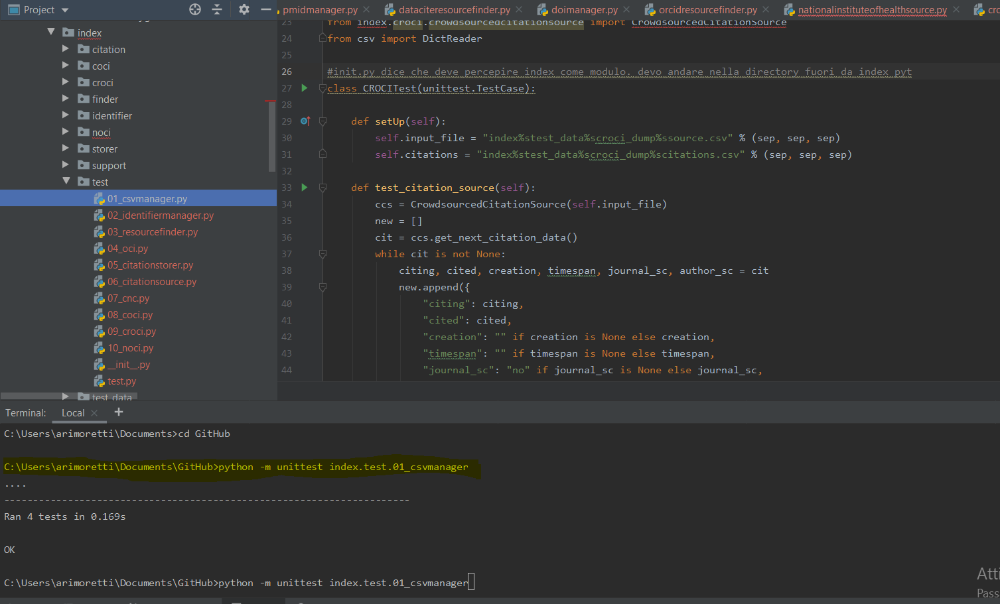

UnitTest Introduction
UnitTest is a test runner built into a python library, containing both a testing framework and a test runner.
Requirements:
- tests must be included into classes as methods
- instead of the built-in statement "assert", the special assertion methods in unittest.TestCase class must be used
Example 1
file test_sum_2.py
def test_sum():
assert sum([1, 2, 3]) == 6, "Should be 6"
def test_sum_tuple():
assert sum((1, 2, 2)) == 6, "Should be 6"
if __name__ == "__main__":
test_sum()
test_sum_tuple()
print("Everything passed")
Steps of the procedure to convert the aforementioned example into a unittest case:
- import unittest from the library
- create a TestSum class, inherited from TestCase class
- use self as first argument, so that functions are turned into methods
- change assertions, so to use self.assertEqual() method from the TestCase class
- change the command-line entry point to call unittest.main()

assert
The assert keyword lets you test if a condition in your code returns True, if not, the program will raise an AssertionError.
You can write a message to be written if the code returns False
x = "hello"
#if condition returns True, then nothing happens:
assert x == "hello"
#if condition returns False, AssertionError is raised:
assert x == "goodbye"
Source: w3school.com
Source:realpython.com
Example 2
import unittest
def add_fish_to_aquarium(fish_list):
if len(fish_list) > 10:
raise ValueError("A maximum of 10 fish can be added to the aquarium")
return {"tank_a": fish_list}
class TestAddFishToAquarium(unittest.TestCase):
def test_add_fish_to_aquarium_success(self):
actual = add_fish_to_aquarium(fish_list=["shark", "tuna"])
expected = {"tank_a": ["shark", "tuna"]}
self.assertEqual(actual, expected)
Procedure:
- Import unittest
- Define the function to test, defining also cases in which the function raises errors
- Define a class as a subclass of unittest.TestCase
- Define one or more methods of the defined class (with self argument). This test function calls the function to test with a specific input and verifies whether the actual returned value matches the expected one
- Execute the test (from command line: python -m unittest test_add_fish_to_aquarium.py)
Source https://www.digitalocean.com/
Example 3
import unittest
class TestStringMethods(unittest.TestCase):
def test_upper(self):
self.assertEqual('foo'.upper(), 'FOO')
def test_isupper(self):
self.assertTrue('FOO'.isupper())
self.assertFalse('Foo'.isupper())
def test_split(self):
s = 'hello world'
self.assertEqual(s.split(), ['hello', 'world'])
# check that s.split fails when the separator is not a string
with self.assertRaises(TypeError):
s.split(2)
if __name__ == '__main__':
unittest.main()
Procedure:
- import unittest
- a testcase is created by subclassing unittest.TestCase.
- individual tests are defined with methods whose names start with the letters test, in order to inform the test runner about which methods represent tests.
- each test is a call to assertEqual() to check for an expected result; assertTrue() or assertFalse() to verify a condition; or assertRaises() to verify that a specific exception gets raised. Differently from the simple assert statement, these methods allow the test runner to accumulate all test results and produce a report.
- setUp() and tearDown() methods allow you to define instructions that will be executed before and after each test method.
- unittest.main() is a simple way to run the tests. Provides a command-line interface to the test script.
- Passing the -v option to your test script will instruct unittest.main() to enable a higher level of verbosity, so that each test's outcome can be seen individually.
Source unittest documentation
Classes and functions
Method called immediately after the test method has been called and the result recorded. This is called even if the test method raised an exception, so the implementation in subclasses may need to be particularly careful about checking internal state. This method will only be called if the setUp() succeeds, regardless of the outcome of the test method.
Method called to prepare the test fixture. This is called immediately before calling the test method; other than AssertionError or SkipTest, any exception raised by this method will be considered an error rather than a test failure.
Test that first and second are not equal. If the values do compare equal, the test will fail.
Test that first and second are not equal. If the values do compare equal, the test will fail.
Test that expr is true (or false).
Test that first and second are (or are not) the same object.
Test that expr is (or is not) None
Test that member is (or is not) in container.
Test that obj is (or is not) an instance of cls (which can be a class or a tuple of classes, as supported by isinstance()). To check for the exact type, use assertIs(type(obj), cls).
Test that sequence first contains the same elements as second, regardless of their order.
Test that the multiline string first is equal to the string second.
Tests that two lists or tuples are equal. If not, an error message is constructed that shows only the differences between the two.
Tests that two sets are equal. If not, an error message is constructed that lists the differences between the sets. This method is used by default when comparing sets or frozensets with assertEqual().
Test that two dictionaries are equal. If not, an error message is constructed that shows the differences in the dictionaries. This method will be used by default to compare dictionaries in calls to assertEqual().
Tests that two lists or tuples are equal. If not, an error message is constructed that shows only the differences between the two.
Source unittest documentation
Organizing test code
- In unittest, test cases are unittest.TestCase instances.
- The testing code of a TestCase instance should be entirely self contained, in order to be runnable either in isolation or in combination
- In order to test, the assert*() methods provided by the TestCase base class are used. When the test fails, an exception is raised with an explanatory message, and unittest identifies the test case as a failure.
- When many tests with repetitive set ups have to be executed, setUP() method can be automatically called for every test run.
- tearDown() method, similarly, tidies up after the test method has been run
- Such a working environment for the testing code is called a test fixture. A new TestCase instance is created as a unique test fixture used to execute each individual test method. Thus setUp(), tearDown(), and __init__() will be called once per test.
- Test suite, represented by unittest’s TestSuite class, is a mechanism to group TestCase implementations according to the features they test.
Source unittest documentation
Reusing old test code
FunctionTestCase class: TestCase subclass to wrap an existing test function.
testcase = unittest.FunctionTestCase(testSomething,
setUp=makeSomethingDB,
tearDown=deleteSomethingDB)
Source unittest documentation
index/test/09_croci.py/
import unittest
from index.coci.glob import process
from os import sep, makedirs
from os.path import exists
from shutil import rmtree
from index.storer.csvmanager import CSVManager
from index.croci.crowdsourcedcitationsource import CrowdsourcedCitationSource
from csv import DictReader
class CROCITest(unittest.TestCase):
def setUp(self):
self.input_file = "index%stest_data%scroci_dump%ssource.csv" % (sep, sep, sep)
self.citations = "index%stest_data%scroci_dump%scitations.csv" % (sep, sep, sep)
def test_citation_source(self):
ccs = CrowdsourcedCitationSource(self.input_file)
new = []
cit = ccs.get_next_citation_data()
while cit is not None:
citing, cited, creation, timespan, journal_sc, author_sc = cit
new.append({
"citing": citing,
"cited": cited,
"creation": "" if creation is None else creation,
"timespan": "" if timespan is None else timespan,
"journal_sc": "no" if journal_sc is None else journal_sc,
"author_sc": "no" if author_sc is None else author_sc
})
cit = ccs.get_next_citation_data()
with open(self.citations) as f:
old = list(DictReader(f))
self.assertEqual(new, old)
def process(input_dir, output_dir):
if not exists(output_dir):
makedirs(output_dir)
- os.sep: The character used by the operating system to separate pathname components. This is '/' for POSIX and '\\' for Windows. Note that knowing this is not sufficient to be able to parse or concatenate pathnames — use os.path.split() and os.path.join() — but it is occasionally useful. Also available via os.path.
- os.makedirs: os.makedirs(name, mode=0o777, exist_ok=False) is a recursive directory creation function. Like mkdir(), but makes all intermediate-level directories needed to contain the leaf directory.
os.path.exists:os.path.exists(path) return True if path refers to an existing path or an open file descriptor. Returns False for broken symbolic links. On some platforms, this function may return False if permission is not granted to execute os.stat() on the requested file, even if the path physically exists. In more recent versions (Python 3.3 and 3.6) path can be an integer (True is returned if it is an open file descriptor, False otherwise) and paths like objects are now accepted.
shutil.rmtree: shutil.rmtree(path, ignore_errors=False, onerror=None) delete an entire directory tree; path must point to a directory (but not a symbolic link to a directory). If ignore_errors is true, errors resulting from failed removals will be ignored; if false or omitted, such errors are handled by calling a handler specified by onerror or, if that is omitted, they raise an exception.
class CSVManager(object):
"""This class is able to load a simple CSV composed by two fields, 'id' and
'value', and then to index all its items in a structured form so as to be
easily queried. In addition, it allows one to store new information in the CSV,
if needed."""
def __init__(self, csv_path=None, line_threshold=10000, store_new=True):
self.csv_path = csv_path
self.data = {}
self.store_new = store_new
if csv_path is not None and exists(csv_path):
CSVManager.__load_all_csv_files([csv_path], self.__load_csv, line_threshold=line_threshold)
@staticmethod
def load_csv_column_as_set(file_or_dir_path, key, line_threshold=10000):
result = set()
if exists(file_or_dir_path):
file_to_process = []
if isdir(file_or_dir_path):
for cur_dir, cur_subdir, cur_files in walk(file_or_dir_path):
for cur_file in cur_files:
if cur_file.endswith(".csv"):
file_to_process.append(cur_dir + sep + cur_file)
else:
file_to_process.append(file_or_dir_path)
for item in CSVManager.__load_all_csv_files(file_to_process, CSVManager.__load_csv_by_key,
line_threshold=line_threshold, key=key):
result.update(item)
return result
@staticmethod
def __load_csv_by_key(csv_string, key):
result = set()
csv_metadata = DictReader(StringIO(csv_string), delimiter=',')
for row in csv_metadata:
result.add(row[key])
return result
@staticmethod
def __load_all_csv_files(list_of_csv_files, fun, line_threshold, **params):
result = []
header = None
for csv_path in list_of_csv_files:
with open(csv_path, encoding="utf-8") as f:
csv_content = ""
for idx, line in enumerate(f.readlines()):
if header is None:
header = line
csv_content = header
else:
if idx % line_threshold == 0:
result.append(fun(csv_content, **params))
csv_content = header
csv_content += line
result.append(fun(csv_content, **params))
return result
def get_value(self, id_string):
"""It returns the set of values associated to the input 'id_string',
or None if 'id_string' is not included in the CSV."""
if id_string in self.data:
return set(self.data[id_string])
def add_value(self, id_string, value):
"""It adds the value specified in the set of values associated to 'id_string'.
If the object was created with the option of storing also the data in a CSV
('store_new' = True, default behaviour), then it also add new data in the CSV."""
if id_string not in self.data:
self.data[id_string] = set()
if value not in self.data[id_string]:
self.data[id_string].add(value)
if self.csv_path is not None and self.store_new:
if not exists(self.csv_path):
with open(self.csv_path, "w") as f:
f.write('"id","value"\n')
with open(self.csv_path, "a") as f:
f.write('"%s","%s"\n' % (id_string.replace('"', '""'),
value.replace('"', '""')))
def __load_csv(self, csv_string):
csv_metadata = DictReader(StringIO(csv_string), delimiter=',')
for row in csv_metadata:
cur_id = row["id"]
if cur_id not in self.data:
self.data[cur_id] = set()
self.data[cur_id].add(row["value"])
class CrowdsourcedCitationSource(CSVFileCitationSource):
def __init__(self, src, local_name=""):
self.doi = DOIManager()
super(CrowdsourcedCitationSource, self).__init__(src, local_name)
def get_next_citation_data(self):
row = self._get_next_in_file()
while row is not None:
citing = self.doi.normalise(row.get("citing_id"))
cited = self.doi.normalise(row.get("cited_id"))
if citing is not None and cited is not None:
created = row.get("citing_publication_date")
if not created:
created = None
cited_pub_date = row.get("cited_publication_date")
if not cited_pub_date:
timespan = None
else:
c = Citation(None, None, created, None, cited_pub_date, None, None, None, None, "", None, None, None, None, None)
timespan = c.duration
self.update_status_file()
return citing, cited, created, timespan, None, None
self.update_status_file()
row = self._get_next_in_file()
remove(self.status_file)
class csv.DictReader(f, fieldnames=None, restkey=None, restval=None, dialect='excel', *args, **kwds) create an object that operates like a regular reader but maps the information in each row to a dict whose keys are given by the optional fieldnames parameter. The fieldnames parameter is a sequence. If fieldnames is omitted, the values in the first row of file f will be used as the fieldnames. Regardless of how the fieldnames are determined, the dictionary preserves their original ordering. If a row has more fields than fieldnames, the remaining data is put in a list and stored with the fieldname specified by restkey (which defaults to None). If a non-blank row has fewer fields than fieldnames, the missing values are filled-in with the value of restval (which defaults to None).
Example:
>>> import csv
>>> with open('names.csv', newline='') as csvfile:
... reader = csv.DictReader(csvfile)
... for row in reader:
... print(row['first_name'], row['last_name'])
...
Eric Idle
John Cleese
>>> print(row)
{'first_name': 'John', 'last_name': 'Cleese'}
Sources:The Python Standard Library and OpenCitations Index
Exercises
Beginners 1
import unittest
def t(x, y):
return x + y - 2
class TestT(unittest.TestCase):
def test_t(self):
actual = t(x=5, y=6)
expected = 5+6-2
self.assertEqual(actual, expected)
In this way it works
import unittest
class TestT(unittest.TestCase):
def test_t(self):
result = t(x, y)
expected = x + y -2
self.assertEqual(result, expected)
def t(x, y):
return x + y - 2
((In this way it doesn't. I think I know why but I'd like to clarify this point))
def t(x, y):
return x + y - 2
import unittest
class TestT(unittest.TestCase):
def test_t(self):
self.assertEqual(t(5,9), 12)
if __name__ == "__main__":
unittest.main()
In this way it works and I also have the result displayed in Pycharm console
Beginners 2
def f(s1, s2):
if len(s1) > len(s2):
return -1
elif len(s1) < len(s2):
return 1
else:
return 0
import unittest
class TestF(unittest.TestCase):
def test_f(self):
self.assertEqual(f("dog","cat"), 0)
self.assertEqual(f("dog","monkey"), 1)
self.assertEqual(f("dog", "my"), -1)
if __name__ == "__main__":
unittest.main()
Beginners 3
def f(s1, s2):
result = set()
for c in s1:
if c in s2:
result.add(c)
return result
import unittest
class TestF(unittest.TestCase):
def test_f(self):
self.assertEqual(f("123","435"), {"3"})
self.assertEqual(f("126","435"), set()) #if I use {} it doesn't work
self.assertEqual(f("brother","sister"), {"r","t","e"})
self.assertEqual(f("cat","catsitter"), {"c","a","t"})
if __name__ == "__main__":
unittest.main()
Original codes source: The CTP Book
Issues
- # check that s.split fails when the separator is not a string \\ with self.assertRaises(TypeError):\\ s.split(2)\\?
- Why is unittest more efficient then other testing approaches?
- In practice, when and how do we use assertRaises(TypeError)?
- if __name__ == '__main__':\\ unittest.main()
- In many of the tutorials I followed the code is launched through the command prompt. Is it necessary or suggested? Can I work with Pycharm only?
- Is TestSuit necessary in our case? "In most cases, calling unittest.main() will do the right thing and collect all the module’s test cases for you and execute them."
- Does the assertEqual have more or less the same function of the print part of the test case that we used in CTP course? (since -in order to make the test work- some values have to be assigned to the arguments of the tested function)
- For now I'm only using assertEqual() since I have some troubles in understanding how all the other methods could be applied in tests (how can I do something more than testing if the result of the function matches the expected one? In OpenCitation which other ones are mainly used?).
- SetUp(): real contexts of use (examples)? In particular setUp in CrociTest
self.input_file = "index%stest_data%scroci_dump%ssource.csv" % (sep, sep, sep)
self.citations = "index%stest_data%scroci_dump%scitations.csv" % (sep, sep, sep)
NIH library data
Ten examples
I randomly extracted ten samples from the open_citation_collection.csv and I stored the data in a new csv file (open_citation_collection_sample.csv, then renamed source.csv).
C:\Users\arimoretti\Desktop\TESI\icite>pip install subsample
Collecting subsample
Downloading https://files.pythonhosted.org/packages/21/86/ff247222b81baa8b47a9970c76e6f930662d7b9336e669f7e4b39857e674/subsample-0.0.6.tar.gz
Installing collected packages: subsample
Running setup.py install for subsample ... done
Successfully installed subsample-0.0.6
WARNING: You are using pip version 19.2.3, however version 21.0.1 is available.
You should consider upgrading via the 'python -m pip install --upgrade pip' command.
C:\Users\arimoretti\Desktop\TESI\icite>subsample -n 10 open_citation_collection.csv > open_citation_collection_sample.csv
LOG 03:21 > Data begins at 0
C:\Users\arimoretti\Desktop\TESI\icite>
- 2140506,2942070
- 1523579,7097569
- 1509982,6501574
- 1968312,13673087
- 2330868,3958380
- 1854174,3037997
- 2038824,2494239
- 2373284,7189714
- 3591292,4092853
- 2368927,355650
Notes on format
Before extracting data, we expected these to be either PMCID or PMID. The pure numeric format denotes that we are handling PMIDs.
OC process is based on the use of a tuple of six values derived from the citation source(citing, cited, created, timespan, journal_sc, author_sc). However, here we just have two of these values, which are also the only indispensable ones (i.e. citing + referenced/cited).
Data mapping
The 2 primary identifiers are not DOIs, but PubMedID. Since until now only DOIs have been managed by our process, some of these citations may already be present in Open Citations (COCI: doi to doi only).
In NIH dataset some articles probably have a doi, but exposed differently. So our options for the mapping are:
- use article additional data provided by icite
- use external mapping datasets
External mapping tools
Results obtained with www.pmid2cite.com
| PMID citing | DOI citing | PMID referenced | DOI referenced | |
| 1 | 2140506 | 10.1111/j.1445-5994.1990.tb01289.x | 2942070 | 10.7326/0003-4819-105-2-173 |
| 2 | 1523579 | 10.1002/tera.1420460305 | 7097569 | Unable to resolve the DOI |
| 3 | 1509982 | 10.1007/BF01990957 | 6501574 | 10.1172/JCI111604 |
| 4 | 1968312 | 10.1016/0002-9149(90)90817-k | 13673087 | 10.1172/JCI103906 |
| 5 | 2330868 | 10.1016/s0002-8703(05)80240-6 | 3958380 | 10.1016/s0735-1097(86)80214-5 |
| 6 | 1854174 | 10.1128/aac.35.5.929 | 3037997 | |
| 7 | 2038824 | 10.1016/0165-2427(91)90031-7 | 2494239 | 10.3168/jds.S0022-0302(89)79089-5 |
| 8 | 2373284 | 10.1111/j.1432-0436.1990.tb00437.x | 7189714 | 10.1016/0014-4827(80)90437-1 |
| 9 | 3591292 | 10.1111/j.1651-2227.1987.tb10456.x | 4092853 | 10.1111/j.1469-8749.1985.tb03805.x |
| 10 | 2368927 | 10.1002/ar.1092270109 | 355650 | Unable to resolve the DOI |
Results obtained with /www.ncbi.nlm.nih.gov
| PMID citing | DOI citing | PMID referenced | DOI referenced | |
| 1 | 2140506 | "" | 2942070 | "" |
| 2 | 1523579 | "" | 7097569 | "" |
| 3 | 1509982 | "" | 6501574 | 10.1172/JCI111604 |
| 4 | 1968312 | "" | 13673087 | 10.1172/JCI103906 |
| 5 | 2330868 | "" | 3958380 | "" |
| 6 | 1854174 | 10.1128/aac.35.5.929 | 3037997 | |
| 7 | 2038824 | "" | 2494239 | "" |
| 8 | 2373284 | "" | 7189714 | "" |
| 9 | 3591292 | "" | 4092853 | "" |
| 10 | 2368927 | "" | 355650 | "" |
As we can see, results obtained by using different tools are not the same. It is evident that the first tool obtains better results, but - most importantly - neither the one nor the other is able to match 100% of PMID-DOI couples. So, the mapping is incomplete.
Notes on expected structure of the main function
In order to understand what kind of input and output to expect, we can start from the model provided by CROCI.
Test Case development
Reference Test Case:
index/test/09_croci.py
import unittest
from index.coci.glob import process
from os import sep, makedirs
from os.path import exists
from shutil import rmtree
from index.storer.csvmanager import CSVManager
from index.croci.crowdsourcedcitationsource import CrowdsourcedCitationSource
from csv import DictReader
class CROCITest(unittest.TestCase):
def setUp(self):
self.input_file = "index%stest_data%scroci_dump%ssource.csv" % (sep, sep, sep)
self.citations = "index%stest_data%scroci_dump%scitations.csv" % (sep, sep, sep)
def test_citation_source(self):
ccs = CrowdsourcedCitationSource(self.input_file)
new = []
cit = ccs.get_next_citation_data()
while cit is not None:
citing, cited, creation, timespan, journal_sc, author_sc = cit
new.append({
"citing": citing,
"cited": cited,
"creation": "" if creation is None else creation,
"timespan": "" if timespan is None else timespan,
"journal_sc": "no" if journal_sc is None else journal_sc,
"author_sc": "no" if author_sc is None else author_sc
})
cit = ccs.get_next_citation_data()
with open(self.citations) as f:
old = list(DictReader(f))
self.assertEqual(new, old)On this base, a basic idea of index/test/(n?)_noci.py
import unittest
from index.coci.glob import process #something to be developed to perform the same task but with pmids
from os import sep, makedirs #Recursive directory creation function. Like mkdir(), but makes all intermediate-level directories needed to contain the leaf directory.
from os.path import exists #used to check whether the specified path exists or not.
from shutil import rmtree #used to delete an entire directory tree, path must point to a directory (but not a symbolic link to a directory)
from index.storer.csvmanager import CSVManager #This class is able to load a simple CSV composed by two fields, 'id' and'value', and then to index all its items in a structured form so as to be easily queried. In addition, it allows one to store new information in the CSV, if needed.
from index.noci.nationalinstituteofhealthsource import NationalInstitutHealthSource #crowdsourcedcitationsource sostituito
from csv import DictReader
class NOCITest(unittest.TestCase):
def setUp(self): #The self parameter is a reference to the current instance of the class, and is used to access variables that belongs to the class.
self.input_file = "index%stest_data%snoci_dump%ssource.csv" % (sep, sep, sep) #without placeholders for the tuple format, data as provided by NIH
self.citations = "index%stest_data%snoci_dump%scitations.csv" % (sep, sep, sep) #adaptation for tuple format, with all 6 fields
def test_citation_source(self):
ns = NationalInstitutHealthSource(self.input_file) #class of nationalinstituteofhealthsource, where a version of get next citation handling pmid data will be defined.
new = []
cit = ns.get_next_citation_data_pmidversion() #will extract citational data from our input file, which is the source one, with just citing and cited
while cit is not None: #(which is: until we have citational data)
citing, cited, creation, timespan, journal_sc, author_sc = cit #related to the csv format (?) does the comma separator define the fields, so that cit becomes che full ciation divided by fields?
#we append each citational data to the new list (which will be a list of dictionaries), in the format required for the 6-elements tuple.
new.append({
"citing": citing,
"cited": cited,
"creation": "" if creation is None else creation, #in all our cases the last four fields will be "","","no","no"
"timespan": "" if timespan is None else timespan,
"journal_sc": "no" if journal_sc is None else journal_sc,
"author_sc": "no" if author_sc is None else author_sc
})
cit = ns.get_next_citation_data_pmidversion() #cit variable is assigned the value of the subsequent citational datum from input_file (source.csv)
with open(self.citations) as f: #open the file as a parameter of a function, this time the csv with the data compiled in the 6-elements tuple format
old = list(DictReader(f)) #a list of dictionaries is derived from data in citations.
self.assertEqual(new, old) #check that the lists of dictionaries derived respectively from source and from citations are the equal.
Prompt: basic commands
General
- Lists Installed Drivers (driverquery): get a full list of installed drivers in your pc (driverquery -v to obtain more information).
- ipconfig: provides your ip address + your local network.
- systeminfo: to know very basic information about your pc’s hardware, like – motherboard, processor, ram
- ping:sends packets of data to a specific IP address (or domain) on a network and then lets you know how long it took to transmit that data and get a response (ping + ip or domain).
- sfc /scannowscan and repare windown system files. But you must be run the console as an administrator
- tasklist: gets a list of all tasks running on your pc (tasklist -v).
- cd:
- cd\ to go to the top of the directory tree
- CD Folderto go to a specific folder from this drive. The subfolders must be separated by a backslash character: \.
- cd..to go one folder up.
- To change the drive from “C:” to “D:”, type d:
- mkdir: (Make Directory) command. mkdir Folder creates a folder.
- cls: clear screen, to clear the command prompt screen.
Source: dev.to
Unittest
Unittest from command line in order to make tests on modules, classes or specific methods
- python -m unittest test_module1 test_module2
- python -m unittest test_module.TestClass
- python -m unittest test_module.TestClass.test_method
Test modules can be specified by file path, e.g.: python -m unittest tests/test_something.py
For additional information, we can obtain tests with more detail (higher verbosity) by passing in the -v flag: python -m unittest -v test_module
List of all command line options: python -m unittest -h
C:\Users\arimoretti>python -m unittest -h
usage: python.exe -m unittest [-h] [-v] [-q] [--locals] [-f] [-c] [-b] [-k TESTNAMEPATTERNS] [tests [tests ...]]
positional arguments:
tests a list of any number of test modules, classes and test methods.
optional arguments:
-h, --help show this help message and exit
-v, --verbose Verbose output
-q, --quiet Quiet output
--locals Show local variables in tracebacks
-f, --failfast Stop on first fail or error
-c, --catch Catch Ctrl-C and display results so far
-b, --buffer Buffer stdout and stderr during tests
-k TESTNAMEPATTERNS Only run tests which match the given substring
Examples:
python.exe -m unittest test_module - run tests from test_module
python.exe -m unittest module.TestClass - run tests from module.TestClass
python.exe -m unittest module.Class.test_method - run specified test method
python.exe -m unittest path/to/test_file.py - run tests from test_file.py
usage: python.exe -m unittest discover [-h] [-v] [-q] [--locals] [-f] [-c] [-b] [-k TESTNAMEPATTERNS] [-s START]
[-p PATTERN] [-t TOP]
optional arguments:
-h, --help show this help message and exit
-v, --verbose Verbose output
-q, --quiet Quiet output
--locals Show local variables in tracebacks
-f, --failfast Stop on first fail or error
-c, --catch Catch Ctrl-C and display results so far
-b, --buffer Buffer stdout and stderr during tests
-k TESTNAMEPATTERNS Only run tests which match the given substring
-s START, --start-directory START
Directory to start discovery ('.' default)
-p PATTERN, --pattern PATTERN
Pattern to match tests ('test*.py' default)
-t TOP, --top-level-directory TOP
Top level directory of project (defaults to start directory)
For test discovery (python -m unittest) all test modules must be importable from the top level directory of the project.
C:\Users\arimoretti>
Source: docs.python.org
Clone locally OC index so to run tests.
I tried to clone OC index locally but something went wrong.
Cloning into 'C:\Users\arimoretti\Documents\GitHub\index'...
remote: Enumerating objects: 1040, done.
remote: Counting objects: 100% (1040/1040), done.
remote: Compressing objects: 100% (481/481), done.
remote: Total 1040 (delta 373), reused 913 (delta 254), pack-reused 0
Receiving objects: 100% (1040/1040), 172.79 KiB | 875.00 KiB/s, done.
Resolving deltas: 100% (373/373), done.
error: invalid path 'test_data/tmp_load/data/csv/2020/05/2020-05-18T11:01:36_1.csv'
fatal: unable to checkout working tree
warning: Clone succeeded, but checkout failed.
You can inspect what was checked out with 'git status'
and retry with 'git restore --source=HEAD :/'
Then I tried to fix it on my own but I didn't succeed.
C:\Users\arimoretti\Documents\GitHub\index> git status
On branch master
Your branch is up to date with 'origin/master'.
Changes to be committed:
(use "git restore --staged ..." to unstage)
deleted: .gitignore
deleted: README.md
deleted: __init__.py
deleted: citation/__init__.py
deleted: citation/citationsource.py
deleted: citation/oci.py
deleted: cnc.py
deleted: coci/checkmetadata.py
deleted: coci/crossrefcitationsource.py
deleted: coci/glob.py
deleted: coci/trimdump.py
deleted: croci/crowdsourcedcitationsource.py
deleted: finder/__init__.py
deleted: finder/crossrefresourcefinder.py
deleted: finder/dataciteresourcefinder.py
deleted: finder/orcidresourcefinder.py
deleted: finder/resourcefinder.py
deleted: identifier/doimanager.py
deleted: identifier/identifiermanager.py
deleted: identifier/issnmanager.py
deleted: identifier/orcidmanager.py
deleted: storer/__init__.py
deleted: storer/citationstorer.py
deleted: storer/csvmanager.py
deleted: storer/updatetp.py
deleted: support/__init__.py
deleted: support/csv.py
deleted: support/dictionary.py
deleted: support/stats.py
deleted: test/01_csvmanager.py
deleted: test/02_identifiermanager.py
deleted: test/03_resourcefinder.py
deleted: test/04_oci.py
deleted: test/05_citationstorer.py
deleted: test/06_citationsource.py
deleted: test/07_cnc.py
deleted: test/08_coci.py
deleted: test/09_croci.py
deleted: test/__init__.py
deleted: test/test.py
deleted: test_data/additional_data.csv
deleted: test_data/citations_data.csv
deleted: test_data/citations_data.ttl
deleted: test_data/citations_data_prov.scholix
deleted: test_data/citations_partial.csv
deleted: test_data/citations_prov.csv
deleted: test_data/citations_prov.ttl
deleted: test_data/cnc_id_date.csv
deleted: test_data/cnc_id_issn.csv
deleted: test_data/cnc_id_orcid.csv
deleted: test_data/cnc_valid_doi.csv
deleted: test_data/croci_dump/citations.csv
deleted: test_data/croci_dump/source.csv
deleted: test_data/crossref_dump/1.json
deleted: test_data/crossref_dump/2.json
deleted: test_data/crossref_dump/citations.csv
deleted: test_data/crossref_dump/id_date.csv
deleted: test_data/crossref_dump/id_issn.csv
deleted: test_data/crossref_dump/id_orcid.csv
deleted: test_data/crossref_dump/valid_doi.csv
deleted: test_data/crossref_glob/id_date.csv
deleted: test_data/crossref_glob/id_issn.csv
deleted: test_data/crossref_glob/id_orcid.csv
deleted: test_data/crossref_glob/valid_doi.csv
deleted: test_data/id_date.csv
deleted: test_data/id_issn.csv
deleted: test_data/id_orcid.csv
deleted: test_data/initial_data.csv
deleted: test_data/lookup_full.csv
deleted: test_data/lookup_new.csv
deleted: test_data/tmp_load/data/csv/2020/05/2020-05-18T11:01:36_1.csv
deleted: test_data/tmp_load/data/rdf/2020/05/2020-05-18T11:01:36_1.ttl
deleted: test_data/tmp_load/data/slx/2020/05/2020-05-18T11:01:36_1.scholix
deleted: test_data/tmp_load/prov/csv/2020/05/2020-05-18T11:01:36_1.csv
deleted: test_data/tmp_load/prov/rdf/2020/05/2020-05-18T11:01:36_1.ttl
deleted: test_data/tmp_store/data/csv/2020/05/2020-05-18T11:01:36_1.csv
deleted: test_data/tmp_store/data/csv/2020/05/2020-05-18T11:01:36_2.csv
deleted: test_data/tmp_store/data/csv/2020/05/2020-05-18T11:01:36_3.csv
deleted: test_data/tmp_store/data/rdf/2020/05/2020-05-18T11:01:36_1.ttl
deleted: test_data/tmp_store/data/rdf/2020/05/2020-05-18T11:01:36_2.ttl
deleted: test_data/tmp_store/data/rdf/2020/05/2020-05-18T11:01:36_3.ttl
deleted: test_data/tmp_store/data/rdf/2020/05/2020-05-18T11:01:36_4.ttl
deleted: test_data/tmp_store/data/rdf/2020/05/2020-05-18T11:01:36_5.ttl
deleted: test_data/tmp_store/data/rdf/2020/05/2020-05-18T11:01:36_6.ttl
deleted: test_data/tmp_store/data/slx/2020/05/2020-05-18T11:01:36_1.scholix
deleted: test_data/tmp_store/data/slx/2020/05/2020-05-18T11:01:36_2.scholix
deleted: test_data/tmp_store/data/slx/2020/05/2020-05-18T11:01:36_3.scholix
deleted: test_data/tmp_store/data/slx/2020/05/2020-05-18T11:01:36_4.scholix
deleted: test_data/tmp_store/prov/csv/2020/05/2020-05-18T11:01:36_1.csv
deleted: test_data/tmp_store/prov/csv/2020/05/2020-05-18T11:01:36_2.csv
deleted: test_data/tmp_store/prov/csv/2020/05/2020-05-18T11:01:36_3.csv
deleted: test_data/tmp_store/prov/rdf/2020/05/2020-05-18T11:01:36_1.ttl
deleted: test_data/tmp_store/prov/rdf/2020/05/2020-05-18T11:01:36_2.ttl
deleted: test_data/tmp_store/prov/rdf/2020/05/2020-05-18T11:01:36_3.ttl
deleted: test_data/tmp_store/prov/rdf/2020/05/2020-05-18T11:01:36_4.ttl
deleted: test_data/tmp_store/prov/rdf/2020/05/2020-05-18T11:01:36_5.ttl
deleted: test_data/tmp_store/prov/rdf/2020/05/2020-05-18T11:01:36_6.ttl
deleted: test_data/tmp_workflow/data/csv/2020/05/2020-05-18T11:01:49_1.csv
deleted: test_data/tmp_workflow/data/rdf/2020/05/2020-05-18T11:01:49_1.ttl
deleted: test_data/tmp_workflow/data/slx/2020/05/2020-05-18T11:01:49_1.scholix
deleted: test_data/tmp_workflow/prov/csv/2020/05/2020-05-18T11:01:49_1.csv
deleted: test_data/tmp_workflow/prov/rdf/2020/05/2020-05-18T11:01:49_1.ttl
deleted: test_data/valid_doi.csv
C:\Users\arimoretti\Documents\GitHub\index>git restore --staged test_data/tmp_load/data/csv/2020/05/2020-05-18T11:01:36_1.csv
error: invalid path 'test_data/tmp_load/data/csv/2020/05/2020-05-18T11:01:36_1.csv'
error: pathspec 'test_data/tmp_load/data/csv/2020/05/2020-05-18T11:01:36_1.csv' did not match any file(s) known to git
C:\Users\arimoretti\Documents\GitHub\index>git restore --source=HEAD :/
error: invalid path 'test_data/tmp_load/data/csv/2020/05/2020-05-18T11:01:36_1.csv'
error: invalid path 'test_data/tmp_load/data/rdf/2020/05/2020-05-18T11:01:36_1.ttl'
error: invalid path 'test_data/tmp_load/data/slx/2020/05/2020-05-18T11:01:36_1.scholix'
error: invalid path 'test_data/tmp_load/prov/csv/2020/05/2020-05-18T11:01:36_1.csv'
error: invalid path 'test_data/tmp_load/prov/rdf/2020/05/2020-05-18T11:01:36_1.ttl'
error: invalid path 'test_data/tmp_store/data/csv/2020/05/2020-05-18T11:01:36_1.csv'
error: invalid path 'test_data/tmp_store/data/csv/2020/05/2020-05-18T11:01:36_2.csv'
error: invalid path 'test_data/tmp_store/data/csv/2020/05/2020-05-18T11:01:36_3.csv'
error: invalid path 'test_data/tmp_store/data/rdf/2020/05/2020-05-18T11:01:36_1.ttl'
error: invalid path 'test_data/tmp_store/data/rdf/2020/05/2020-05-18T11:01:36_2.ttl'
error: invalid path 'test_data/tmp_store/data/rdf/2020/05/2020-05-18T11:01:36_3.ttl'
error: invalid path 'test_data/tmp_store/data/rdf/2020/05/2020-05-18T11:01:36_4.ttl'
error: invalid path 'test_data/tmp_store/data/rdf/2020/05/2020-05-18T11:01:36_5.ttl'
error: invalid path 'test_data/tmp_store/data/rdf/2020/05/2020-05-18T11:01:36_6.ttl'
error: invalid path 'test_data/tmp_store/data/slx/2020/05/2020-05-18T11:01:36_1.scholix'
error: invalid path 'test_data/tmp_store/data/slx/2020/05/2020-05-18T11:01:36_2.scholix'
error: invalid path 'test_data/tmp_store/data/slx/2020/05/2020-05-18T11:01:36_3.scholix'
error: invalid path 'test_data/tmp_store/data/slx/2020/05/2020-05-18T11:01:36_4.scholix'
error: invalid path 'test_data/tmp_store/prov/csv/2020/05/2020-05-18T11:01:36_1.csv'
error: invalid path 'test_data/tmp_store/prov/csv/2020/05/2020-05-18T11:01:36_2.csv'
error: invalid path 'test_data/tmp_store/prov/csv/2020/05/2020-05-18T11:01:36_3.csv'
error: invalid path 'test_data/tmp_store/prov/rdf/2020/05/2020-05-18T11:01:36_1.ttl'
error: invalid path 'test_data/tmp_store/prov/rdf/2020/05/2020-05-18T11:01:36_2.ttl'
error: invalid path 'test_data/tmp_store/prov/rdf/2020/05/2020-05-18T11:01:36_3.ttl'
error: invalid path 'test_data/tmp_store/prov/rdf/2020/05/2020-05-18T11:01:36_4.ttl'
error: invalid path 'test_data/tmp_store/prov/rdf/2020/05/2020-05-18T11:01:36_5.ttl'
error: invalid path 'test_data/tmp_store/prov/rdf/2020/05/2020-05-18T11:01:36_6.ttl'
error: invalid path 'test_data/tmp_workflow/data/csv/2020/05/2020-05-18T11:01:49_1.csv'
error: invalid path 'test_data/tmp_workflow/data/rdf/2020/05/2020-05-18T11:01:49_1.ttl'
error: invalid path 'test_data/tmp_workflow/data/slx/2020/05/2020-05-18T11:01:49_1.scholix'
error: invalid path 'test_data/tmp_workflow/prov/csv/2020/05/2020-05-18T11:01:49_1.csv'
error: invalid path 'test_data/tmp_workflow/prov/rdf/2020/05/2020-05-18T11:01:49_1.ttl'
C:\Users\arimoretti\Documents\GitHub\index>git restore --source=HEAD :/
Structure
However, I created some folders on my pc, so to integrate them later, when I'll be able to clone the whole repository locally (an index folder containing 3 folders: noci (with nationalinstituteofhealthsource.py), test (with 10_noci.py) and test_data (with noci_dump, containing citations.csv and source.csv))
Self Citation
In COCI, 29,755,045 (6.7%) citations are journal self-citations, while 250,991 (0.06%)are author self-citations. In fact, the two cases in which we define a self-citation are:
- Citing and Cited articles belong to the same journal
- There is at least one author in common between the group of citing authors and the group of cited authors
However, the second case is more difficult to handle, because of the problem of the sparsity of data about ORCID author identifers in Crossref database.
Source: Software review: COCI, the OpenCitations Index of Crossref open DOI‑to‑DOI citations
Issues
- From my notes in "Meetings": The DOI may be (and probably is) present; however, we can't rely on this + In this dataset we will probably have the "selfcitation" info. --> Since in the open_citation_collection.csv we only have citing and referenced, are those data supposed to be in icite_metadata.zip?
- I tried to use a couple of mapping tools, one of which should be the one we discussed in the last meeting (they basically perform the same task, however).
- For some PMID,e.g. 4151790, I was able to find the correspondent DOI, i.e. 10.1083/jcb.61.3.688, both with www.pmid2cite.com/pmid-to-doi-converter and www.ncbi.nlm.nih.gov/pmc/pmctopmid coverter, (with this latter allowing the download of a generated file in the specified format -in my case I selected CSV*). However, I was not able to use the API service (it's the very first time I've tried to use an API service, so I really don't know where did I go wrong). I typed "service-root?ids=4145504" as required, and got back an error message. Maybe It's not necesary for me in this phase to learn how to use this tool, but I would like to understand why I can't make it work.
- Is it possible/normal that pmid2cite tools performs better than NIH official tool? If so, why?
- I still don't get fully the % separator issue. I tried reading the os documentation and analysing OC correspondent files and I still don't understand (a) why we use % specifying it as separator (instead of the simple slash) and (b)why we add an "s" after it in the path name. I know I asked a similar question last time, but I was pretty sure I understood, while I'm realizing I didn't.
- I have some doubts concerning the general settings of the test function I should develop: It's like it stays really similar to the croci one, and that the only parts that have to be changed are called functions that are external to the test case itself. But maybe the point was just focusing on them, in order to uderstand which parts of the overall process I won't be able to reuse, since they were implementes for DOIs only. In this latter case, I'm not so far from understanding. Otherwise I'll try to study the function better and properly prepare it for next time.
- I didn't succeed in locally cloning the oc index from github.
- In the csv files I created i changed "referenced" with "cited" for uniformity purposes. Is it correct or should I keep the original label by NIH?
- I have some doubts about this line of code in 09_croci.py : citing, cited, creation, timespan, journal_sc, author_sc = cit . Is it like defining the labels of the columns in the csv file? i.e. : is it related to the csv format, so that the comma separator define the fields, and cit becomes che full ciation divided by fields?
- I don't get properly the value of the variable c in this part of the function of the class CrowdsourcedCitationSource in crowdsourcedcitationsource.py:
cited_pub_date = row.get("cited_publication_date")
if not cited_pub_date:
timespan = None
else:
c = Citation(None, None, created, None, cited_pub_date, None, None, None, None, "", None, None, None, None, None)
timespan = c.duration
*
"PMID","PMCID","DOI","Version","MID","IsCurrent","IsLive","ReleaseDate","Msg"
"4151790","PMC2109316","10.1083/jcb.61.3.688","","","",1,"",""
Download Metadata File
sample
"pmid","doi","title","authors","year","journal","is_research_article","citation_count","field_citation_rate","expected_citations_per_year","citations_per_year","relative_citation_ratio","nih_percentile","human","animal","molecular_cellular","x_coord","y_coord","apt","is_clinical","cited_by_clin","cited_by","references","provisional"
20961202,"10.1515/CCLM.2010.324","Thyroid hormones are stable even during prolonged frozen storage.","Tuija Männistö, Eila Suvanto, Heljä-Marja Surcel, Aimo Ruokonen",2010,"Clin. Chem. Lab. Med.",FALSE,7,4.22240468196911,2.40345243945313,0.7,0.29,15.3,0.75,0,0.25,-0.21650635094611,0.625,0.75,FALSE,"","32632723 30734656 31876038 26033776 22323002 27599301 30616423","17954505 20014958","No"
28140346,"10.1088/1758-5090/aa5c1c","Increased lipid accumulation and adipogenic gene expression of adipocytes in 3D bioprinted nanocellulose scaffolds.","I Henriksson, P Gatenholm, D A Hägg",2017,"Biofabrication",TRUE,17,4.05346355438924,2.23977268910794,5.66666666666667,2.53,81.8,0,0.25,0.75,-0.433012701892219,-0.5,0.05,FALSE,"","31992046 32045053 30844234 32159140 31108877 32259809 31273962 30699947 30940007 32365578 30471044 31719887 30741518 31715587 28829453 30271688 31949436","19416711 9442874 17286602 26492473 19402786 20153520 22275210 19398967 26478282 2559938 26017717 24887553 25617132 10875926 15009947 25806996 20170951 24188635 21902468 25411113 22029845 26202781 18038435 18767968 24038000 15084517 26056727 16997371 24912145 17544502 15766899 25384685 23242478 24094166 24866945 23017116 21358040 24464765 26210285 21247363 24192056 25093879 12867492 24819827 26797605 23517589","No"
20961211,"10.3109/10520295.2010.494474","Sensitivity and specificity of cytodiagnosis of body fluids in a laboratory of urgencies.","A E Rocher, F Guerra, J Rofrano, A Angeleri, O E Canessa, G R Mendeluk, L A Palaoro",2011,"Biotech Histochem",TRUE,2,3.22327656896745,1.94254995780862,0.222222222222222,0.11,5.7,1,0,0,0,1,0.05,FALSE,"","27069641 27785319","7819512 7942600 1511123 11349500 19191294 11284303 12589641 10352907 16079317 8693893 17250601 15690338 9237183 8960030 16786726 2430142 1294046 8038428","No"
20961185,"10.1515/CCLM.2011.005","Determination of daptomycin in human plasma by liquid chromatography-tandem mass spectrometry. Clinical application.","Marie-Clémence Verdier, Danièle Bentué-Ferrer, Olivier Tribut, Nicolas Collet, Matthieu Revest, Eric Bellissant",2011,"Clin. Chem. Lab. Med.",TRUE,20,2.97732333867758,1.8402221288327,2.22222222222222,1.21,57.5,0.67,0,0.33,-0.288675134594813,0.5,0.75,FALSE,"28399872 30086083","30295740 28207237 27960546 23545525 21596511 23569376 28399872 31061317 24798278 25979773 32378527 24036034 26020161 30086083 26937555 26512995 23384531 24148450 24037956 26184288","17005801 16455920 1324637 18408238 15762934 12654665 19898996 18838314 9484768 19715980 14972382 17124423 15273084 9061492 17940348 17629567 15705644 17965030 11751107 17284073 1318678 19939597 16455939 16882289 17065618 18829721 19364845 19179125 14693519","No"
25855742,"10.1128/JVI.03156-14","Interaction between TIM-1 and NPC1 Is Important for Cellular Entry of Ebola Virus.","Makoto Kuroda, Daisuke Fujikura, Asuka Nanbo, Andrea Marzi, Osamu Noyori, Masahiro Kajihara, Junki Maruyama, Keita Matsuno, Hiroko Miyamoto, Reiko Yoshida, Heinz Feldmann, Ayato Takada",2015,"J. Virol.",TRUE,29,6.88112871136308,3.49174836367486,5.8,1.66,69.1,0.17,0.5,0.33,0.144337567297406,-0.25,0.25,FALSE,"","32109150 29338048 27147086 31638994 28045014 30441759 31732320 30893855 28483690 32522856 28167539 31648236 29511990 33052961 26509109 29593155 26861827 26875443 26003830 26487564 29411209 27640102 28710692 30615471 32541946 30010949 26923960 31810353 27406444","23084921 9990080 16571833 24478428 22039362 21501828 15220407 11967302 19641222 10092649 15007635 23702199 23233528 21866101 9405687 23555248 14585362 22238307 24131711 20219911 18082433 9525641 22395071 21987776 24122154 23698310 21987779 23288419 16051304 20862315 15383160 15958209 18566430 23035224 14638512 21866103 18414680 20886108 7844558 14990712 15831716 17442946 10479477 11160735 17368819 24738640 12050398 12502850 21536871 15479853","No"
20961186,"10.1515/CCLM.2011.003","Harmonization of free thyroid hormone tests: a mission impossible?","Giorgio Iervasi, Aldo Clerico",2011,"Clin. Chem. Lab. Med.",TRUE,8,3.67191697570346,2.12920495216694,0.888888888888889,0.42,22.5,1,0,0,0,1,0.75,FALSE,"","24937843 28189596 31912542 28245185 27333057 27329994 21679128 31526200","1307685 16840583 17126310 10487939 11468222 19114271 14725937 11444163 20395622 17439341 8448866 7923779 645767 19110971 20395624 1623599 2180687 20395623 19942151 20378766 15737023 12858311 1597014 19147729 11522272 16595820 10620577 17456290","No"
20961170,"10.1162/jocn.2010.21581","Spatial attention determines the nature of nonverbal number representation.","Daniel C Hyde, Justin N Wood",2011,"J Cogn Neurosci",TRUE,36,3.78186268954311,2.17494741380959,4,1.84,72.5,1,0,0,0,1,0.5,FALSE,"24267592","23167969 24039340 23420691 27879322 26689808 24267592 23933254 28197086 21909934 32038201 24639374 24353478 22266261 26385418 30618975 33000437 32152929 29549663 23355830 25463351 27683275 30095174 29132016 31696296 26439926 28261078 24632675 30778314 26447575 22144955 25224181 27747998 24198803 27423447 25883563 22727938","3153671 15504333 18578852 9636237 10890585 16359648 11933999 19380739 18254657 17958487 16866741 18385672 12893126 17803921 12535996 18164282 11848588 15720375 6460833 16139585 19899916 17227194 18399893 16771804 9448241 1511586 11245838 10594312 7803199 21399717 15242690 17214890 16683927 21223875 11697933 17678639 23964915 8121961 17761158 15486303 9784133 18752403 16260263 12485738 11689021 10652523 11340926 11426231 12930467 23972235 6886634","No"
25855731,"10.1128/JVI.00315-15","Molecular chaperone Hsp90 is a therapeutic target for noroviruses.","Surender Vashist, Luis Urena, Mariam B Gonzalez-Hernandez, Jayoung Choi, Alexis de Rougemont, Joana Rocha-Pereira, Johan Neyts, Seungmin Hwang, Christiane E Wobus, Ian Goodfellow",2015,"J. Virol.",TRUE,22,5.68254498875044,2.98477154678445,4.4,1.47,64.9,0.14,0.43,0.43,0,-0.285714285714286,0.05,FALSE,"","30483236 28990809 31751365 29875467 29686409 27264433 28374783 27187154 32661235 32060956 26881878 30584800 31621968 26258852 29530841 27736665 28901254 29212943 28780632 27957385 26945041 28602838","20637238 18680645 22520467 22154817 21295323 21173246 24696493 24922570 21505273 17121807 19176631 19740508 18528491 22951568 20575662 24583027 23209418 22626565 22915796 6710869 21871502 20224775 20864038 22787222 16698991 10945979 19864676 21068151 15688069 15761153 16465162 20651736 24319055 10655441 20832499 22792064 20375172 11707594 20027183 21228240 20979457 16394098 18789755 22222203 22933270 12176997 23602469 24199805 22183253 21698775 22535777 15562321 8627664 17350731 25378626 19150985 24225499 21516251 21994656 23876403 24243731 24227937 12857886 20053745 21840346 18783811 22558448 22071521 24706778 19697319 19073655 22654666 22002165 20161407 24316032 9815206 22939624 12624267 12948373 23986582 15209518 17622609 9581772 21144866 21945180 16860662 16835235 24789596 22150036 17234885","No"
25855727,"10.1128/JVI.00589-15","Temperature-Sensitive Mutants in the Influenza A Virus RNA Polymerase: Alterations in the PA Linker Reduce Nuclear Targeting of the PB1-PA Dimer and Result in Viral Attenuation.","Bruno Da Costa, Alix Sausset, Sandie Munier, Alexandre Ghounaris, Nadia Naffakh, Ronan Le Goffic, Bernard Delmas",2015,"J. Virol.",TRUE,11,5.67084723962221,2.97982363408889,2.2,0.74,39.2,0.12,0.38,0.5,-0.108253175473055,-0.3125,0.05,FALSE,"","26792748 30326610 28866238 32776651 27440882 30695536 27798704 30839917 27803181 32867106 30353004","12186883 25409151 22621130 19194459 20962084 19194458 17081640 12620793 1484872 17005651 19264657 6950380 15613301 15308710 20061134 17494067 9135141 21901097 8760421 25071209 22936969 8150274 23469251 15956611 18615018 22449422 16306596 19906916 20538599 7966557 21562121 11483758 22745253 7133998 2555175 9224927 22127214 18660801 18987140 8107244 12008925 20844191 22325937 23816991 10516084 25620561 25409142","No"
20961158,"10.1021/jp1028855","Ultrafast relaxation dynamics observed through time-resolved photoelectron angular distributions.","Julien Lecointre, Gareth M Roberts, Daniel A Horke, Jan R R Verlet",2010,"J Phys Chem A",TRUE,34,4.0214198484127,2.32211017467769,3.4,1.46,64.6,0,0,1,-0.866025403784439,-0.5,0.05,FALSE,"","28451374 25301059 26980306 24955934 24204191 21682320 28948280 25686152 23968065 28471670 26030180 29461530 22463527 22614441 27367260 28937696 24092279 27792360 24734261 31663558 29560245 22755609 26274076 21947027 23881504 23642262 30221282 21971531 27809535 24006992 32233436 26263111 32499507 26286406","","No"
Correct the test function + restore original format of data source
Previous modified version
citing_id,cited_id
2140506,2942070
1523579,7097569
1509982,6501574
1968312,13673087
2330868,3958380
1854174,3037997
2038824,2494239
2373284,7189714
3591292,4092853
2368927,355650
Restored original version
citing,referenced
2140506,2942070
1523579,7097569
1509982,6501574
1968312,13673087
2330868,3958380
1854174,3037997
2038824,2494239
2373284,7189714
3591292,4092853
2368927,355650
Test Function with corrections
import unittest
from index.coci.glob import process
from os import sep, makedirs
from os.path import exists
from shutil import rmtree
from index.storer.csvmanager import CSVManager
from index.noci.nationalinstituteofhealthsource import NationalInstitutHealthSource
from csv import DictReader
class NOCITest(unittest.TestCase):
def setUp(self):
self.input_file = "index%stest_data%snoci_dump%ssource.csv" % (sep, sep, sep)
self.citations = "index%stest_data%snoci_dump%scitations.csv" % (sep, sep, sep)
def test_citation_source(self):
ns = NationalInstitutHealthSource(self.input_file)
new = []
cit = ns.get_next_citation_data()
while cit is not None:
citing, cited, creation, timespan, journal_sc, author_sc = cit
new.append({
"citing": citing,
"cited": cited,
"creation": "" if creation is None else creation,
"timespan": "" if timespan is None else timespan,
"journal_sc": "no" if journal_sc is None else journal_sc,
"author_sc": "no" if author_sc is None else author_sc
})
cit = ns.get_next_citation_data()
with open(self.citations) as f:
old = list(DictReader(f))
self.assertEqual(new, old)
Develop the main function
nationalinstitutehealthsource.py
from index.identifier.identifiermanager import IdentifierManager
from re import sub, match
class PMIDManager(IdentifierManager):
def __init__(self):
self.p="pmid:"
super(PMIDManager, self).__init__()
def is_valid(self, id_string):
pmid = self.normalise(id_string)
return pmid is not None and match("^[0-9]{1,7}$", pmid) and PMIDManager.__check_digit(pmid) #Ancore ^ $ per definire inizio e fine della stringa
#exact function of check_digit?
def normalise(self, id_string, include_prefix=False):
try:
pmid_string = sub("[^X0-9]", "", id_string.upper()) #re.sub(pattern, repl, string, count=0, flags=0) -- Return the string obtained by replacing the leftmost non-overlapping occurrences of pattern in string by the replacement repl. If the pattern isn’t found, string is returned unchanged.
return "%s%s" % (self.p if include_prefix else "", pmid_string[:]) #is it required to use the separator here?
except: # Any error in processing the PMID will return None
return None
@staticmethod
def __check_digit(pmid):
#don't know exaclty how to proceed: I only know that the format of the pmid is from 1 to 7 digits
pmidmanager
from index.identifier.identifiermanager import IdentifierManager
from re import sub, match
class PMIDManager(IdentifierManager):
def __init__(self):
self.p="pmid:"
super(PMIDManager, self).__init__()
def is_valid(self, id_string):
pmid = self.normalise(id_string)
return pmid is not None and match("^[0-9]{1,7}$", pmid) and PMIDManager.__check_digit(pmid) #Ancore ^ $ per definire inizio e fine della stringa
#exact function of check_digit?
def normalise(self, id_string, include_prefix=False):
try:
pmid_string = sub("[^X0-9]", "", id_string.upper()) #re.sub(pattern, repl, string, count=0, flags=0) -- Return the string obtained by replacing the leftmost non-overlapping occurrences of pattern in string by the replacement repl. If the pattern isn’t found, string is returned unchanged.
return "%s%s" % (self.p if include_prefix else "", pmid_string[:]) #is it required to use the separator here?
except: # Any error in processing the PMID will return None
return None
@staticmethod
def __check_digit(pmid):
#don't know exaclty how to proceed: I only know that the format of the pmid is from 1 to 7 digits
Locally clone and launch OC index
OC Index locally cloned + NOCI files added.
Read Mail about mapping
Kevin Boyack
The DOI-PMID mapping is not in iCite. (FALSE --> is in metadata --> forse l'hannoe estesa nel frattempo)
Boyack built a mapping file from:
- PMC Europe's DOI-PMID-PMCID (csv) downloadable mapping file. Porblems: DOIs for old papers mapped to newer PMID.
- DOI-PMID pairs from PubMed (prob icite usa questo, essendo in nih che è responsabile di pubmed)
Then, he identified by logic the best DOI-PMID matches.
- pairs that appear in both sources are the most reliable.
- for the remaining pairs, use first the ones from PubMed (that seem to be more reliable than PMC Europe's ones; then the ones from PMC-E.
According to Boyack, once a DOI or PMID has been used, it is excluded from being used again: if a DOI-PMID pair exists in both datasets, any remaining pairs in either source containing those DOIs or PMIDs are removed.
Errori nei due dataset di partenza, ci sono occorrenze di coppie molteplici. trovando una doppia coppia, cancella tutte le altre, dovendo essere un matching uno a uno
N.B.:Several hundred thousand pairs are left over, as they are not unique to DOI or PMID: these are excluded entirely because there is no way to know which is correct.
Boyack's DOI-PMID file: ( https://www.dropbox.com/s/rl63f1pfhym8l3r/doi_pmid.txt.gz?dl=0) – The third column denotes the source of the DOI-PMID pair.
Issues
According to Boyack, once a DOI or PMID has been used, it is excluded from being used again: if a DOI-PMID pair exists in both datasets, any remaining pairs in either source containing those DOIs or PMIDs are removed. --> I don't fully get the sense of this sentence.
- Issues related to pmid manager (@staticmethod def __check_digit(pmid):)
- pmid manager: pmid_string = sub("[^X0-9]", "", id_string.upper()) #re.sub(pattern, repl, string, count=0, flags=0) -- Return the string obtained by replacing the leftmost non-overlapping occurrences of pattern in string by the replacement repl. If the pattern isn’t found, string is returned unchanged. return "%s%s" % (self.p if include_prefix else "", pmid_string[:]) #is it required to use the separator here?
PMIDmanager
Fix the second function developed last time following the DOIs example
from index.identifier.identifiermanager import IdentifierManager
from re import sub, match
from urllib.parse import unquote, quote #This module defines a standard interface to break Uniform Resource Locator (URL)
# strings up in components (addressing scheme, network location, path etc.), to combine the components back into a URL
# string, and to convert a “relative URL” to an absolute URL given a “base URL.”
from requests import get
from json import loads
from index.storer.csvmanager import CSVManager
from requests import ReadTimeout
from requests.exceptions import ConnectionError
from time import sleep
class PMIDManager(IdentifierManager):
def __init__(self, valid_pmid=None, use_api_service=True):
if valid_pmid is None:
valid_pmid = CSVManager(store_new=False)
self.api = "https://pubmed.ncbi.nlm.nih.gov/"
self.valid_pmid = valid_pmid
self.use_api_service = use_api_service
self.p = "pmid:"
super(PMIDManager, self).__init__()
def set_valid(self, id_string):
pmid = self.normalise(id_string, include_prefix=True)
if self.valid_pmid.get_value(pmid) is None:
self.valid_pmid.add_value(pmid, "v")
def is_valid(self, id_string): #nothing here can self-validate the id
pmid = self.normalise(id_string, include_prefix=True) #it calls the normaliser and checks whether the pmid is none or it doesn't match (so it returns false)
if pmid is None or match("^[1-9]\d*$", pmid) is None: #anchors (^ $) to define start and stop of the string; "is none" --> it isn't present in my database (Boolean answer)
return False
else: #after having checked the local database handling the class (in the case we already got the valid/invalid information for this id
if self.valid_pmid.get_value(pmid) is None: #In the case it returns None, it means we don't have it yet, so we have to understand if it is valid or not.
if self.__pmid_exists(pmid): #pmid exist (API call)
self.valid_pmid.add_value(pmid, "v")
else:
self.valid_pmid.add_value(pmid, "i")
return "v" in self.valid_pmid.get_value(pmid)
def normalise(self, id_string, include_prefix=False):
try:
pmid_string = sub("\0+", "", (sub("[^\d+]", "", id_string))) #is it correct?
return "%s%s" % (self.p if include_prefix else "", pmid_string.strip()[:]) #[:] --> è necessary?
except: # Any error in processing the PMID will return None --> when the id can't be recognised as a pubmed
return None
def __pmid_exists(self, pmid_full): # I try and use the api to check the existence, otherwise it returns "none" or False
pmid = self.normalise(pmid_full)
if self.use_api_service:
tentative = 3
while tentative:
tentative -= 1
try:
r = get(self.api + quote(pmid) + "/?format=pmid", headers=self.headers, timeout=30) #/?format=pmid --> to avoid articles research
#urllib.parse.quote(string, safe='/', encoding=None, errors=None)
# Replace special characters in string using the %xx escape. Letters, digits, and the characters '_.-~'
# are never quoted. By default, this function is intended for quoting the path section of a URL.
if r.status_code == 200: #the request was successful
r.encoding = "utf-8"
json_res = loads(r.text)
return json_res.get("responseCode") == 1
except ReadTimeout:
pass # Do nothing, just try again
except ConnectionError:
sleep(5) # Sleep 5 seconds, then try again
return False
Notes
- https://pubmed.ncbi.nlm.nih.gov/: is the correct url for the request?
- r = get(self.api + quote(pmid) + "/?format=pmid", headers=self.headers, timeout=30) #/?format=pmid --> to avoid articles research
API Requests
API Requests: GetWhen we make a request, the response from the API comes with a response code which tells us whether our request was successful. Response codes are important because they immediately tell us if something went wrong. To make a ‘GET’ request, we’ll use the requests.get() function, which requires one argument — the URL we want to make the request to.
The get() function returns a response object. We can use the response.status_code attribute to receive the status code for our request.
API Status Codes
- 200: Everything went okay, and the result has been returned (if any).
- 301: The server is redirecting you to a different endpoint. This can happen when a company switches domain names, or an endpoint name is changed.
- 400: The server thinks you made a bad request. This can happen when you don’t send along the right data, among other things.
- 401: The server thinks you’re not authenticated. Many APIs require login ccredentials, so this happens when you don’t send the right credentials to access an API.
- 403: The resource you’re trying to access is forbidden: you don’t have the right permissions to see it.
- 404: The resource you tried to access wasn’t found on the server.
- 503: The server is not ready to handle the request.
PMIDmanager Test Case (02_identifiermanager.py)
Develop a test case for this latter function
import unittest
from os import sep
from index.identifier.doimanager import DOIManager
from index.identifier.issnmanager import ISSNManager
from index.identifier.orcidmanager import ORCIDManager
#pmid extension
from index.identifier.pmidmanager import PMIDManager
from index.storer.csvmanager import CSVManager
class IdentifierManagerTest(unittest.TestCase):
"""This class aim at testing the methods of the class CSVManager."""
def setUp(self):
self.valid_doi_1 = "10.1108/jd-12-2013-0166"
self.valid_doi_2 = "10.1130/2015.2513(00)"
self.invalid_doi_1 = "10.1108/12-2013-0166"
self.invalid_doi_2 = "10.1371"
self.valid_doi_path = "index%stest_data%svalid_doi.csv" % (sep, sep)
self.valid_issn_1 = "2376-5992"
self.valid_issn_2 = "1474-175X"
self.invalid_issn_1 = "2376-599C"
self.invalid_issn_2 = "2376-5995"
self.invalid_issn_3 = "2376-599"
self.valid_orcid_1 = "0000-0003-0530-4305"
self.valid_orcid_2 = "0000-0001-5506-523X"
self.invalid_orcid_1 = "0000-0003-0530-430C"
self.invalid_orcid_2 = "0000-0001-5506-5232"
self.invalid_orcid_3 = "0000-0001-5506-523"
self.invalid_orcid_4 = "1-5506-5232"
#class extension for pubmedid
self.valid_pmid_1 = "2942070"
self.valid_pmid_2 = "1509982"
self.valid_pmid_3 = "7189714"
self.invalid_pmid_1 = "00673087"
self.invalid_pmid_2 = "pmid:174"
self.invalid_pmid_3 = "0000092"
self.valid_pmid_path = "index%stest_data%svalid_pmid.csv" % (sep, sep)
def test_doi_normalise(self):
dm = DOIManager()
self.assertEqual(self.valid_doi_1, dm.normalise(self.valid_doi_1.upper().replace("10.", "doi: 10. ")))
self.assertEqual(self.valid_doi_1, dm.normalise(self.valid_doi_1.upper().replace("10.", "doi:10.")))
self.assertEqual(self.valid_doi_1, dm.normalise(self.valid_doi_1.upper().replace("10.", "https://doi.org/10.")))
def test_doi_is_valid(self):
dm_nofile = DOIManager()
self.assertTrue(dm_nofile.is_valid(self.valid_doi_1))
self.assertTrue(dm_nofile.is_valid(self.valid_doi_2))
self.assertFalse(dm_nofile.is_valid(self.invalid_doi_1))
self.assertFalse(dm_nofile.is_valid(self.invalid_doi_2))
valid_doi = CSVManager(self.valid_doi_path)
dm_file = DOIManager(valid_doi=valid_doi, use_api_service=False)
self.assertTrue(dm_file.is_valid(self.valid_doi_1))
self.assertFalse(dm_file.is_valid(self.invalid_doi_1))
dm_nofile_noapi = DOIManager(use_api_service=False)
self.assertFalse(dm_nofile_noapi.is_valid(self.valid_doi_1))
self.assertFalse(dm_nofile_noapi.is_valid(self.invalid_doi_1))
def test_issn_normalise(self):
im = ISSNManager()
self.assertEqual(self.valid_issn_1, im.normalise(self.valid_issn_1.replace("-", " ")))
self.assertEqual(self.valid_issn_2, im.normalise(self.valid_issn_2.replace("-", " ")))
self.assertEqual(self.invalid_issn_3, im.normalise(self.invalid_issn_3.replace("-", " ")))
def test_issn_is_valid(self):
im = ISSNManager()
self.assertTrue(im.is_valid(self.valid_issn_1))
self.assertTrue(im.is_valid(self.valid_issn_2))
self.assertFalse(im.is_valid(self.invalid_issn_1))
self.assertFalse(im.is_valid(self.invalid_issn_2))
self.assertFalse(im.is_valid(self.invalid_issn_3))
def test_orcid_normalise(self):
om = ORCIDManager()
self.assertEqual(self.valid_orcid_1, om.normalise(self.valid_orcid_1.replace("-", " ")))
self.assertEqual(self.valid_orcid_1, om.normalise("https://orcid.org/" + self.valid_orcid_1))
self.assertEqual(self.valid_orcid_2, om.normalise(self.valid_orcid_2.replace("-", " ")))
self.assertEqual(self.invalid_orcid_3, om.normalise(self.invalid_orcid_3.replace("-", " ")))
def test_orcid_is_valid(self):
om = ORCIDManager()
self.assertTrue(om.is_valid(self.valid_orcid_1))
self.assertTrue(om.is_valid(self.valid_orcid_2))
self.assertFalse(om.is_valid(self.invalid_orcid_1))
self.assertFalse(om.is_valid(self.invalid_orcid_2))
self.assertFalse(om.is_valid(self.invalid_orcid_3))
self.assertFalse(om.is_valid(self.invalid_orcid_4))
#class extension for pubmedid
def test_pmid_normalise(self):
pm = PMIDManager()
self.assertEqual(self.valid_pmid_1, pm.normalise(self.valid_pmid_1.replace("", "pmid:"))) #check other characters exclusion
self.assertEqual(self.valid_pmid_1, pm.normalise(self.valid_pmid_1.replace("", " "))) #check other characters (spaces) exclusion
self.assertEqual(self.valid_pmid_1, pm.normalise("https://pubmed.ncbi.nlm.nih.gov/"+self.valid_pmid_1)) #check other characters (url) exclusion
self.assertEqual(self.valid_pmid_2, pm.normalise("000"+self.valid_pmid_2)) #check initial 0s exclusion
def test_pmid_is_valid(self):
pm_nofile = PMIDManager()
self.assertTrue(pm_nofile.is_valid(self.valid_pmid_1))
self.assertTrue(pm_nofile.is_valid(self.valid_pmid_2))
self.assertTrue(pm_nofile.is_valid(self.valid_pmid_3))
self.assertFalse(pm_nofile.is_valid(self.invalid_pmid_1))
self.assertFalse(pm_nofile.is_valid(self.invalid_pmid_2))
self.assertFalse(pm_nofile.is_valid(self.invalid_pmid_3))
valid_pmid = CSVManager(self.valid_pmid_path)
pm_file = PMIDManager(valid_pmid=valid_pmid, use_api_service=False)
self.assertTrue(pm_file.is_valid(self.valid_pmid_1))
self.assertFalse(pm_file.is_valid(self.invalid_pmid_1))
pm_nofile_noapi = PMIDManager(use_api_service=False)
self.assertFalse(pm_nofile_noapi.is_valid(self.valid_pmid_1)) #Why not assert True?
self.assertFalse(pm_nofile_noapi.is_valid(self.invalid_pmid_1))
Notes
-
pm_nofile_noapi = PMIDManager(use_api_service=False)
self.assertFalse(pm_nofile_noapi.is_valid(self.valid_pmid_1)) #Why not assert True?
self.assertFalse(pm_nofile_noapi.is_valid(self.invalid_pmid_1))
Run Tests
Check the correct functioning of the developed functions using their test cases
Overall Process
Where do we need additional code to manage pubmedIDs?
Issues
See "Notes"
- I definitely have problems in running tests, not only mine but tests in general.
- When I try to run croci test, for example, I get this message: C:\Users\arimoretti\AppData\Local\Programs\Python\Python38-32\python.exe C:/Users/arimoretti/Documents/GitHub/index/test/09_croci.py ---- Traceback (most recent call last): --- File "C:/Users/arimoretti/Documents/GitHub/index/test/09_croci.py", line 18, in module ---- from index.coci.glob import process ---- ModuleNotFoundError: No module named 'index'---- Process finished with exit code 1
Running Noci test:
Testing started at 08:01 ...
C:\Users\arimoretti\AppData\Local\Programs\Python\Python38-32\python.exe "C:\Program Files\JetBrains\PyCharm Community Edition 2019.2.3\helpers\pycharm\_jb_unittest_runner.py" --path C:/Users/arimoretti/Documents/GitHub/index/test/10_noci.py
Launching unittests with arguments python -m unittest C:/Users/arimoretti/Documents/GitHub/index/test/10_noci.py in C:\Users\arimoretti\Documents\GitHub\index\test
Ran 1 test in 0.097s
FAILED (errors=1)
Error
Traceback (most recent call last):
File "C:\Users\arimoretti\AppData\Local\Programs\Python\Python38-32\lib\unittest\case.py", line 60, in testPartExecutor
yield
File "C:\Users\arimoretti\AppData\Local\Programs\Python\Python38-32\lib\unittest\case.py", line 676, in run
self._callTestMethod(testMethod)
File "C:\Users\arimoretti\AppData\Local\Programs\Python\Python38-32\lib\unittest\case.py", line 633, in _callTestMethod
method()
File "C:\Users\arimoretti\AppData\Local\Programs\Python\Python38-32\lib\unittest\loader.py", line 34, in testFailure
raise self._exception
ImportError: Failed to import test module: 10_noci
Traceback (most recent call last):
File "C:\Users\arimoretti\AppData\Local\Programs\Python\Python38-32\lib\unittest\loader.py", line 154, in loadTestsFromName
module = __import__(module_name)
File "C:\Users\arimoretti\Documents\GitHub\index\test\10_noci.py", line 2, in
from index.coci.glob import process #something to be developed to perform the same task but with pmids
ModuleNotFoundError: No module named 'index'
Assertion failed
Assertion failed
Process finished with exit code 1
Assertion failed
Assertion failed
Run all tests and correct the functions
How to run tests
All tests'launch
C:\Users\arimoretti\Documents\GitHub>python -m unittest index.test.02_resourcefinder
E
======================================================================
ERROR: 02_resourcefinder (unittest.loader._FailedTest)
----------------------------------------------------------------------
ImportError: Failed to import test module: 02_resourcefinder
Traceback (most recent call last):
File "C:\Users\arimoretti\AppData\Local\Programs\Python\Python38-32\lib\unittest\loader.py", line 154, in loadTestsFromName
module = __import__(module_name)
ModuleNotFoundError: No module named 'index.test.02_resourcefinder'
----------------------------------------------------------------------
Ran 1 test in 0.000s
FAILED (errors=1)
C:\Users\arimoretti\Documents\GitHub>python -m unittest index.test.02_identifiermanager
......FF
======================================================================
FAIL: test_pmid_is_valid (index.test.02_identifiermanager.IdentifierManagerTest)
----------------------------------------------------------------------
Traceback (most recent call last):
File "C:\Users\arimoretti\Documents\GitHub\index\test\02_identifiermanager.py", line 126, in test_pmid_is_valid
self.assertTrue(pm_nofile.is_valid(self.valid_pmid_1))
AssertionError: False is not true
======================================================================
FAIL: test_pmid_normalise (index.test.02_identifiermanager.IdentifierManagerTest)
----------------------------------------------------------------------
Traceback (most recent call last):
File "C:\Users\arimoretti\Documents\GitHub\index\test\02_identifiermanager.py", line 122, in test_pmid_normalise
self.assertEqual(self.valid_pmid_2, pm.normalise("000"+self.valid_pmid_2)) #check initial 0s exclusion
AssertionError: '1509982' != '0001509982'
- 1509982
+ 0001509982
? +++
----------------------------------------------------------------------
Ran 8 tests in 1.348s
FAILED (failures=2)
C:\Users\arimoretti\Documents\GitHub>python -m unittest index.test.03_resourcefinder
...E......
======================================================================
ERROR: test_datacite_get_issn (index.test.03_resourcefinder.ResourceFinderTest)
----------------------------------------------------------------------
Traceback (most recent call last):
File "C:\Users\arimoretti\Documents\GitHub\index\test\03_resourcefinder.py", line 88, in test_datacite_get_issn
self.assertIn("2197-6775", df_1.get_container_issn("10.14763/2019.1.1389"))
File "C:\Users\arimoretti\AppData\Local\Programs\Python\Python38-32\lib\unittest\case.py", line 1176, in assertIn
if member not in container:
TypeError: argument of type 'NoneType' is not iterable
----------------------------------------------------------------------
Ran 10 tests in 19.386s
FAILED (errors=1)
C:\Users\arimoretti\Documents\GitHub>python -m unittest index.test.04_oci
.......E
======================================================================
ERROR: test_lookup (index.test.04_oci.CitationTest)
----------------------------------------------------------------------
Traceback (most recent call last):
File "C:\Users\arimoretti\Documents\GitHub\index\test\04_oci.py", line 286, in test_lookup
oci_man = OCIManager(lookup_file="index%stest_data%slookup_full.csv" % (sep, sep))
File "C:\Users\arimoretti\Documents\GitHub\index\citation\oci.py", line 553, in __init__
for row in lookupcsv_reader:
File "C:\Users\arimoretti\AppData\Local\Programs\Python\Python38-32\lib\csv.py", line 110, in __next__
self.fieldnames
File "C:\Users\arimoretti\AppData\Local\Programs\Python\Python38-32\lib\csv.py", line 97, in fieldnames
self._fieldnames = next(self.reader)
File "C:\Users\arimoretti\AppData\Local\Programs\Python\Python38-32\lib\encodings\cp1252.py", line 23, in decode
return codecs.charmap_decode(input,self.errors,decoding_table)[0]
UnicodeDecodeError: 'charmap' codec can't decode byte 0x90 in position 905: character maps to
----------------------------------------------------------------------
Ran 8 tests in 0.066s
FAILED (errors=1)
C:\Users\arimoretti\Documents\GitHub>python -m unittest index.test.05_citationstorer
EEEE
======================================================================
ERROR: test_load_citations_csv (index.test.05_citationstorer.CitationStorerTest)
----------------------------------------------------------------------
Traceback (most recent call last):
File "C:\Users\arimoretti\Documents\GitHub\index\test\05_citationstorer.py", line 75, in test_load_citations_csv
origin_citation_list, stored_citation_list = self.load_and_store_citations(
File "C:\Users\arimoretti\Documents\GitHub\index\test\05_citationstorer.py", line 67, in load_and_store_citations
cs.store_citation(citation)
File "C:\Users\arimoretti\Documents\GitHub\index\storer\citationstorer.py", line 291, in store_citation
CitationStorer.__store_csv_on_file(data_csv_f_path, Citation.header_citation_data,
File "C:\Users\arimoretti\Documents\GitHub\index\storer\citationstorer.py", line 148, in __store_csv_on_file
with open(f_path, "a") as f:
OSError: [Errno 22] Invalid argument: 'index\\test_data\\tmp_load\\data\\csv\\2021\\02\\2021-02-24T22:58:32_1.csv'
======================================================================
ERROR: test_load_citations_rdf (index.test.05_citationstorer.CitationStorerTest)
----------------------------------------------------------------------
Traceback (most recent call last):
File "C:\Users\arimoretti\Documents\GitHub\index\test\05_citationstorer.py", line 87, in test_load_citations_rdf
origin_citation_list, stored_citation_list = self.load_and_store_citations(
File "C:\Users\arimoretti\Documents\GitHub\index\test\05_citationstorer.py", line 67, in load_and_store_citations
cs.store_citation(citation)
File "C:\Users\arimoretti\Documents\GitHub\index\storer\citationstorer.py", line 291, in store_citation
CitationStorer.__store_csv_on_file(data_csv_f_path, Citation.header_citation_data,
File "C:\Users\arimoretti\Documents\GitHub\index\storer\citationstorer.py", line 148, in __store_csv_on_file
with open(f_path, "a") as f:
OSError: [Errno 22] Invalid argument: 'index\\test_data\\tmp_load\\data\\csv\\2021\\02\\2021-02-24T22:58:32_1.csv'
======================================================================
ERROR: test_load_citations_slx (index.test.05_citationstorer.CitationStorerTest)
----------------------------------------------------------------------
Traceback (most recent call last):
File "C:\Users\arimoretti\Documents\GitHub\index\test\05_citationstorer.py", line 107, in test_load_citations_slx
origin_citation_list, stored_citation_list = self.load_and_store_citations(
File "C:\Users\arimoretti\Documents\GitHub\index\test\05_citationstorer.py", line 67, in load_and_store_citations
cs.store_citation(citation)
File "C:\Users\arimoretti\Documents\GitHub\index\storer\citationstorer.py", line 291, in store_citation
CitationStorer.__store_csv_on_file(data_csv_f_path, Citation.header_citation_data,
File "C:\Users\arimoretti\Documents\GitHub\index\storer\citationstorer.py", line 148, in __store_csv_on_file
with open(f_path, "a") as f:
OSError: [Errno 22] Invalid argument: 'index\\test_data\\tmp_load\\data\\csv\\2021\\02\\2021-02-24T22:58:32_1.csv'
======================================================================
ERROR: test_store_citation (index.test.05_citationstorer.CitationStorerTest)
----------------------------------------------------------------------
Traceback (most recent call last):
File "C:\Users\arimoretti\Documents\GitHub\index\test\05_citationstorer.py", line 133, in test_store_citation
cs.store_citation(citation)
File "C:\Users\arimoretti\Documents\GitHub\index\storer\citationstorer.py", line 291, in store_citation
CitationStorer.__store_csv_on_file(data_csv_f_path, Citation.header_citation_data,
File "C:\Users\arimoretti\Documents\GitHub\index\storer\citationstorer.py", line 148, in __store_csv_on_file
with open(f_path, "a") as f:
OSError: [Errno 22] Invalid argument: 'index\\test_data\\tmp_store\\data\\csv\\2021\\02\\2021-02-24T22:58:32_1.csv'
----------------------------------------------------------------------
Ran 4 tests in 0.098s
FAILED (errors=4)
C:\Users\arimoretti\Documents\GitHub>python -m unittest index.test.06_citationsource
E
======================================================================
ERROR: test_get_next_citation_data (index.test.06_citationsource.CitationSourceTest)
----------------------------------------------------------------------
Traceback (most recent call last):
File "C:\Users\arimoretti\Documents\GitHub\index\test\06_citationsource.py", line 33, in setUp
self.oci = OCIManager(lookup_file="index%stest_data%slookup_full.csv" % (sep, sep))
File "C:\Users\arimoretti\Documents\GitHub\index\citation\oci.py", line 553, in __init__
for row in lookupcsv_reader:
File "C:\Users\arimoretti\AppData\Local\Programs\Python\Python38-32\lib\csv.py", line 110, in __next__
self.fieldnames
File "C:\Users\arimoretti\AppData\Local\Programs\Python\Python38-32\lib\csv.py", line 97, in fieldnames
self._fieldnames = next(self.reader)
File "C:\Users\arimoretti\AppData\Local\Programs\Python\Python38-32\lib\encodings\cp1252.py", line 23, in decode
return codecs.charmap_decode(input,self.errors,decoding_table)[0]
UnicodeDecodeError: 'charmap' codec can't decode byte 0x90 in position 905: character maps to
----------------------------------------------------------------------
Ran 1 test in 0.014s
FAILED (errors=1)
C:\Users\arimoretti\Documents\GitHub>python -m unittest index.test.07_cnc
E
======================================================================
ERROR: test_execute_workflow (index.test.07_cnc.CreateNewCitationsTest)
----------------------------------------------------------------------
Traceback (most recent call last):
File "C:\Users\arimoretti\Documents\GitHub\index\test\07_cnc.py", line 79, in test_execute_workflow
execute_workflow(self.idbaseurl, self.baseurl, self.python, self.pclass, self.input, self.doi_file,
File "C:\Users\arimoretti\Documents\GitHub\index\cnc.py", line 69, in execute_workflow
return extract_citations(idbaseurl, baseurl, python, pclass, input, lookup, data, prefix,
File "C:\Users\arimoretti\Documents\GitHub\index\cnc.py", line 78, in extract_citations
oci_manager = OCIManager(lookup_file=lookup)
File "C:\Users\arimoretti\Documents\GitHub\index\citation\oci.py", line 553, in __init__
for row in lookupcsv_reader:
File "C:\Users\arimoretti\AppData\Local\Programs\Python\Python38-32\lib\csv.py", line 110, in __next__
self.fieldnames
File "C:\Users\arimoretti\AppData\Local\Programs\Python\Python38-32\lib\csv.py", line 97, in fieldnames
self._fieldnames = next(self.reader)
File "C:\Users\arimoretti\AppData\Local\Programs\Python\Python38-32\lib\encodings\cp1252.py", line 23, in decode
return codecs.charmap_decode(input,self.errors,decoding_table)[0]
UnicodeDecodeError: 'charmap' codec can't decode byte 0x90 in position 905: character maps to
----------------------------------------------------------------------
Ran 1 test in 0.031s
FAILED (errors=1)
C:\Users\arimoretti\Documents\GitHub>python -m unittest index.test.09_coci
E
======================================================================
ERROR: 09_coci (unittest.loader._FailedTest)
----------------------------------------------------------------------
ImportError: Failed to import test module: 09_coci
Traceback (most recent call last):
File "C:\Users\arimoretti\AppData\Local\Programs\Python\Python38-32\lib\unittest\loader.py", line 154, in loadTestsFromName
module = __import__(module_name)
ModuleNotFoundError: No module named 'index.test.09_coci'
----------------------------------------------------------------------
Ran 1 test in 0.000s
FAILED (errors=1)
C:\Users\arimoretti\Documents\GitHub>python -m unittest index.test.08_coci
.
# Add valid DOIs from Crossref metadata
Open file 1 of 2
Open file 2 of 2
# Check cited DOIs from Crossref reference field
Open file 1 of 2
Open file 2 of 2
.
----------------------------------------------------------------------
Ran 2 tests in 11.409s
OK
C:\Users\arimoretti\Documents\GitHub>python -m unittest index.test.09_croci
.
----------------------------------------------------------------------
Ran 1 test in 0.019s
OK
C:\Users\arimoretti\Documents\GitHub>python -m unittest index.test.10_noci
Traceback (most recent call last):
File "C:\Users\arimoretti\AppData\Local\Programs\Python\Python38-32\lib\runpy.py", line 192, in _run_module_as_main
return _run_code(code, main_globals, None,
File "C:\Users\arimoretti\AppData\Local\Programs\Python\Python38-32\lib\runpy.py", line 85, in _run_code
exec(code, run_globals)
File "C:\Users\arimoretti\AppData\Local\Programs\Python\Python38-32\lib\unittest\__main__.py", line 18, in
main(module=None)
File "C:\Users\arimoretti\AppData\Local\Programs\Python\Python38-32\lib\unittest\main.py", line 100, in __init__
self.parseArgs(argv)
File "C:\Users\arimoretti\AppData\Local\Programs\Python\Python38-32\lib\unittest\main.py", line 147, in parseArgs
self.createTests()
File "C:\Users\arimoretti\AppData\Local\Programs\Python\Python38-32\lib\unittest\main.py", line 158, in createTests
self.test = self.testLoader.loadTestsFromNames(self.testNames,
File "C:\Users\arimoretti\AppData\Local\Programs\Python\Python38-32\lib\unittest\loader.py", line 220, in loadTestsFromNames
suites = [self.loadTestsFromName(name, module) for name in names]
File "C:\Users\arimoretti\AppData\Local\Programs\Python\Python38-32\lib\unittest\loader.py", line 220, in
suites = [self.loadTestsFromName(name, module) for name in names]
File "C:\Users\arimoretti\AppData\Local\Programs\Python\Python38-32\lib\unittest\loader.py", line 154, in loadTestsFromName
module = __import__(module_name)
File "C:\Users\arimoretti\Documents\GitHub\index\test\10_noci.py", line 7, in
from index.noci.nationalinstituteofhealthsource import NationalInstituteHealthSource #crowdsourcedcitationsource sostituito
File "C:\Users\arimoretti\Documents\GitHub\index\noci\nationalinstituteofhealthsource.py", line 30
else:
^
IndentationError: unindent does not match any outer indentation level
C:\Users\arimoretti\Documents\GitHub>python -m unittest index.test.test
Traceback (most recent call last):
File "C:\Users\arimoretti\AppData\Local\Programs\Python\Python38-32\lib\runpy.py", line 192, in _run_module_as_main
return _run_code(code, main_globals, None,
File "C:\Users\arimoretti\AppData\Local\Programs\Python\Python38-32\lib\runpy.py", line 85, in _run_code
exec(code, run_globals)
File "C:\Users\arimoretti\AppData\Local\Programs\Python\Python38-32\lib\unittest\__main__.py", line 18, in
main(module=None)
File "C:\Users\arimoretti\AppData\Local\Programs\Python\Python38-32\lib\unittest\main.py", line 100, in __init__
self.parseArgs(argv)
File "C:\Users\arimoretti\AppData\Local\Programs\Python\Python38-32\lib\unittest\main.py", line 147, in parseArgs
self.createTests()
File "C:\Users\arimoretti\AppData\Local\Programs\Python\Python38-32\lib\unittest\main.py", line 158, in createTests
self.test = self.testLoader.loadTestsFromNames(self.testNames,
File "C:\Users\arimoretti\AppData\Local\Programs\Python\Python38-32\lib\unittest\loader.py", line 220, in loadTestsFromNames
suites = [self.loadTestsFromName(name, module) for name in names]
File "C:\Users\arimoretti\AppData\Local\Programs\Python\Python38-32\lib\unittest\loader.py", line 220, in
suites = [self.loadTestsFromName(name, module) for name in names]
File "C:\Users\arimoretti\AppData\Local\Programs\Python\Python38-32\lib\unittest\loader.py", line 154, in loadTestsFromName
module = __import__(module_name)
File "C:\Users\arimoretti\Documents\GitHub\index\test\test.py", line 15, in
with open("/srv/data/glob/id_date.csv") as f:
FileNotFoundError: [Errno 2] No such file or directory: '/srv/data/glob/id_date.csv'
Functions' corrections
identifier.pmidmanager
from index.identifier.identifiermanager import IdentifierManager
from re import sub, match
from urllib.parse import unquote, quote #This module defines a standard interface to break Uniform Resource Locator (URL)
# strings up in components (addressing scheme, network location, path etc.), to combine the components back into a URL
# string, and to convert a “relative URL” to an absolute URL given a “base URL.”
from requests import get
from json import loads
from index.storer.csvmanager import CSVManager
from requests import ReadTimeout
from requests.exceptions import ConnectionError
from time import sleep
class PMIDManager(IdentifierManager):
def __init__(self, valid_pmid=None, use_api_service=True):
if valid_pmid is None:
valid_pmid = CSVManager(store_new=False) #crea csv come struttura locale senza salvare nulla sul file
self.api = "https://pubmed.ncbi.nlm.nih.gov/"
self.valid_pmid = valid_pmid
self.use_api_service = use_api_service
self.p = "pmid:"
super(PMIDManager, self).__init__()
def set_valid(self, id_string):
pmid = self.normalise(id_string, include_prefix=True)
if self.valid_pmid.get_value(pmid) is None:
self.valid_pmid.add_value(pmid, "v")
def is_valid(self, id_string): #non ho nessuna cosa che dovrebbe autovalidare l'identificativo
pmid = self.normalise(id_string, include_prefix=True) #it calls the normaliser and checks whether the pmid is none or it doesn't match (so it returns false)
if pmid is None or match("^[1-9]\d*$", pmid) is None: #anchors (^ $) to define start and stop of the string; "is none" --> it isn't present in my database (Boolean answer)
return False
else: #after having checked the local database handling the class (in the case we already got the valid/invalid information for this id
if self.valid_pmid.get_value(pmid) is None: #In the case it returns None, it means we don't have it yet, so we have to understand if it is valid or not.
if self.__pmid_exists(pmid): #pmid exist (API call) --> non avendo informazione di api
self.valid_pmid.add_value(pmid, "v")
else:
self.valid_pmid.add_value(pmid, "i") #aggiunge al dizionario di invalid. se è anche esistente ma non c'è possibilità di verificarlo è false
return "v" in self.valid_pmid.get_value(pmid)
def normalise(self, id_string, include_prefix=False):
try:
pmid_string = sub("^0+", "", sub("\0+", "", (sub("[^\d+]", "", id_string)))) #tolto lettere, null, tolgo ^0+ --> tutto qullo che inizia con uno o più zero, non metto $ perché riguarda fine stringa
return "%s%s" % (self.p if include_prefix else "", pmid_string)
except: # Any error in processing the PMID will return None --> when the id can't be recognised as a pubmed
return None
def __pmid_exists(self, pmid_full): # I try and use the api to check the existence, otherwise it returns "none" or False
pmid = self.normalise(pmid_full) #normalise per sicurezza
if self.use_api_service:
tentative = 3
while tentative:
tentative -= 1
try:
r = get(self.api + quote(pmid) + "/?format=pmid", headers=self.headers, timeout=30) #/?format=pmid --> to avoid articles research
#urllib.parse.quote(string, safe='/', encoding=None, errors=None)
# Replace special characters in string using the %xx escape. Letters, digits, and the characters '_.-~'
# are never quoted. By default, this function is intended for quoting the path section of a URL.
#dato che mi restituisce l'id devo assicurarmi che quello che mi restituisce lui sia uguale a quello che ho passato io (700000 =! 70) ---> deve superare status code + quello che restituisce uguale a input
#funziona ma restituisce sempre un'html file
if r == pmid and r.status_code == 200: #id identificato è valido. 404 -> errore, corretto r=pmid? ovvero, r è risultato della ricerca?
r.encoding = "utf-8"
json_res = loads(r.text)
return json_res.get("responseCode") == 1
except ReadTimeout:
pass # Do nothing, just try again
except ConnectionError:
sleep(5) # Sleep 5 seconds, then try again
return False
Notes:
- Is it correct to check that input == output like this --> r == pmid?
- Is it correct this normalisation: pmid_string = sub("^0+", "", sub("\0+", "", (sub("[^\d+]", "", id_string)))) ?
noci.nationalinstituteofhealthsource
from os import walk, sep, remove
from os.path import isdir
from json import load
from csv import DictWriter
from index.citation.citationsource import CSVFileCitationSource
from index.identifier.pmidmanager import PMIDManager
from index.citation.oci import Citation
class NationalInstituteHealthSource(CSVFileCitationSource):
def __init__(self, src, local_name=""):
self.pmid = PMIDManager()
super(NationalInstituteHealthSource, self).__init__(src, local_name)
def get_next_citation_data(self):
row = self._get_next_in_file()
while row is not None:
citing = self.pmid.normalise(row.get("citing")) #substituted with NIH labels
cited = self.pmid.normalise(row.get("referenced"))
if citing is not None and cited is not None:
#created = row.get("citing_publication_date")
# if not created:
created = None
#cited_pub_date = row.get("cited_publication_date")
#if not cited_pub_date:
timespan = None
else:
c = Citation(None, None, created, None, cited_pub_date, None, None, None, None, "", None, None, None, None, None)
timespan = c.duration
self.update_status_file()
return citing, cited, created, timespan, None, None
self.update_status_file()
row = self._get_next_in_file()
remove(self.status_file)
test.10_noci
import unittest
from index.coci.glob import process #something to be developed to perform the same task but with pmids
from os import sep, makedirs #Recursive directory creation function. Like mkdir(), but makes all intermediate-level directories needed to contain the leaf directory.
from os.path import exists #used to check whether the specified path exists or not.
from shutil import rmtree #used to delete an entire directory tree, path must point to a directory (but not a symbolic link to a directory)
from index.storer.csvmanager import CSVManager #This class is able to load a simple CSV composed by two fields, 'id' and'value', and then to index all its items in a structured form so as to be easily queried. In addition, it allows one to store new information in the CSV, if needed.
from index.noci.nationalinstituteofhealthsource import NationalInstituteHealthSource #crowdsourcedcitationsource sostituito
from csv import DictReader
class NOCITest(unittest.TestCase):
def setUp(self): #The self parameter is a reference to the current instance of the class, and is used to access variables that belongs to the class.
self.input_file = "index%stest_data%snoci_dump%ssource.csv" % (sep, sep, sep) #without placeholders for the tuple format, data as provided by NIH
self.citations = "index%stest_data%snoci_dump%scitations.csv" % (sep, sep, sep) #adaptation for tuple format, with all 6 fields
def test_citation_source(self):
ns = NationalInstituteHealthSource(self.input_file) #class of nationalinstituteofhealthsource, where a version of get next citation handling pmid data will be defined.
new = []
cit = ns.get_next_citation_data() #will extract citational data from our input file, which is the source one, with just citing and cited
while cit is not None: #(which is: until we have citational data)
citing, cited, creation, timespan, journal_sc, author_sc = cit
#we append each citational data to the new list (which will be a list of dictionaries), in the format required for the 6-elements tuple.
new.append({
"citing": citing,
"cited": cited,
"creation": "" if creation is None else creation, #in all our cases the last four fields will be "","","no","no"
"timespan": "" if timespan is None else timespan,
"journal_sc": "no" if journal_sc is None else journal_sc,
"author_sc": "no" if author_sc is None else author_sc
})
cit = ns.get_next_citation_data() #cit variable is assigned the value of the subsequent citational datum from input_file (source.csv)
with open(self.citations) as f: #open the file as a parameter of a function, this time the csv with the data compiled in the 6-elements tuple format
old = list(DictReader(f)) #a list of dictionaries is derived from data in citations.
self.assertEqual(new, old) #check that the lists of dictionaries derived respectively from source and from citations are the equal.
Notes:
- There was a typing error in the name of the imported class
- Running the test, I got an "indentation error", even if it is indented in the exact same way as 09_croci, which instead works.
Microsoft Windows [Versione 10.0.18363.1379]
(c) 2019 Microsoft Corporation. Tutti i diritti sono riservati.
C:\Users\arimoretti>cd Documents
C:\Users\arimoretti\Documents>cd GitHub
C:\Users\arimoretti\Documents\GitHub>python -m unittest index.test.10_noci
Traceback (most recent call last):
File "C:\Users\arimoretti\AppData\Local\Programs\Python\Python38-32\lib\runpy.py", line 192, in _run_module_as_main
return _run_code(code, main_globals, None,
File "C:\Users\arimoretti\AppData\Local\Programs\Python\Python38-32\lib\runpy.py", line 85, in _run_code
exec(code, run_globals)
File "C:\Users\arimoretti\AppData\Local\Programs\Python\Python38-32\lib\unittest\__main__.py", line 18, in
main(module=None)
File "C:\Users\arimoretti\AppData\Local\Programs\Python\Python38-32\lib\unittest\main.py", line 100, in __init__
self.parseArgs(argv)
File "C:\Users\arimoretti\AppData\Local\Programs\Python\Python38-32\lib\unittest\main.py", line 147, in parseArgs
self.createTests()
File "C:\Users\arimoretti\AppData\Local\Programs\Python\Python38-32\lib\unittest\main.py", line 158, in createTests
self.test = self.testLoader.loadTestsFromNames(self.testNames,
File "C:\Users\arimoretti\AppData\Local\Programs\Python\Python38-32\lib\unittest\loader.py", line 220, in loadTestsFromNames
suites = [self.loadTestsFromName(name, module) for name in names]
File "C:\Users\arimoretti\AppData\Local\Programs\Python\Python38-32\lib\unittest\loader.py", line 220, in
suites = [self.loadTestsFromName(name, module) for name in names]
File "C:\Users\arimoretti\AppData\Local\Programs\Python\Python38-32\lib\unittest\loader.py", line 154, in loadTestsFromName
module = __import__(module_name)
File "C:\Users\arimoretti\Documents\GitHub\index\test\10_noci.py", line 7, in
from index.noci.nationalinstituteofhealthsource import NationalInstituteHealthSource
File "C:\Users\arimoretti\Documents\GitHub\index\noci\nationalinstituteofhealthsource.py", line 25
else:
^
IndentationError: unindent does not match any outer indentation level
index.test.02_identifiermanager
C:\Users\arimoretti\Documents\GitHub>python -m unittest index.test.02_identifiermanager
......F.
======================================================================
FAIL: test_pmid_is_valid (index.test.02_identifiermanager.IdentifierManagerTest)
----------------------------------------------------------------------
Traceback (most recent call last):
File "C:\Users\arimoretti\Documents\GitHub\index\test\02_identifiermanager.py", line 126, in test_pmid_is_valid
self.assertTrue(pm_nofile.is_valid(self.valid_pmid_1))
AssertionError: False is not true
----------------------------------------------------------------------
Ran 8 tests in 2.049s
FAILED (failures=1)
Study the execution process
Required integrations
- citation
- citationsource.py: contains CitationSource class, that must be implemented for any source providing citations to be included in an OpenCitations Index (Coci, Croci, Noxi) -- OK
- oci.py: contains class Citation-- self.citing_pub_date = Citation.check_date(citing_pub_date[:10] if citing_pub_date else citing_pub_date)?? -> why :10? -- if "D" in duration or Citation.contains_days(creation_date): cut = 10 // elif "M" in duration or Citation.contains_months(creation_date): cut = 7 //else: cut = 4 --? --OK
- coci
- checkmetadata.py: --is it required also for noci?
- crossrefcitationsource.py: -- works with doi only-- OK
- glob.py:-- NEEDS INTEGRATION (manages DOI, ISSN and ORCID only)
- trimdump.py: -- OK
- croci
- crowdsourcedcitationsource.py: works with doi only --OK
- finder
- crossrefresourcefinder.py: works with orcid + issn + doi -- NEEDS EXTENSION?
- dataciterefresourcefinder.py: " --NEEDS EXTENSION?
- orcidrefresourcefinder.py: " --NEEDS EXTENSION?
- resourcefinder.py:" --NEEDS EXTENSION?
- identifier
- doimanager.py - OK
- identifiermanager.py -- general -OK
- issnmanager.py -OK
- orcidmanager.py -OK
- pmidmanager.py - OK (EXTENDED)
- storer
- citationstorer.py : @staticmethod def load_citations_from_file(data_f_path, prov_f_path=None, oci="04201-04201", baseurl="", service_name="CitationStorer", id_type="doi", id_shape="http://dx.doi.org/([[XXX__decode]])", citation_type="", agent="", source=""): ---> TO BE SPECIFIED?
- csvmanager.py : This class is able to load a simple CSV composed by two fields, 'id' and 'value', and then to index all its items in a structured form so as to be easily queried. In addition, it allows one to store new information in the CSV, if needed.-- general - OK
- updatetp.py -- general - OK
- support
- test
- test_data
- __init__.py
- cnc.py: Cnc.py for now works with dois only. It neither checks whether the id is a doi or not. We need to make it work with pmid too, so the nature of the id will have to be specified.
Dynamic requests for croci
To call CROCI, here it is the command (to be launched from the directory **containing** the folder of the GitHub repo "index"):
python -m index.cnc -ib "http://dx.doi.org/" -b "https://w3id.org/oc/index/croci/" -p "index/croci/crowdsourcedcitationsource.py" -c "CrowdsourcedCitationSource" -i "[PATH-ASSOLUTO-DATI-CSV-DI-PARTENZA]" -l "[PATH-ASSOLUTO-LOOKUP-TABLE]" -d "[PATH-ASSOLUTO-DOVE-SALVARE-IL-RISULTATO]" -px "050" -a "https://orcid.org/0000-0003-0530-4305" -s "https://doi.org/10.5281/zenodo.3832935" -sv "OpenCitations Index: CROCI" -o "[CHIAVE-PER-API-ORCID]" -v
I tried with:
C:\Users\arimoretti\Documents\GitHub>python -m index.cnc -ib "http://dx.doi.org/" -b "https://w3id.org/oc/index/croci/" -p "index/croci/crowdsourcedcitationsource.py" -c "CrowdsourcedCitationSource" -i "C:\Users\arimoretti\Documents\GitHub\index\test_data\croci_dump\source.csv" -l "C:\Users\arimoretti\Documents\GitHub\index\test_data\tmp_store\lookup_full.csv" -d " C:\Users\arimoretti\Documents" -px "050" -a "https://orcid.org/0000-0003-0530-4305" -s "https://doi.org/10.5281/zenodo.3832935" -sv "OpenCitations Index: CROCI" -o "0000-0003-0530-4305" -v
Notes:
- Why a specific doi and Orcid are already specified?
- What does ""[CHIAVE-PER-API-ORCID]"" correspond to? i tried with the orcid specified in the request but it didn't work, so I imagine I misunderstood its meaning
In particular:
- [PATH-ASSOLUTO-DATI-CSV-DI-PARTENZA] è il csv che contiene i dati iniziali nella tabella a quattro colone che il processo di CROCI si aspetta in input (vedi, per esempio, il file "index/test_data/croci_dump/source.csv"
- [PATH-ASSOLUTO-LOOKUP-TABLE] punta al file della lookup table (puoi usare il file "index/test_data/lookup_full.csv")
- [PATH-ASSOLUTO-DOVE-SALVARE-IL-RISULTATO] lo devi specificare tu
Information provided specifying "?format=pubmed" in the api request
e.g.: https://pubmed.ncbi.nlm.nih.gov/47/?format=pubmed
We are interested in Publication Date and in IS
PMID- 47
OWN - NLM
STAT- MEDLINE
DCOM- 19760209
LR - 20190612
IS - 0006-2960 (Print)
IS - 0006-2960 (Linking)
VI - 14
IP - 24
DP - 1975 Dec 2
TI - The influence of pH on the interaction of inhibitors with triosephosphate isomerase
and determination of the pKa of the active-site carboxyl group.
PG - 5274-9
AB - Ionization effects on the binding of the potential transition state analogues
2-phosphoglycolate and 2-phosphoglycolohydroxamate appear to be attributable to the
changing state of ionization of the ligands themselves, therefore it is unnecessary
to postulate the additional involvement of an ionizing residue at the active site of
triosephosphate isomerase to explain the influence of changing pH on Ki in the
neutral range. The binding of the competitive inhibitor inorganic sulfate is
insensitive to changing pH in the neutral range. 3-Chloroacetol sulfate, synthesized
as an active-site-specific reagent for triosephosphate isomerase, is used to provide
an indication of the pKa of the essential carboxyl group of this enzyme. Previously
described active-site-specific reagents for the isomerase were phosphate esters, and
their changing state of ionization (accompanied by possible changes in their
affinity for the active site) may have complicated earlier attempts to determine the
pKa of the essential carboxyl group from the pH dependence of the rate of
inactivation. Being a strong monoprotic acid, chloroacetol sulfate is better suited
to the determination of the pKa of the carboxyl group. Chloroacetol sulfate
inactivates triosephosphate isomerase by the selective esterification of the same
carboxyl group as that which is esterified by the phosphate esters described
earlier. From the pH dependence of the rate of inactivation of yeast triosephosphate
isomerase, the apparent pKa of the active-site carboxyl group is estimated as 3.9
+/- 0.1.
FAU - Hartman, F C
AU - Hartman FC
FAU - LaMuraglia, G M
AU - LaMuraglia GM
FAU - Tomozawa, Y
AU - Tomozawa Y
FAU - Wolfenden, R
AU - Wolfenden R
LA - eng
PT - Journal Article
PT - Research Support, U.S. Gov't, Non-P.H.S.
PT - Research Support, U.S. Gov't, P.H.S.
PL - United States
TA - Biochemistry
JT - Biochemistry
JID - 0370623
RN - 0 (Hydroxymercuribenzoates)
RN - 9BZQ3U62JX (Dithionitrobenzoic Acid)
RN - EC 5.1.3.- (Carbohydrate Epimerases)
RN - EC 5.3.1.1 (Triose-Phosphate Isomerase)
SB - IM
MH - Animals
MH - Binding Sites
MH - Carbohydrate Epimerases/*metabolism
MH - Dithionitrobenzoic Acid/pharmacology
MH - Hydrogen-Ion Concentration
MH - Hydroxymercuribenzoates/pharmacology
MH - Kinetics
MH - Muscles/enzymology
MH - Protein Binding
MH - Rabbits
MH - Saccharomyces cerevisiae/enzymology
MH - Triose-Phosphate Isomerase/*metabolism
EDAT- 1975/12/02 00:00
MHDA- 1975/12/02 00:01
CRDT- 1975/12/02 00:00
PHST- 1975/12/02 00:00 [pubmed]
PHST- 1975/12/02 00:01 [medline]
PHST- 1975/12/02 00:00 [entrez]
AID - 10.1021/bi00695a007 [doi]
PST - ppublish
SO - Biochemistry. 1975 Dec 2;14(24):5274-9. doi: 10.1021/bi00695a007.
Another example:
PMID- 4700
OWN - NLM
STAT- MEDLINE
DCOM- 19760706
LR - 20080226
IS - 0093-7061 (Print)
IS - 0093-7061 (Linking)
VI - 5
IP - 3
DP - 1976 Mar
TI - The issues have become legitimate.
PG - 104, 103
FAU - Cunningham, R M Jr
AU - Cunningham RM Jr
LA - eng
PT - Journal Article
PL - United States
TA - Mod Healthc (Short Term Care)
JT - Modern healthcare. [Short-term care ed.]
JID - 0417653
SB - IM
MH - *Delivery of Health Care
MH - Health Education
MH - Home Nursing
MH - Preventive Medicine
MH - United States
EDAT- 1976/03/01 00:00
MHDA- 2001/03/28 10:01
CRDT- 1976/03/01 00:00
PHST- 1976/03/01 00:00 [pubmed]
PHST- 2001/03/28 10:01 [medline]
PHST- 1976/03/01 00:00 [entrez]
PST - ppublish
SO - Mod Healthc (Short Term Care). 1976 Mar;5(3):104, 103.
?format=pmid: various cases
https://pubmed.ncbi.nlm.nih.gov/47/?format=pmid
Case 1: The pmid exists and is in its normal format
47
https://pubmed.ncbi.nlm.nih.gov/0047/?format=pmid
Case 2: The pmid exists but it is preceeded by 0s
0047
The API gives back the number in the same format, but the request https://pubmed.ncbi.nlm.nih.gov/0047/ ends in "PMID 0047 is not available", which means the format of the number is not controlled. The api can give back an answer even if no article is related to the specified identifier. So, the format of the number must be checked and normalised before the request is done.
https://pubmed.ncbi.nlm.nih.gov/470d67/?format=pmid
Case 3: The pmid contains characters which are not digits
The requests resolves to https://pubmed.ncbi.nlm.nih.gov/470/, which means the id is broken before the first non digit character, and only the first part of the id is considered. Moreover, for the api request, /?format=pmid should be specified again. So, extra characted should be left off from the id before the api request is done.
os.makedirs()local tries
Create directories
""""
Suppose we want to create directory ‘ihritik’ but Directory ‘GeeksForGeeks’ and ‘Authors’
are unavailable in the path. Then os.makedirs() method will create all unavailable/missing
directory in the specified path. ‘GeeksForGeeks’ and ‘Authors’ will be created first
then ‘ihritik’ directory will be created.
"""
# Python program to explain os.makedirs() method
# importing os module
import os
# Leaf directory
directory = "ihritik"
# Parent Directories
parent_dir = "C:/Users/arimoretti/mkdirstry/GeeksForGeeks/Authors"
# Path
path = os.path.join(parent_dir, directory)
# Create the directory
# 'ihritik'
os.makedirs(path)
print("Directory '%s' created" %directory)
# Directory 'GeeksForGeeks' and 'Authors' will
# be created too
# if it does not exists
# Leaf directory
directory = "c"
# Parent Directories
parent_dir = "C:/Users/arimoretti/mkdirstry/GeeksforGeeks/a/b"
# mode
mode = 0o666
path = os.path.join(parent_dir, directory)
# Create the directory
# 'c'
os.makedirs(path, mode)
print("Directory '%s' created" %directory)
# 'GeeksForGeeks', 'a', and 'b'
# will also be created if
# it does not exists
# If any of the intermediate level
# directory is missing
# os.makedirs() method will
# create them
# os.makedirs() method can be
# used to create a directory tree
Output: Directory 'ihritik' created, Directory 'c' created
Note: the filepath is to be specified with separators in the opposite direction (not the one suggested by windows)
Error raised when creating already existent directories
# importing os module
import os
# os.makedirs() method will raise
# an OSError if the directory
# to be created already exists
# Directory
directory = "ihritik"
# Parent Directory path
parent_dir = "C:/Users/arimoretti/mkdirstry/GeeksforGeeks"
# Path
path = os.path.join( parent_dir, directory )
# Create the directory
# 'ihritik'
os.makedirs( path )
print( "Directory '%s' created" % directory )
# Python program to explain os.makedirs() method
Output: FileExistsError: [WinError 183] Impossibile creare un file, se il file esiste già: 'C:/Users/arimoretti/mkdirstry/GeeksForGeeks/Authors\\ihritik'
N.B.: The path is specified with mixed separators, but the error code is exactly the expected one. So, probably, this is not determinant
Handling errors with: os.makedirs( path, exist_ok=True )
# importing os module
import os
# os.makedirs() method will raise
# an OSError if the directory
# to be created already exists
# But It can be suppressed by
# setting the value of a parameter
# exist_ok as True
# Directory
directory = "ihritik"
# Parent Directory path
parent_dir = "C:/Users/arimoretti/mkdirstry/GeeksForGeeks"
# Path
path = os.path.join( parent_dir, directory )
# Create the directory
# 'ihritik'
try:
os.makedirs( path, exist_ok=True )
print( "Directory '%s' created successfully" % directory )
except OSError as error:
print( "Directory '%s' can not be created" )
# By setting exist_ok as True
# error caused due already
# existing directory can be suppressed
# but other OSError may be raised
# due to other error like
# invalid path name
Output: "C:\Program Files\Python36\python.exe" C:/Users/arimoretti/Desktop/mkdirstry/try.py Directory 'ihritik' created successfully Process finished with exit code 0
Notes: It seems that the separator issue doesn't cause any particular problem
Source: https://www.geeksforgeeks.org/python-os-makedirs-method/
Other dynamic requests(croci)
C:\Users\arimoretti\Documents\GitHub>python -m index.cnc -ib "http://dx.doi.org/" -b "https://w3id.org/oc/index/croci/" -p "C:\Users\arimoretti\Documents\GitHub\index\croci\crowdsourcedcitationsource.py" -c "CrowdsourcedCitationSource" -i "C:\Users\arimoretti\Documents\GitHub\index\test_data\croci_dump\source.csv" -l "C:\Users\arimoretti\Documents\GitHub\index\test_data\tmp_store\lookup_full.csv" -d "C:\Users\arimoretti\Documents\prova2" -px "050" -a "https://orcid.org/0000-0003-0530-4305" -s "https://doi.org/10.5281/zenodo.2582584" -sv "OpenCitations Index: CROCI" -v
Create citation data for 'oci:0500001010203040506070201080909-05000000110031106070201011207001213' between DOI '10.1002/asi.20755' and DOI '10.1109/wi.2006.164'
Create citation data for 'oci:0500001010203040506070201080909-05009020001031415071600000600000700130017' between DOI '10.1002/asi.20755' and DOI '10.5210/fm.v11i11.1413'
Create citation data for 'oci:0500001010203040506070201080909-050090200010314150716180600020700000118' between DOI '10.1002/asi.20755' and DOI '10.5210/fm.v8i12.1108'
Create citation data for 'oci:0500001010203040506070201080909-050090200010314150716000006100700130101' between DOI '10.1002/asi.20755' and DOI '10.5210/fm.v11i9.1400'
Create citation data for 'oci:0500001010203040506070201080909-050000117180313171810010104' between DOI '10.1002/asi.20755' and DOI '10.1038/438900a'
Create citation data for 'oci:0500001010203040506070201080909-050021701080302090210170001' between DOI '10.1002/asi.20755' and DOI '10.2307/2529310'
Create citation data for 'oci:0500001010203040506070201080909-050021701080313131812011202' between DOI '10.1002/asi.20755' and DOI '10.2307/4486062'
Create citation data for 'oci:0500001010203040506070201080909-050090200010314150716000206130700081217' between DOI '10.1002/asi.20755' and DOI '10.5210/fm.v12i4.1763'
Create citation data for 'oci:0500001010203040506070201080909-050000013090309011717081207090117130912' between DOI '10.1002/asi.20755' and DOI '10.1145/503376.503456'
Create citation data for 'oci:0500001010203040506070201080909-0500000130203100818101800020801000902081901010110' between DOI '10.1002/asi.20755' and DOI '10.1142/9789812701527_0009'
Create citation data for 'oci:0500001010203040506070201080909-0500000130903000901001317130700090100131309' between DOI '10.1002/asi.20755' and DOI '10.1145/1501434.1501445'
Create citation data for 'oci:0500001010203040506070201080909-05000010108030000181710091210191709' between DOI '10.1002/asi.20755' and DOI '10.1007/11839569_35'
Create citation data for 'oci:0500001010203040506070201080909-050021701080300091202021308' between DOI '10.1002/asi.20755' and DOI '10.2307/1562247'
# Summary
Number of new citations added to the OpenCitations Index: 13
Number of citations already present in the OpenCitations Index: 0
Number of citations with invalid DOIs: 0
Request my own orcid-api key
I don't receive the confirmation e-mail for my orcid id, so I can't proceed with the process for asking the orcid-api key.
Tests Run and errors detection/fixation
test.02_identifiermanager.py
Extension for pubmedid
There is a problem related to the is_valid function
print(pm_nofile.normalise(self.valid_pmid_1, include_prefix=True )) # pmid:2942070
print(pm_nofile.is_valid("pmid:2942070")) # False
Notes:
- It does not depend on "if pmid is None or match("^pmid:[1-9]\d*$", pmid) is None" in is_valid in pmidmanager.py (I rerun the code both with the first part of the condition only and with the second part only, and both gave the same fail outcome)
- It does not depend on the normalise, since the print for the normalise step results as expected and I also tried to run the test using directly an id in its correct and expected format
- It does not depend on the specific id: I tried with all the three used as valid_id samples
- It does not depend on the prefix: the pmid comes without any prefix and the prefix is then added in the normalise step (prefix =True) at the second code line of is_valid
Deductions:Since print(pm_nofile.is_valid("pmid:2942070")) # False, the is_valid perceives that the pmid:number is none and/or doesn't match the regex (which, however, is correct, since the normalise step adds the prefix).
More in detail, in this way everything works:
#class extension for pubmedid
def test_pmid_normalise(self):
pm = PMIDManager()
self.assertEqual(self.valid_pmid_1, pm.normalise(self.valid_pmid_1.replace("", "pmid:"))) #check other characters exclusion
self.assertEqual(self.valid_pmid_1, pm.normalise(self.valid_pmid_1.replace("", " "))) #check other characters (spaces) exclusion
self.assertEqual(self.valid_pmid_1, pm.normalise("https://pubmed.ncbi.nlm.nih.gov/"+self.valid_pmid_1)) #check other characters (url) exclusion --- aggiungi pmid
self.assertEqual(self.valid_pmid_2, pm.normalise("000"+self.valid_pmid_2)) #check initial 0s exclusion
def test_pmid_is_valid(self):
pm_nofile = PMIDManager()
print(pm_nofile.normalise(self.valid_pmid_1, include_prefix=True ))
print(pm_nofile.is_valid(self.valid_pmid_1))
self.assertFalse(pm_nofile.is_valid(self.invalid_pmid_1))
self.assertFalse(pm_nofile.is_valid(self.invalid_pmid_2))
self.assertFalse(pm_nofile.is_valid(self.invalid_pmid_3))
valid_pmid = CSVManager(self.valid_pmid_path)
pm_file = PMIDManager(valid_pmid=valid_pmid, use_api_service=False)
self.assertFalse(pm_file.is_valid(self.invalid_pmid_1))
pm_nofile_noapi = PMIDManager(use_api_service=False)
self.assertFalse(pm_nofile_noapi.is_valid(self.valid_pmid_1)) #Why not assert True?
self.assertFalse(pm_nofile_noapi.is_valid(self.invalid_pmid_1))
Part which is not working:
def test_pmid_is_valid(self):
self.assertTrue(pm_nofile.is_valid(self.valid_pmid_1))
self.assertTrue(pm_nofile.is_valid(self.valid_pmid_2))
self.assertTrue(pm_nofile.is_valid(self.valid_pmid_3))
valid_pmid = CSVManager(self.valid_pmid_path)
pm_file = PMIDManager(valid_pmid=valid_pmid, use_api_service=False)
self.assertTrue(pm_file.is_valid(self.valid_pmid_1)) #in input un csv manager che eventualmente punta a quel file.
self.assertFalse(pm_file.is_valid(self.invalid_pmid_1))
test.03_resourcefinder.py fail
There may be a problem with the API request
# Do not use support files, only APIs
df_1 = DataCiteResourceFinder()
self.assertIn("2197-6775", df_1.get_container_issn("10.14763/2019.1.1389"))
self.assertNotIn("1588-2861", df_1.get_container_issn("10.14763/2019.1.1389"))
test.04_oci.py
UnicodeDecodeError
'charmap' codec can't decode byte 0x90 in position 905: character maps to undefined
Solved:
with open(self.lookup_file, 'r', encoding="utf8") as f:
#(550)
with open(self.lookup_file, 'w', encoding="utf8") as f:
#(559)
with open(conf_file, encoding="utf8") as f:
#(565)
with open(csv_path, 'a', newline='', encoding="utf8") as csvfile:
#(599)
test.05_citationstorer.py
self.assertTrue(isomorphic(g1, g2)) --> true is not false
def citations_rdf(self, origin_citation_list, stored_citation_list):
g1 = ConjunctiveGraph()
g2 = ConjunctiveGraph()
for idx, cit in enumerate(origin_citation_list):
for s, p, o, g in cit.get_citation_rdf(
self.baseurl, False, False, True).quads((None, None, None, None)):
g1.add((s, p, o, g))
for s, p, o, g in stored_citation_list[idx].get_citation_rdf(
self.baseurl, False, False, True).quads((None, None, None, None)):
g2.add((s, p, o, g))
self.assertTrue(isomorphic(g1, g2))
However, it should be correct, since enumerating a list we expect list[index] (stored_citation_list[idx]) to "refer" to the value (cit)
oci.py and pmid
Needed integrations
From line 570
self.oci = oci_string.lower().strip()
elif doi_1 and doi_2:
self.oci = self.get_oci(doi_1, doi_2, prefix)
else:
self.oci = None
self.add_message("__init__", W, "No OCI specified!")
From line 617
def __decode(self, s):
result = []
for code in findall("(9*[0-8][0-9])", s):
if code in self.lookup:
result.append(self.lookup[code])
else:
result.append(code)
return "10." + "".join(result)
def __decode_inverse(self, doi):
return self.__match_str_to_lookup(doi.replace("10.", ""))
def get_oci(self, doi_1, doi_2, prefix):
self.oci = "oci:%s%s-%s%s" % (prefix, self.__decode_inverse(doi_1), prefix, self.__decode_inverse(doi_2))
return self.oci
Related problems in noci.nationalinstituteofhealthsource.py
c = Citation(None, None, created, None, cited_pub_date, None, None, None, None, "", None, None, None, None, None)
timespan = c.duration
#------------------------------------------------
self.update_status_file()
return citing, cited, created, timespan, None, None
#-------------------------------------------------
self.update_status_file()
row = self._get_next_in_file()
remove(self.status_file)
test.test.py
with open("/srv/data/glob/id_date.csv") as f:
Output: FileNotFoundError: [Errno 2] No such file or directory: '/srv/data/glob/id_date.csv'
Correction
with open("index/test_data/crossref_glob/id_date.csv") as f:
GitHub Issues
Make issues on GitHub (UnicodeDecodeError, Test 05_citationstorer fail)
ocy.py extension
Check where ocy has to be extended, so to manage pmids
nationalinstituteofhealthsource.py
Correct the indentation error
from os import walk, sep, remove
from os.path import isdir
from json import load
from csv import DictWriter
from index.citation.citationsource import CSVFileCitationSource
from index.identifier.pmidmanager import PMIDManager
from index.citation.oci import Citation
class NationalInstituteHealthSource(CSVFileCitationSource):
def __init__(self, src, local_name=""):
self.pmid = PMIDManager()
super(NationalInstituteHealthSource, self).__init__(src, local_name)
def get_next_citation_data(self):
row = self._get_next_in_file()
while row is not None:
citing = self.pmid.normalise(row.get("citing"))
cited = self.pmid.normalise(row.get("referenced"))
if citing is not None and cited is not None:
created = row.get("citing_publication_date")
if not created:
created = None
cited_pub_date = row.get("cited_publication_date")
if not cited_pub_date:
timespan = None
else:
c = Citation(None, None, created, None, cited_pub_date, None, None, None, None, "", None, None, None, None, None)
timespan = c.duration
self.update_status_file()
return citing, cited, created, timespan, None, None
self.update_status_file()
row = self._get_next_in_file()
remove(self.status_file)
Test passed:
C:\Users\arimoretti\Documents\GitHub>python -m unittest index.test.10_noci
.
----------------------------------------------------------------------
Ran 1 test in 0.008s
OK
Graphs serialization (g1 and g2 in 05_citationstorer)
Use n-triple to print the serialization
Plugin serializers
These serializers are available in default RDFLib, you can use them by passing the name to a graph’s serialize() method:
graph.serialize(format='nt')
rdflib.compare.isomorphic(graph1, graph2)
Compare graph for equality. Uses an algorithm to compute unique hashes which takes bnodes into account. Examples:
>>> g1 = Graph().parse(format='n3', data='''
... @prefix : .
... :rel .
... :rel .
... :rel [ :label "A bnode." ] .
... ''')
>>> g2 = Graph().parse(format='n3', data='''
... @prefix ns: .
... ns:rel [ ns:label "A bnode." ] .
... ns:rel ,
... .
... ''')
>>> isomorphic(g1, g2)
True
>>> g3 = Graph().parse(format='n3', data='''
... @prefix : .
... :rel .
... :rel .
... :rel .
... ''')
>>> isomorphic(g1, g3)
False
Sources: https://rdflib.readthedocs.io/en/stable/apidocs/rdflib.html#rdflib.compare.IsomorphicGrap, https://rdflib.readthedocs.io/en/stable/plugin_serializers.html
pmidmanager.py
Correct the function: api gives back an html and not a string
from index.identifier.identifiermanager import IdentifierManager
from re import sub, match
from urllib.parse import unquote, quote
from requests import get
from json import loads
from index.storer.csvmanager import CSVManager
from requests import ReadTimeout
from requests.exceptions import ConnectionError
from time import sleep
from bs4 import BeautifulSoup
from tempfile import NamedTemporaryFile
import shutil
import csv
class PMIDManager(IdentifierManager):
def __init__(self, valid_pmid=None, use_api_service=True):
if valid_pmid is None:
valid_pmid = CSVManager(store_new=False)
self.api = "https://pubmed.ncbi.nlm.nih.gov/"
self.valid_pmid = valid_pmid
self.use_api_service = use_api_service
self.p = "pmid:"
super(PMIDManager, self).__init__()
def set_valid(self, id_string):
pmid = self.normalise(id_string, include_prefix=True)
if self.valid_pmid.get_value(pmid) is None:
self.valid_pmid.add_value(pmid, "v")
def is_valid(self, id_string):
pmid = self.normalise(id_string, include_prefix=True)
if pmid is None or match("^pmid:[1-9]\d*$", pmid) is None:
return False
else:
if self.valid_pmid.get_value(pmid) is None:
if self.__pmid_exists(pmid): #potrebbe essere qui
self.valid_pmid.add_value(pmid, "v")
else:
self.valid_pmid.add_value(pmid, "i")
return "v" in self.valid_pmid.get_value(pmid) #potrebbe restituire false anche qui
#probabilmente ..
#if 33 vede se il valore è giù incluso (potrebbe esserci già. se già incluso salta e va direttamente al return)
#il problema probabilmente è tra 34 34
def normalise(self, id_string, include_prefix=False):
try:
pmid_string = sub("^0+", "", sub("\0+", "", (sub("[^\d+]", "", id_string))))
return "%s%s" % (self.p if include_prefix else "", pmid_string)
except:
return None
def __pmid_exists(self, pmid_full):
pmid = self.normalise(pmid_full)
if self.use_api_service:
print("usa API?")
tentative = 3
while tentative:
tentative -= 1
try:
print(self.api + quote(pmid) + "/?format=pmid")
r = get(self.api + quote(pmid) + "/?format=pmid", headers=self.headers, timeout=30)
if r.status_code == 200:
r.encoding = "utf-8"
print("Ho trovato l'ID?", r.text, pmid)
#inserire
soup = BeautifulSoup(r.content)
print("THIS IS SOUP", soup)
for i in soup.find_all("meta", {"name" : "uid"}):
id = i["content"]
print("THIS IS ID", id)
print("THIS IS PMID", pmid)
if id == pmid:
"""
filename = 'C:/Users/arimoretti/Documents/GitHub/index/test_data/valid_pmid.csv'
tempfile = NamedTemporaryFile(mode='w', delete=False)
fields = ['id', 'value']
with open(filename, 'r') as csvfile, tempfile:
reader = csv.DictReader(csvfile, fieldnames=fields)
writer = csv.DictWriter(tempfile, fieldnames=fields)
for row in reader:
if row['id'] == pmid:
row['id'], row['value'] = pmid, "v"
row = {'id': row['id'], 'value': row['value']}
writer.writerow(row)
shutil.move(tempfile.name, filename)
"""
return True
except ReadTimeout:
pass
except ConnectionError:
sleep(5)
return False
Notes
- I had to correct the 3 invalid pmids: the ones taken as samples before were actually correct pmid after normalisation.
- However, there is still a problem related to the fact that all pmid are registered in the csv as "i", invalid. I checked that changing manually all the values in the csv file the test are passed. By the way, I can't understand why also correct pmids are registered as invalid. I tried to fix the probem by adding the part of code commented but a) It doesn't work as expected, b) I don't think it is the optimal solution
The error occurs at:
valid_pmid = CSVManager(self.valid_pmid_path)
pm_file = PMIDManager(valid_pmid=valid_pmid, use_api_service=False)
#Any pmid is saved as "invalid" in the csv file. why?
self.assertTrue(pm_file.is_valid(self.valid_pmid_1)) #HERE THE ERROR!! in input a csv manager that can point at that file
self.assertFalse(pm_file.is_valid(self.invalid_pmid_1))
======================================================================
FAIL: test_pmid_is_valid (index.test.02_identifiermanager.IdentifierManagerTest)
----------------------------------------------------------------------
Traceback (most recent call last):
File "C:\Users\arimoretti\Documents\GitHub\index\test\02_identifiermanager.py", line 142, in test_pmid_is_valid
self.assertTrue(pm_file.is_valid(self.valid_pmid_1)) #in input un csv manager che eventualmente punta a quel file.
AssertionError: False is not true
----------------------------------------------------------------------
Ran 8 tests in 7.377s
FAILED (failures=1)
To do:
- Correct the csv file manually so that it can be used in case api can't be used
- Check isomorphism between the two graph, and try to understand why do they differ
- Manage oci extension in order to manage pmid
oci.py extension
Extend oci so to handle pmids (for now only dois are). Since pmids are already numeric strings, both encoding and decoding functions have to be skipped.
def __decode(self, s):
if match( "^[1-9]\d*$", s) is not None:
return s
else:
result = []
for code in findall("(9*[0-8][0-9])", s):
if code in self.lookup:
result.append(self.lookup[code])
else:
result.append(code)
return "10." + "".join(result)
def __decode_inverse(self, doi):
if match( "^[1-9]\d*$", doi) is not None: #pmid:?
return doi
else:
return self.__match_str_to_lookup(doi.replace("10.", ""))
05_citationstorer.py - Check isomorphism between the two graph
Save serializations of the graphs in nt format
g1.serialize("rdf1.nt", format='nt')
g2.serialize("rdf2.nt", format='nt')
Sort lines of the two files
sortcsv.py
f= open("rdf1.txt","w+")
with open("rdf1.nt", 'r') as r:
for line in sorted(r):
print(line, end='')
f.write(line)
f= open("rdf2.txt","w+")
with open("rdf2.nt", 'r') as r:
for line in sorted(r):
print(line, end='')
f.write(line)
Compare the two text file to see in which point the triples differ
Using https://text-compare.com/
The following triple is not present in the second generted text file:
https://w3id.org/oc/index/coci/ci/02001000002361927283705040000-02001000002361927283705030002 http://purl.org/spar/cito/hasCitationTimeSpan "P6M"^^ http://www.w3.org/2001/XMLSchema#duration .
valid_pmid.csv + 02_identifiermanager.py correction
02_identifiermanager.py (pmid extension)
import unittest
from os import sep
from index.identifier.doimanager import DOIManager
from index.identifier.issnmanager import ISSNManager
from index.identifier.orcidmanager import ORCIDManager
#pmid extension
from index.identifier.pmidmanager import PMIDManager
from index.storer.csvmanager import CSVManager
class IdentifierManagerTest(unittest.TestCase):
"""This class aim at testing the methods of the class CSVManager."""
def setUp(self):
self.valid_doi_1 = "10.1108/jd-12-2013-0166"
self.valid_doi_2 = "10.1130/2015.2513(00)"
self.invalid_doi_1 = "10.1108/12-2013-0166"
self.invalid_doi_2 = "10.1371"
self.valid_doi_path = "index%stest_data%svalid_doi.csv" % (sep, sep)
self.valid_issn_1 = "2376-5992"
self.valid_issn_2 = "1474-175X"
self.invalid_issn_1 = "2376-599C"
self.invalid_issn_2 = "2376-5995"
self.invalid_issn_3 = "2376-599"
self.valid_orcid_1 = "0000-0003-0530-4305"
self.valid_orcid_2 = "0000-0001-5506-523X"
self.invalid_orcid_1 = "0000-0003-0530-430C"
self.invalid_orcid_2 = "0000-0001-5506-5232"
self.invalid_orcid_3 = "0000-0001-5506-523"
self.invalid_orcid_4 = "1-5506-5232"
#class extension for pubmedid
self.valid_pmid_1 = "2942070"
self.valid_pmid_2 = "1509982"
self.valid_pmid_3 = "7189714"
self.invalid_pmid_1 = "0067308798798"
self.invalid_pmid_2 = "pmid:174777777777"
self.invalid_pmid_3 = "000009265465465465"
self.valid_pmid_path = "index%stest_data%svalid_pmid.csv" % (sep, sep)
def test_doi_normalise(self):
dm = DOIManager()
self.assertEqual(self.valid_doi_1, dm.normalise(self.valid_doi_1.upper().replace("10.", "doi: 10. ")))
self.assertEqual(self.valid_doi_1, dm.normalise(self.valid_doi_1.upper().replace("10.", "doi:10.")))
self.assertEqual(self.valid_doi_1, dm.normalise(self.valid_doi_1.upper().replace("10.", "https://doi.org/10.")))
def test_doi_is_valid(self):
dm_nofile = DOIManager()
self.assertTrue(dm_nofile.is_valid(self.valid_doi_1))
self.assertTrue(dm_nofile.is_valid(self.valid_doi_2))
self.assertFalse(dm_nofile.is_valid(self.invalid_doi_1))
self.assertFalse(dm_nofile.is_valid(self.invalid_doi_2))
valid_doi = CSVManager(self.valid_doi_path)
dm_file = DOIManager(valid_doi=valid_doi, use_api_service=False)
self.assertTrue(dm_file.is_valid(self.valid_doi_1))
self.assertFalse(dm_file.is_valid(self.invalid_doi_1))
dm_nofile_noapi = DOIManager(use_api_service=False)
self.assertFalse(dm_nofile_noapi.is_valid(self.valid_doi_1))
self.assertFalse(dm_nofile_noapi.is_valid(self.invalid_doi_1))
def test_issn_normalise(self):
im = ISSNManager()
self.assertEqual(self.valid_issn_1, im.normalise(self.valid_issn_1.replace("-", " ")))
self.assertEqual(self.valid_issn_2, im.normalise(self.valid_issn_2.replace("-", " ")))
self.assertEqual(self.invalid_issn_3, im.normalise(self.invalid_issn_3.replace("-", " ")))
def test_issn_is_valid(self):
im = ISSNManager()
self.assertTrue(im.is_valid(self.valid_issn_1))
self.assertTrue(im.is_valid(self.valid_issn_2))
self.assertFalse(im.is_valid(self.invalid_issn_1))
self.assertFalse(im.is_valid(self.invalid_issn_2))
self.assertFalse(im.is_valid(self.invalid_issn_3))
def test_orcid_normalise(self):
om = ORCIDManager()
self.assertEqual(self.valid_orcid_1, om.normalise(self.valid_orcid_1.replace("-", " ")))
self.assertEqual(self.valid_orcid_1, om.normalise("https://orcid.org/" + self.valid_orcid_1))
self.assertEqual(self.valid_orcid_2, om.normalise(self.valid_orcid_2.replace("-", " ")))
self.assertEqual(self.invalid_orcid_3, om.normalise(self.invalid_orcid_3.replace("-", " ")))
def test_orcid_is_valid(self):
om = ORCIDManager()
self.assertTrue(om.is_valid(self.valid_orcid_1))
self.assertTrue(om.is_valid(self.valid_orcid_2))
self.assertFalse(om.is_valid(self.invalid_orcid_1))
self.assertFalse(om.is_valid(self.invalid_orcid_2))
self.assertFalse(om.is_valid(self.invalid_orcid_3))
self.assertFalse(om.is_valid(self.invalid_orcid_4))
#class extension for pubmedid
def test_pmid_normalise(self):
pm = PMIDManager()
self.assertEqual(self.valid_pmid_1, pm.normalise(self.valid_pmid_1.replace("", "pmid:"))) #check other characters exclusion
self.assertEqual(self.valid_pmid_1, pm.normalise(self.valid_pmid_1.replace("", " "))) #check other characters (spaces) exclusion
self.assertEqual(self.valid_pmid_1, pm.normalise("https://pubmed.ncbi.nlm.nih.gov/"+self.valid_pmid_1)) #check other characters (url) exclusion --- aggiungi pmid
self.assertEqual(self.valid_pmid_2, pm.normalise("000"+self.valid_pmid_2)) #check initial 0s exclusion
def test_pmid_is_valid(self):
pm_nofile = PMIDManager()
print(pm_nofile.normalise(self.valid_pmid_1, include_prefix=True ))
print(pm_nofile.is_valid(self.valid_pmid_1))
self.assertTrue(pm_nofile.is_valid(self.valid_pmid_1))
self.assertTrue(pm_nofile.is_valid(self.valid_pmid_2))
self.assertTrue(pm_nofile.is_valid(self.valid_pmid_3))
self.assertFalse(pm_nofile.is_valid(self.invalid_pmid_1))
self.assertFalse(pm_nofile.is_valid(self.invalid_pmid_2))
self.assertFalse(pm_nofile.is_valid(self.invalid_pmid_3))
valid_pmid = CSVManager(self.valid_pmid_path)
pm_file = PMIDManager(valid_pmid=valid_pmid, use_api_service=False)
self.assertTrue(pm_file.is_valid(self.valid_pmid_1))
self.assertFalse(pm_file.is_valid(self.invalid_pmid_1))
pm_nofile_noapi = PMIDManager(use_api_service=False)
self.assertFalse(pm_nofile_noapi.is_valid(self.valid_pmid_1))
self.assertFalse(pm_nofile_noapi.is_valid(self.invalid_pmid_1))
self.assertFalse(pm_nofile_noapi.is_valid(self.valid_pmid_2))
self.assertFalse(pm_nofile_noapi.is_valid(self.invalid_pmid_2))
self.assertFalse(pm_nofile_noapi.is_valid(self.valid_pmid_3))
self.assertFalse(pm_nofile_noapi.is_valid(self.invalid_pmid_3))
valid_pmid.csv correction (manual updating)
"id","value"
"pmid:2942070","v"
"pmid:1509982","v"
"pmid:7189714","v"
"pmid:67308798798","i"
"pmid:9265465465465","i"
"pmid:174777777777","i"
Issues
- Is "encode function" == __decode_inverse?
- __decode_inverse(self, doi) --> Should "doi" parameter be left as it is or its name should be changed to be generally referable to both pmids and dois?
To do:
- read the paper about oci
- have a look at the conversion table in opencitations/oci/blob/master/lookup.csv
- update issue about Test 05_citationstorer fail
- chek up files and notes on them -- check (and fix): cnc 05_citationstorer + 04_oci
- start analysing cnc and try to understand how does cnc work and what is used in this part of the software, in order to figure out whether some parts of the code can be in contrast with the PMID structure to be integrated
Conversion Table
lookup.csv
https://github.com/opencitations/oci/blob/master/lookup.csv
Here there is a table created in order to map the whole character conversion oci-doi (for OCIs coming from DOIs). The structure presents on the left a character and on the right the code identifying that character. All the codes are composed of at least 2 digits. This is the case of the most common characters, which are the alphanumeric ones. Then, the more the characters gets particular, the more "9" digits we find at the beginning of their mapping codes. The aim is to have an unique numeric identifier for each character. In the case of DOIs, which are not composed of digits only, we need such a conversion, which instead is not necessary in the case citing and cited ids are already expressed as sequences of only digits (which is PMIDs case).
Read paper
Summary "Open Citation" + "Open Citation Identifier"In each OCI, the first identifier is the identifier for the citing bibliographic resource, while the second identifier is the identifier for the cited bibliographic resource.
E.g.: 0200102030405-0200102030406 -> in both parts "0200" is a prefix.
Considering a citations database, each OCI referring to one of the citations within that database must contain:
- prefix: specifying the supplier’s database where the citation is recorded
- numerical identifiers of the database, or the encoded numerical equivalent of (part of) the identifiers used in that database, uniquely identifying citing and cited entity.
Update Issue on Open Citations
Issue updated: https://github.com/opencitations/index/issues/7
oci.py extension
Extend oci so to handle pmids (and correct previous wrong extension). Since pmids are already numeric strings, both encoding and decoding functions have to be skipped (they both are specific for dois).
APIManager class
class APIManager(object):
doi_type = "doi"
pmid_type = "pmid"
def __decode(self, s):
result = []
for code in findall("(9*[0-8][0-9])", s):
if code in self.lookup:
result.append(self.lookup[code])
else:
result.append(code)
return "10." + "".join(result)
def __decode_inverse(self, doi):
return self.__match_str_to_lookup(doi.replace("10.", ""))
def get_oci(self, doi_1, doi_2, prefix, id_type):
if id_type == APIManager.doi_type:
self.oci = "oci:%s%s-%s%s" % (prefix, self.__decode_inverse(doi_1), prefix, self.__decode_inverse(doi_2))
return self.oci
elif id_type == APIManager.pmid_type:
self.oci = "oci:%s%s-%s%s" % (prefix, doi_1, doi_2)
return self.oci
else:
raise Exception("Only DOI or PMID can be handled")
Note: I'm not sure doi_type and pmid_type were to be defined inside Citation class or not. However, reading the notes of last meeting I thought I was supposed to make a new class, defining the two class variables in it.
A second point which is not clear to me is the necessity to assign a string to the two variables, and the API function in this specific case. Should I import is_valid from pmidmanager (and the correspective from doimanager) or something similar to check the validity of what is passed as parameter in get_oci or the function of the id_type is conceived as a pattern matching (i.e. to verify the presence of the prefix string to understand if the user passed a doi or a pmid? )
Last question about this issue: get_oci parameters should be changed into something more neutral like "id_1", "id_2"?
class OCIManager(object):
def __init__(self, oci_string=None, lookup_file=None, conf_file=None, doi_1=None, doi_2=None, prefix=""):
self.is_valid = None
self.messages = []
self.f = {
"decode": self.__decode,
"encode": quote,
"join": OCIManager.__join,
"shape": OCIManager.__shape,
"remove": OCIManager.__remove,
"normdate": OCIManager.__normdate,
"datestrings": OCIManager.__datestrings,
"api": OCIManager.__call_api,
"avoid_prefix_removal": OCIManager.__avoid_prefix_removal
}
self.lookup = {}
self.inverse_lookup = {}
self.lookup_file = lookup_file
self.lookup_code = -1
if self.lookup_file is not None:
if exists(self.lookup_file):
with open(self.lookup_file, 'r', encoding="utf8") as f:
lookupcsv_reader = DictReader(f)
code = -1
for row in lookupcsv_reader:
self.lookup[row["code"]] = row["c"]
self.inverse_lookup[row["c"]] = row["code"]
code = int(row['code'])
self.lookup_code = code
else:
with open(self.lookup_file, 'w', encoding="utf8") as f:
f.write('"c","code"')
else:
self.add_message("__init__", W, "No lookup file has been found (path: '%s')." % lookup_file)
self.conf = None
if conf_file is not None and exists(conf_file):
with open(conf_file, encoding="utf8") as f:
self.conf = load(f)
else:
self.add_message("__init__", W, "No configuration file has been found (path: '%s')." % conf_file)
if oci_string:
self.oci = oci_string.lower().strip()
elif doi_1 and doi_2:
self.oci = self.get_oci(doi_1, doi_2, prefix, id_type) #HERE!
else:
self.oci = None
self.add_message("__init__", W, "No OCI specified!")
I added the id_type parameter also in the get_oci call inside the OCIManager class, was it correct?
cnc.py integrations and issues
APIManager import
from index.citation.oci import OCIManager, Citation, APIManager
Prefix issue
I have a doubt about this part of the code: prefix is a necessary part of the oci structure, but at the same time all PMIDs should come from the same provider. The answer should be "they will have all the same prefix" but just to be sure I ask you if it is necessary that also pmids get a prefix (since in the opposite case also this part of cnc should be modified to handle the case in which the prefix is null or something similar)
oci.py : get_oci(self, doi_1, doi_2, prefix, id_type)
Change argument name to "id_1" and "id_2" instead of doi_1 and doi_2
Since no more only dois are handled, correct the arguments names
Create the 2 class variables doi_type and pmid_type in OCIManager
Since no more only dois are handled, create the two class variables to define the type of id
class OCIManager(object):
doi_type = "doi"
pmid_type = "pmid"
def __init__(self, oci_string=None, lookup_file=None, conf_file=None, id_1=None, id_2=None, prefix="", id_type=""):
self.is_valid = None
self.messages = []
self.f = {
"decode": self.__decode,
"encode": quote,
"join": OCIManager.__join,
"shape": OCIManager.__shape,
"remove": OCIManager.__remove,
"normdate": OCIManager.__normdate,
"datestrings": OCIManager.__datestrings,
"api": OCIManager.__call_api,
"avoid_prefix_removal": OCIManager.__avoid_prefix_removal
}
self.lookup = {}
self.inverse_lookup = {}
self.lookup_file = lookup_file
self.lookup_code = -1
if self.lookup_file is not None:
if exists(self.lookup_file):
with open(self.lookup_file, 'r', encoding="utf8") as f:
lookupcsv_reader = DictReader(f)
code = -1
for row in lookupcsv_reader:
self.lookup[row["code"]] = row["c"]
self.inverse_lookup[row["c"]] = row["code"]
code = int(row['code'])
self.lookup_code = code
else:
with open(self.lookup_file, 'w', encoding="utf8") as f:
f.write('"c","code"')
else:
self.add_message("__init__", W, "No lookup file has been found (path: '%s')." % lookup_file)
self.conf = None
if conf_file is not None and exists(conf_file):
with open(conf_file, encoding="utf8") as f:
self.conf = load(f)
else:
self.add_message("__init__", W, "No configuration file has been found (path: '%s')." % conf_file)
if oci_string:
self.oci = oci_string.lower().strip()
elif id_1 and id_2:
self.oci = self.get_oci(id_1, id_2, prefix, id_type)
else:
self.oci = None
self.add_message("__init__", W, "No OCI specified!")
(...)
def get_oci(self, id_1, id_2, prefix, id_type):
if id_type == OCIManager.doi_type:
self.oci = "oci:%s%s-%s%s" % (prefix, self.__decode_inverse(id_1), prefix, self.__decode_inverse(id_2))
return self.oci
elif id_type == OCIManager.pmid_type:
self.oci = "oci:%s%s-%s%s" % (prefix, (id_1), prefix, (id_2))
else:
raise Exception("Only DOI or PMID can be handled")
(...)
04_oci test: Add the missing id_type argument where needed
oci.py
def __init__(self,
oci, citing_url, citing_pub_date,
cited_url, cited_pub_date,
creation, timespan,
prov_entity_number, prov_agent_url, source, prov_date,
service_name, id_type, id_shape, citation_type,
journal_sc=False, author_sc=False,
prov_inv_date=None, prov_description=None, prov_update=None):
self.oci = oci
self.id_type = "doi" if OCIManager.doi_type else "pmid" #qui?? ininfluente?
self.citing_url = citing_url
self.cited_url = cited_url
self.duration = Citation.check_duration(timespan)
self.creation_date = Citation.check_date(creation[:10] if creation else creation)
self.author_sc = "yes" if author_sc else "no"
self.journal_sc = "yes" if journal_sc else "no"
self.citing_pub_date = Citation.check_date(citing_pub_date[:10] if citing_pub_date else citing_pub_date)
self.cited_pub_date = Citation.check_date(cited_pub_date[:10] if cited_pub_date else cited_pub_date)
self.citation_type = citation_type if citation_type in CITATION_TYPES else DEFAULT_CITATION_TYPE
# Set uniformly all the time-related data in a citation
if self.citing_pub_date is None and self.creation_date is not None:
self.citing_pub_date = self.creation_date
if self.cited_pub_date is None and self.creation_date is not None and self.duration:
self.cited_pub_date = Citation.check_date(Citation.get_date(self.creation_date, self.duration))
if self.cited_pub_date is None:
self.duration = None
if self.contains_years(self.citing_pub_date):
self.creation_date = self.citing_pub_date[:10]
if self.contains_years(self.cited_pub_date):
citing_contains_months = Citation.contains_months(self.citing_pub_date)
cited_contains_months = Citation.contains_months(self.cited_pub_date)
citing_contains_days = Citation.contains_days(self.citing_pub_date)
cited_contains_days = Citation.contains_days(self.cited_pub_date)
# Handling incomplete dates
citing_complete_pub_date = self.creation_date
cited_complete_pub_date = self.cited_pub_date[:10]
if citing_contains_months and not cited_contains_months:
cited_complete_pub_date += self.citing_pub_date[4:7]
elif not citing_contains_months and cited_contains_months:
citing_complete_pub_date += self.cited_pub_date[4:7]
if citing_contains_days and not cited_contains_days:
cited_complete_pub_date += self.citing_pub_date[7:]
elif not citing_contains_days and cited_contains_days:
citing_complete_pub_date += self.cited_pub_date[7:]
try:
citing_pub_datetime = parse(citing_complete_pub_date, default=DEFAULT_DATE)
except ValueError: # It is not a leap year
citing_pub_datetime = parse(citing_complete_pub_date[:7] + "-28", default=DEFAULT_DATE)
try:
cited_pub_datetime = parse(cited_complete_pub_date, default=DEFAULT_DATE)
except ValueError: # It is not a leap year
cited_pub_datetime = parse(cited_complete_pub_date[:7] + "-28", default=DEFAULT_DATE)
delta = relativedelta(citing_pub_datetime, cited_pub_datetime)
self.duration = Citation.get_duration(
delta,
citing_contains_months and cited_contains_months,
citing_contains_days and cited_contains_days)
self.prov_entity_number = prov_entity_number
self.prov_agent_url = prov_agent_url
self.prov_date = Citation.check_datetime(prov_date)
self.service_name = service_name
self.prov_inv_date = Citation.check_datetime(prov_inv_date)
self.prov_description = Citation.check_string(prov_description)
self.prov_update = Citation.check_string(prov_update)
self.id_type = id_type #qui ininfluente? entrano in contrasto?
self.id_shape = id_shape
self.source = source
if "[[citing]]" in self.source:
self.source = self.source.replace("[[citing]]", quote(self.get_id(citing_url)))
elif "[[cited]]" in self.source:
self.source = self.source.replace("[[cited]]", quote(self.get_id(cited_url)))
(...)
NOTES: There is a double definition of id_type in init, could they contrast each other? One was defined before my additions. Further, the whether the id_type is defined or not in this part of the code seems to be ininfluent, as long as it is defined in 07_cnc CreateNewCitationsTest.setUp
"normdate": OCIManager.__normdate,
"datestrings": OCIManager.__datestrings,
"api": OCIManager.__call_api,
"avoid_prefix_removal": OCIManager.__avoid_prefix_removal
}
self.lookup = {}
self.inverse_lookup = {}
self.lookup_file = lookup_file
self.lookup_code = -1
if self.lookup_file is not None:
if exists(self.lookup_file):
with open(self.lookup_file, 'r', encoding="utf8") as f:
lookupcsv_reader = DictReader(f)
code = -1
for row in lookupcsv_reader:
self.lookup[row["code"]] = row["c"]
self.inverse_lookup[row["c"]] = row["code"]
code = int(row['code'])
self.lookup_code = code
else:
with open(self.lookup_file, 'w', encoding="utf8") as f:
f.write('"c","code"')
else:
self.add_message("__init__", W, "No lookup file has been found (path: '%s')." % lookup_file)
self.conf = None
if conf_file is not None and exists(conf_file):
with open(conf_file, encoding="utf8") as f:
self.conf = load(f)
else:
self.add_message("__init__", W, "No configuration file has been found (path: '%s')." % conf_file)
if oci_string:
self.oci = oci_string.lower().strip()
elif id_1 and id_2:
self.oci = self.get_oci(id_1, id_2, prefix, id_type)
else:
self.oci = None
self.add_message("__init__", W, "No OCI specified!")
def get_oci(self, id_1, id_2, prefix, id_type):
if id_type == OCIManager.doi_type:
self.oci = "oci:%s%s-%s%s" % (prefix, self.__decode_inverse(id_1), prefix, self.__decode_inverse(id_2))
return self.oci
elif id_type == OCIManager.pmid_type:
self.oci = "oci:%s%s-%s%s" % (prefix, (id_1), prefix, (id_2))
else:
raise Exception("Only DOI or PMID can be handled")
def __execute_query(self, citing_entity, cited_entity):
result = None
if self.conf is None:
self.add_message("__execute_query", E, "No citations can be retrieved since no configuration "
"file has been specified.")
else:
try:
i = iter(self.conf["services"])
while result is None:
item = next(i)
name, query, api, tp, use_it, preprocess, prefix, id_type, id_shape, citation_type = \
item.get("name"), item.get("query"), item.get("api"), item.get("tp"), item.get("use_it"), \
item["preprocess"] if "preprocess" in item else [], \
item["prefix"] if "prefix" in item else [], item.get("id_type"), item.get("id_shape"), \
item["citation_type"] if "citation_type" in item else DEFAULT_CITATION_TYPE
if use_it == "yes" and all(sub("^(%s).+$" % PREFIX_REGEX, "\\1", p) in prefix
for p in (citing_entity, cited_entity)):
citing = sub("^%s(.+)$" % PREFIX_REGEX, "\\1", citing_entity)
cited = sub("^%s(.+)$" % PREFIX_REGEX, "\\1", cited_entity)
for f_name in preprocess:
citing = self.f[f_name](citing)
cited = self.f[f_name](cited)
if tp is None:
rest_query = api.replace("[[CITING]]", quote(citing)).replace("[[CITED]]", quote(cited))
structured_res, type_res = OCIManager.__call_api(rest_query)
if structured_res:
result = self.__read_api_data(structured_res, type_res, query.get("citing"),
citing, cited, api), \
self.__read_api_data(structured_res, type_res, query.get("cited"),
citing, cited, api), \
self.__read_api_data(structured_res, type_res, query.get("citing_date"),
citing, cited, api), \
self.__read_api_data(structured_res, type_res, query.get("cited_date"),
citing, cited, api), \
self.__read_api_data(structured_res, type_res, query.get("creation"),
citing, cited, api), \
self.__read_api_data(structured_res, type_res, query.get("timespan"),
citing, cited, api), \
rest_query, name, id_type, id_shape, citation_type
else:
sparql = SPARQLWrapper(tp)
sparql_query = sub("\\[\\[CITED\\]\\]", cited, sub("\\[\\[CITING\\]\\]", citing, query))
sparql.setQuery(sparql_query)
sparql.setReturnFormat(JSON)
q_res = sparql.query().convert()["results"]["bindings"]
if len(q_res) > 0:
answer = q_res[0]
result = answer["citing"]["value"], \
answer["cited"]["value"], \
answer["citing_date"]["value"] if "citing_date" in answer else None, \
answer["cited_date"]["value"] if "cited_date" in answer else None, \
answer["creation"]["value"] if "creation" in answer else None, \
answer["timespan"]["value"] if "timespan" in answer else None, \
tp + "?query=" + quote(sparql_query), name, id_type, id_shape, citation_type
except StopIteration:
pass # No nothing
return result
NOTE:This part also refers to the other id_type variable (the originally defined one, which actually I think had more or less the same meaning of the one defined now to differentiate pmids from dois). May it be a problem?
def get_citation_object(self):
if self.validate():
citing_entity_local_id = sub("^oci:([0-9]+)-([0-9]+)$", "\\1", self.oci)
cited_entity_local_id = sub("^oci:([0-9]+)-([0-9]+)$", "\\2", self.oci)
res = self.__execute_query(citing_entity_local_id, cited_entity_local_id)
if res is not None:
citing_url, cited_url, full_citing_pub_date, full_cited_pub_date, \
creation, timespan, sparql_query_url, name, id_type, id_shape, citation_type = res
citation = Citation(self.oci,
citing_url, full_citing_pub_date,
cited_url, full_cited_pub_date,
creation, timespan,
URL, sparql_query_url,
datetime.now().strftime('%Y-%m-%dT%H:%M:%S'),
name, id_type, id_shape, citation_type)
return citation
else:
self.add_message("get_citation_object", I, "No citation data have been found for the OCI '%s'. "
"While the OCI specified is syntactically valid, "
"it is possible that it does not identify any "
"citation at all." % self.oci)
else:
self.add_message("get_citation_object", E, "No citation data can be returned since the OCI specified is "
"not valid.")
cnc.py
def execute_workflow(idbaseurl, baseurl, python, pclass, input, doi_file, date_file,
orcid_file, issn_file, orcid, lookup, data, prefix, id_type, agent, source, service, verbose, no_api): #qui?
# Create the support file for handling information about bibliographic resources
valid_doi, id_date, id_orcid, id_issn = create_csv(doi_file, date_file, orcid_file, issn_file)
doi_manager = DOIManager(valid_doi, use_api_service=not no_api)
crossref_rf = CrossrefResourceFinder(
date=id_date, orcid=id_orcid, issn=id_issn, doi=valid_doi, use_api_service=not no_api)
datacite_rf = DataCiteResourceFinder(
date=id_date, orcid=id_orcid, issn=id_issn, doi=valid_doi, use_api_service=not no_api)
orcid_rf = ORCIDResourceFinder(
date=id_date, orcid=id_orcid, issn=id_issn, doi=valid_doi,
use_api_service=True if orcid is not None and not no_api else False, key=orcid)
rf_handler = ResourceFinderHandler([crossref_rf, datacite_rf, orcid_rf])
return extract_citations(idbaseurl, baseurl, python, pclass, input, lookup, data, prefix, id_type,
agent, source, service, verbose, doi_manager, rf_handler) #qui?
def extract_citations(idbaseurl, baseurl, python, pclass, input, lookup, data, prefix, id_type,
agent, source, service, verbose, doi_manager, rf_handler, oci_to_do=None): #qui???
BASE_URL = idbaseurl
DATASET_URL = baseurl + "/" if not baseurl.endswith("/") else baseurl
oci_manager = OCIManager(lookup_file=lookup)
exi_ocis = CSVManager.load_csv_column_as_set(data + sep + "data", "oci") # TODO: we need to specify carefully the dir, eg by adding an additional flag to distinguish between the files belonging to a particular process, and it should be aligned with the storer.
if oci_to_do is not None:
oci_to_do.difference_update(exi_ocis)
cit_storer = CitationStorer(data, DATASET_URL)
citations_already_present = 0
new_citations_added = 0
error_in_dois_existence = 0
cs = import_citation_source(python, pclass, input)
next_citation = cs.get_next_citation_data()
while next_citation is not None:
citing, cited, created, timespan, journal_sc, author_sc = next_citation
print("the id type is:", id_type) #for now it works with doi only
oci = oci_manager.get_oci(citing, cited, prefix, id_type)
oci_noprefix = oci.replace("oci:", "")
if oci_noprefix not in exi_ocis and (oci_to_do is None or oci_noprefix in oci_to_do):
if doi_manager.is_valid(citing) and doi_manager.is_valid(cited):
if created is None:
citing_date = rf_handler.get_date(citing)
else:
citing_date = created
cited_date = rf_handler.get_date(cited)
if journal_sc is None or type(journal_sc) is not bool:
journal_sc = rf_handler.share_issn(citing, cited)
if author_sc is None or type(author_sc) is not bool:
author_sc = rf_handler.share_orcid(citing, cited)
if created is not None and timespan is not None:
cit = Citation(oci,#primo parametro passato
BASE_URL + quote(citing), None,
BASE_URL + quote(cited), None,
created, timespan,
1, agent, source, datetime.now().strftime('%Y-%m-%dT%H:%M:%S'),
service, id_type, BASE_URL + "([[XXX__decode]])", "reference",
journal_sc, author_sc,
None, "Creation of the citation", None) #NOTA: qui ho sostituito il precedente "doi" con id_type
else:
cit = Citation(oci,
BASE_URL + quote(citing), citing_date,
BASE_URL + quote(cited), cited_date,
None, None,
1, agent, source, datetime.now().strftime('%Y-%m-%dT%H:%M:%S'),
service, "doi", BASE_URL + "([[XXX__decode]])", "reference",
journal_sc, author_sc,
None, "Creation of the citation", None)
cit_storer.store_citation(cit)
if verbose:
print("Create citation data for '%s' between ID '%s' and ID '%s'" % (oci, citing, cited)) #changed DOI in ID
new_citations_added += 1
exi_ocis.add(oci_noprefix)
else:
if verbose:
print("WARNING: some IDs, among '%s' and '%s', do not exist" % (citing, cited)) #changed DOI in ID
error_in_dois_existence += 1
if oci_to_do is not None:
oci_to_do.remove(oci_noprefix)
else:
if verbose:
print("WARNING: the citation between ID '%s' and ID '%s' has been already processed" % #changed DOI in ID
(citing, cited))
citations_already_present += 1
next_citation = cs.get_next_citation_data()
return new_citations_added, citations_already_present, error_in_dois_existence
if __name__ == "__main__":
arg_parser = ArgumentParser("cnc.py (Create New Citations",
description="This tool allows one to take a series of entity-to-entity"
"citation data, and to store it according to CSV used by"
"the OpenCitations Indexes so as to be added to an Index. It uses"
"several online services to check several things to create the"
"final CSV/TTL/Scholix files.")
arg_parser.add_argument("-p", "--python", required=True,
help="The input Python file implementing the class index.citation.CitationSource "
"which is responsible for parsing and passing all the input entity-to-entity"
"citations.")
arg_parser.add_argument("-c", "--pclass", required=True,
help="The name of the class implementing the class index.citation.CitationSource "
"which is responsible for parsing and passing all the input entity-to-entity"
"citations.")
arg_parser.add_argument("-i", "--input", required=True,
help="The input file/directory to provide as input of the specified input "
"Python file (using -p).")
arg_parser.add_argument("-d", "--data", required=True,
help="The directory containing all the CSV files already added in the Index, "
"including data and provenance files.")
arg_parser.add_argument("-o", "--orcid", default=None,
help="ORCID API key to be used to query the ORCID API.")
arg_parser.add_argument("-l", "--lookup", required=True,
help="The lookup table that must be used to produce OCIs.")
arg_parser.add_argument("-b", "--baseurl", required=True, default="",
help="The base URL of the dataset")
arg_parser.add_argument("-ib", "--idbaseurl", required=True, default="",
help="The base URL of the identifier of citing and cited entities, if any")
arg_parser.add_argument("-doi", "--doi_file", default=None,
help="The file where the valid and invalid DOIs are stored.") #how do I handle this?
arg_parser.add_argument("-date", "--date_file", default=None,
help="The file that maps id of bibliographic resources with their publication date.")
arg_parser.add_argument("-orcid", "--orcid_file", default=None,
help="The file that maps id of bibliographic resources with the ORCID of its authors.")
arg_parser.add_argument("-issn", "--issn_file", default=None,
help="The file that maps id of bibliographic resources with the ISSN of the journal "
"they have been published in.")
arg_parser.add_argument("-px", "--prefix", default="",
help="The '0xxx0' prefix to use for creating the OCIs.")
arg_parser.add_argument("-a", "--agent", required=True, default="https://w3id.org/oc/index/prov/pa/1",
help="The URL of the agent providing or processing the citation data.")
arg_parser.add_argument("-s", "--source", required=True,
help="The URL of the source from where the citation data have been extracted.")
arg_parser.add_argument("-sv", "--service", required=True,
help="The name of the service that will made available the citation data.")
arg_parser.add_argument("-v", "--verbose", action="store_true", default=False,
help="Print the messages on screen.")
arg_parser.add_argument("-na", "--no_api", action="store_true", default=False,
help="Tell the tool explicitly not to use the APIs of the various finders.")
arg_parser.add_argument("-pn", "--process_number", default=1, type=int,
help="The number of parallel process to run for working on the creation of citations.")
args = arg_parser.parse_args()
n_processes = args.process_number
if n_processes minore = 1: #nb I changed the symbol in "minore" in order to avoid breaking the code in brackets
new_citations_added, citations_already_present, error_in_dois_existence = \
execute_workflow(args.idbaseurl, args.baseurl, args.python, args.pclass, args.input, args.doi_file,
args.date_file, args.orcid_file, args.issn_file, args.orcid, args.lookup, args.data,
args.prefix, args.id_type, args.agent, args.source, args.service, args.verbose, args.no_api) #qui?
else: # Run in parallel
pass # TODO: do things
print("\n# Summary\n"
"Number of new citations added to the OpenCitations Index: %s\n"
"Number of citations already present in the OpenCitations Index: %s\n"
"Number of citations with invalid DOIs: %s" %
(new_citations_added, citations_already_present, error_in_dois_existence))
Add type information to the six (now seven) elements tuple returned by get_next_citation_data
I modified the returned tuple in NationalInstituteHealthSource, CrossrefCitationSource and CrowdSourcedCitationSource, defining in the first case the variable id_type = OCIManager.pmid_type and in the other two cases id_type = OCIManager.doi_type and then adding id_type as seventh and last element of the returned tuple.
Extend 07_cnc
The extension is to be implemented, I just started checking 07_cnc and making some consideration to be discussed. I commented my consideration in several points of the code
import unittest
from os import sep, remove
from index.cnc import execute_workflow
from os.path import exists
from index.citation.citationsource import CSVFileCitationSource
from index.citation.oci import Citation, OCIManager
from urllib.parse import quote
from index.storer.citationstorer import CitationStorer
from glob import glob
from shutil import rmtree
class CreateNewCitationsTest(unittest.TestCase):
def setUp(self):
self.idbaseurl = "http://dx.doi.org/"
self.baseurl = "https://w3id.org/oc/index/coci/"
self.python = "index%scitation%scitationsource.py" % (sep, sep)
self.pclass = "CSVFileCitationSource"
self.input = "index%stest_data%scitations_partial.csv" % (sep, sep)
self.doi_file = "index%stest_data%scnc_valid_doi.csv" % (sep, sep)
self.pmid_file = "index%stest_data%scnc_valid_pmid.csv" % (sep, sep) #here extension for pmid
self.date_file = "index%stest_data%scnc_id_date.csv" % (sep, sep)
self.orcid_file = "index%stest_data%scnc_id_orcid.csv" % (sep, sep)
self.issn_file = "index%stest_data%scnc_id_issn.csv" % (sep, sep)
self.orcid = None
self.lookup = "index%stest_data%slookup_full.csv" % (sep, sep)
self.data = "index%stest_data%stmp_workflow" % (sep, sep)
self.prefix = "020" #here the prefix is for dois only.
# How can I specify an alternative prefix? maybe using where required an if-else structure to
# identify the id type and then using the doi prefix where needed and pmid prefix in other cases?
# All this specifying two distict prefix variables.
self.id_type = "doi" if OCIManager.doi_type else "pmid" #Tests are passed but for dois only. does it
#depend on this part of the code or on the lack of a further specification of id_type in other parts of the code?
#i.e.: is --"doi" if OCIManager.doi_type else "pmid"-- the problem or should I look for it somewhere else?
#hint: deve passare solo doi perché qui si gestiscono solo doi
self.agent = "https://w3id.org/oc/index/prov/ra/1"
self.source = "https://api.crossref.org/works/[[citing]]"
self.service = "OpenCitations Index: COCI" #Should I modify this part too?
self.verbose = True
self.no_api = False
self.citation_list = self.__load_citations("index%stest_data%scitations_data.csv" % (sep, sep),
"index%stest_data%scitations_prov.csv" % (sep, sep))
self.data_path = self.data + sep + "data" + sep + "**" + sep + "*.csv"
self.prov_path = self.data + sep + "prov" + sep + "**" + sep + "*.csv"
if exists(self.data):
rmtree(self.data)
def __load_citations(self, data, prov):
return CitationStorer.load_citations_from_file(data, prov, baseurl="http://dx.doi.org/", #NOTE: The base url is no more this one only!
service_name=self.service, id_type="doi",
id_shape="http://dx.doi.org/([[XXX__decode]])", citation_type=None) #NOTE: discuss id_shape
def __citations_csv(self, origin_citation_list, stored_citation_list):
l1 = [cit.get_citation_csv() for cit in origin_citation_list]
l2 = [cit.get_citation_csv() for cit in stored_citation_list]
self.assertEqual(len(l1), len(l2))
self.assertEqual(set(l1), set(l2))
def __test_citations(self):
data_csv = glob(self.data_path, recursive=True)
prov_csv = glob(self.prov_path, recursive=True)
self.assertEqual(len(data_csv), 1)
self.assertEqual(len(prov_csv), 1)
self.__citations_csv(self.citation_list, self.__load_citations(data_csv[0], prov_csv[0]))
def test_execute_workflow(self): #Probably an alternative version for PMIDs is to be implemented. In case
#only one function differentiating between id types is mantained, the argument self.id_type is ok, otherwise
#ot is probably to be specified in one case "doi" and "pmid" in the other. Same for doi_file/pmid_file
new_citations_added, citations_already_present, error_in_dois_existence = \
execute_workflow(self.idbaseurl, self.baseurl, self.python, self.pclass, self.input, self.doi_file,
self.date_file, self.orcid_file, self.issn_file, self.orcid, self.lookup, self.data,
self.prefix, self.id_type, self.agent, self.source, self.service, self.verbose, self.no_api)#qui???
self.assertEqual(new_citations_added, 6)
self.assertEqual(citations_already_present, 0)
self.assertEqual(error_in_dois_existence, 0)
self.__test_citations()
new_citations_added, citations_already_present, error_in_dois_existence = \
execute_workflow(self.idbaseurl, self.baseurl, self.python, self.pclass, self.input, self.doi_file,
self.date_file, self.orcid_file, self.issn_file, self.orcid, self.lookup, self.data,
self.prefix, self.id_type, self.agent, self.source, self.service, self.verbose, self.no_api) #qui?
self.assertEqual(new_citations_added, 0)
self.assertEqual(citations_already_present, 6)
self.assertEqual(error_in_dois_existence, 0)
self.__test_citations()
Issues
- Discuss cnc.py execute_workflow: it works with doi only. Discuss the format of the support csv file built in this step
- Discuss cnc.py arg_parser.add_argument("-doi", "--doi_file"... and how to manage the pmid version
- 07_cnc. Discuss how to test the cases in which the id is not a doi.
To do:
- Id type specification in Tests of: CrossrefCitationSource, CrowdsourcedCitationSource, NationalInstituteOfHealthSource
- Study Class and Instance Variables and Inheritance
- Integrate a test for get_oci so to test also pmid type --- which is the pmid prefix?
- Add type information to the six (now seven) elements tuple which is returned by get_next_citation_data(self). Remember that this information is given, since NationalInstituteHealthSource manages pmids only, while CrossrefCitationSource and CrowdSourcedCitationSource dois only
Id type specification in Tests of: CrossrefCitationSource, CrowdsourcedCitationSource, NationalInstituteOfHealthSource
CROCI
class CrowdsourcedCitationSource(CSVFileCitationSource):
def __init__(self, src, local_name=""):
super(CrowdsourcedCitationSource, self).__init__(src, local_name, id_type=OCIManager.doi_type)
COCI
class CrossrefCitationSource(DirCitationSource):
def __init__(self, src, local_name=""):
self.last_ref = -1
super(CrossrefCitationSource, self).__init__(src, local_name, id_type=OCIManager.doi_type)
NOCI
class NationalInstituteHealthSource(CSVFileCitationSource):
def __init__(self, src, local_name=""):
super(NationalInstituteHealthSource, self).__init__(src, local_name, id_type=OCIManager.pmid_type)
Note: self.doi = DOIManager() and self.pmid = PMIDManager() vere replaced by id_type=OCIManager.pmid_type and id_type=OCIManager.doi_type in __init__
Class and Instance Variables + Inheritance
I studied these two chapters from How To code in Python e-book, available here
cnc
Cnc is to be modified in order to handle pmid too. I commented the passages I focused on, but before including them in the code, I'd prefer to discuss them.
from argparse import ArgumentParser
from urllib.parse import quote
from datetime import datetime
from os.path import abspath, dirname, basename
from os import sep
from sys import path
from importlib import import_module
from index.storer.csvmanager import CSVManager
from index.identifier.doimanager import DOIManager
form index.identifier.pmidmanager import PMIDManager #added PMIDManager
from index.finder.orcidresourcefinder import ORCIDResourceFinder
from index.finder.dataciteresourcefinder import DataCiteResourceFinder
from index.finder.crossrefresourcefinder import CrossrefResourceFinder
from index.finder.resourcefinder import ResourceFinderHandler
from index.citation.oci import OCIManager, Citation
from index.storer.citationstorer import CitationStorer
def execute_workflow_parallel():
def execute_workflow_parallel():
pass # TODO
def create_csv(doi_file, date_file, orcid_file, issn_file): #only file?
valid_doi = CSVManager(csv_path=doi_file) #how can I
id_date = CSVManager(csv_path=date_file)
id_orcid = CSVManager(csv_path=orcid_file)
id_issn = CSVManager(csv_path=issn_file)
return valid_doi, id_date, id_orcid, id_issn
def import_citation_source(python, pclass, input):
addon_abspath = abspath(python)
path.append(dirname(addon_abspath))
addon = import_module(basename(addon_abspath).replace(".py", ""))
return getattr(addon, pclass)(input)
def execute_workflow(idbaseurl, baseurl, python, pclass, input, doi_file, date_file,
orcid_file, issn_file, orcid, lookup, data, prefix, id_type, agent, source, service, verbose, no_api): #qui?
# Create the support file for handling information about bibliographic resources
valid_doi, id_date, id_orcid, id_issn = create_csv(doi_file, date_file, orcid_file, issn_file)
doi_manager = DOIManager(valid_doi, use_api_service=not no_api)
crossref_rf = CrossrefResourceFinder(
date=id_date, orcid=id_orcid, issn=id_issn, doi=valid_doi, use_api_service=not no_api)
datacite_rf = DataCiteResourceFinder(
date=id_date, orcid=id_orcid, issn=id_issn, doi=valid_doi, use_api_service=not no_api)
orcid_rf = ORCIDResourceFinder(
date=id_date, orcid=id_orcid, issn=id_issn, doi=valid_doi,
use_api_service=True if orcid is not None and not no_api else False, key=orcid)
rf_handler = ResourceFinderHandler([crossref_rf, datacite_rf, orcid_rf])
return extract_citations(idbaseurl, baseurl, python, pclass, input, lookup, data, prefix, id_type,
agent, source, service, verbose, doi_manager, rf_handler) #qui?
"""
def execute_workflow(idbaseurl, baseurl, python, pclass, input, file, date_file,
orcid_file, issn_file, orcid, lookup, data, prefix, id_type, agent, source, service, verbose, no_api):
# Create the support file for handling information about bibliographic resources
if id_type == "doi":
valid_doi, id_date, id_orcid, id_issn = create_csv(doi_file, date_file, orcid_file, issn_file)
doi_manager = DOIManager(valid_doi, use_api_service=not no_api)
crossref_rf = CrossrefResourceFinder(
date=id_date, orcid=id_orcid, issn=id_issn, doi=valid_doi, use_api_service=not no_api)
datacite_rf = DataCiteResourceFinder(
date=id_date, orcid=id_orcid, issn=id_issn, doi=valid_doi, use_api_service=not no_api)
orcid_rf = ORCIDResourceFinder(
date=id_date, orcid=id_orcid, issn=id_issn, doi=valid_doi,
use_api_service=True if orcid is not None and not no_api else False, key=orcid)
rf_handler = ResourceFinderHandler([crossref_rf, datacite_rf, orcid_rf])
return extract_citations(idbaseurl, baseurl, python, pclass, input, lookup, data, prefix, id_type,
agent, source, service, verbose, doi_manager, rf_handler) #qui?
elif id_type == "pmid": .....
"""
def extract_citations(idbaseurl, baseurl, python, pclass, input, lookup, data, prefix, id_type,
agent, source, service, verbose, doi_manager, rf_handler, oci_to_do=None):
"""Is it possible to leave out doi_manager from the arguments and specify it as a variable which changes value in accordance with id_type value?"""
BASE_URL = idbaseurl
DATASET_URL = baseurl + "/" if not baseurl.endswith("/") else baseurl
oci_manager = OCIManager(lookup_file=lookup)
exi_ocis = CSVManager.load_csv_column_as_set(data + sep + "data", "oci") # TODO: we need to specify carefully the dir, eg by adding an additional flag to distinguish between the files belonging to a particular process, and it should be aligned with the storer.
if oci_to_do is not None:
oci_to_do.difference_update(exi_ocis)
cit_storer = CitationStorer(data, DATASET_URL)
citations_already_present = 0
new_citations_added = 0
error_in_dois_existence = 0
cs = import_citation_source(python, pclass, input)
next_citation = cs.get_next_citation_data()
while next_citation is not None:
citing, cited, created, timespan, journal_sc, author_sc = next_citation
print("the id type is:", id_type) #for now it works with doi only
oci = oci_manager.get_oci(citing, cited, prefix, id_type)
oci_noprefix = oci.replace("oci:", "")
if oci_noprefix not in exi_ocis and (oci_to_do is None or oci_noprefix in oci_to_do):
"""
if id_type == "doi":
manager == doi_manager
elif id_type == "pmid":
manager == pmid_manager
if manager.is_valid(citing) and manager.is_valid(cited): ...
"""
if doi_manager.is_valid(citing) and doi_manager.is_valid(cited):
if created is None:
citing_date = rf_handler.get_date(citing)
else:
citing_date = created
cited_date = rf_handler.get_date(cited)
if journal_sc is None or type(journal_sc) is not bool:
journal_sc = rf_handler.share_issn(citing, cited)
if author_sc is None or type(author_sc) is not bool:
author_sc = rf_handler.share_orcid(citing, cited)
if created is not None and timespan is not None:
cit = Citation(oci,#primo parametro passato
BASE_URL + quote(citing), None,
BASE_URL + quote(cited), None,
created, timespan,
1, agent, source, datetime.now().strftime('%Y-%m-%dT%H:%M:%S'),
service, id_type, BASE_URL + "([[XXX__decode]])", "reference",
journal_sc, author_sc,
None, "Creation of the citation", None) #id_type here substituted the previous "doi", since it is one of the parameters of extract_citation
else:
cit = Citation(oci,
BASE_URL + quote(citing), citing_date,
BASE_URL + quote(cited), cited_date,
None, None,
1, agent, source, datetime.now().strftime('%Y-%m-%dT%H:%M:%S'),
service, id_type, BASE_URL + "([[XXX__decode]])", "reference",
journal_sc, author_sc,
None, "Creation of the citation", None) #id_type here substituted the previous "doi", since it is one of the parameters of extract_citation
cit_storer.store_citation(cit)
if verbose:
print("Create citation data for '%s' between ID '%s' and ID '%s'" % (oci, citing, cited)) #changed DOI in ID
new_citations_added += 1
exi_ocis.add(oci_noprefix)
else:
if verbose:
print("WARNING: some IDs, among '%s' and '%s', do not exist" % (citing, cited)) #changed DOI in ID
error_in_dois_existence += 1
if oci_to_do is not None:
oci_to_do.remove(oci_noprefix)
else:
if verbose:
print("WARNING: the citation between ID '%s' and ID '%s' has been already processed" % #changed DOI in ID
(citing, cited))
citations_already_present += 1
next_citation = cs.get_next_citation_data()
return new_citations_added, citations_already_present, error_in_dois_existence
if __name__ == "__main__": #since this if is outside citations, I have to specify somehow the different behaviour in case the id type is pmid
arg_parser = ArgumentParser("cnc.py (Create New Citations",
description="This tool allows one to take a series of entity-to-entity"
"citation data, and to store it according to CSV used by"
"the OpenCitations Indexes so as to be added to an Index. It uses"
"several online services to check several things to create the"
"final CSV/TTL/Scholix files.")
arg_parser.add_argument("-p", "--python", required=True,
help="The input Python file implementing the class index.citation.CitationSource "
"which is responsible for parsing and passing all the input entity-to-entity"
"citations.")
arg_parser.add_argument("-c", "--pclass", required=True,
help="The name of the class implementing the class index.citation.CitationSource "
"which is responsible for parsing and passing all the input entity-to-entity"
"citations.")
arg_parser.add_argument("-i", "--input", required=True,
help="The input file/directory to provide as input of the specified input "
"Python file (using -p).")
arg_parser.add_argument("-d", "--data", required=True,
help="The directory containing all the CSV files already added in the Index, "
"including data and provenance files.")
arg_parser.add_argument("-o", "--orcid", default=None,
help="ORCID API key to be used to query the ORCID API.")
arg_parser.add_argument("-l", "--lookup", required=True,
help="The lookup table that must be used to produce OCIs.")
arg_parser.add_argument("-b", "--baseurl", required=True, default="",
help="The base URL of the dataset")
arg_parser.add_argument("-ib", "--idbaseurl", required=True, default="",
help="The base URL of the identifier of citing and cited entities, if any")
"""
if id_type == "doi":
arg_parser.add_argument("-doi", "--doi_file", default=None,
help="The file where the valid and invalid DOIs are stored.")
elif id_type == "pmid":
arg_parser.add_argument("-pmid", "--pmid_file", default=None,
help="The file where the valid and invalid PMIDs are stored.")
"""
#this solution, anyway, is not suitable, since id_type isn't specified anywhere.
arg_parser.add_argument("-doi", "--doi_file", default=None,
help="The file where the valid and invalid DOIs are stored.")
arg_parser.add_argument("-date", "--date_file", default=None,
help="The file that maps id of bibliographic resources with their publication date.")
arg_parser.add_argument("-orcid", "--orcid_file", default=None,
help="The file that maps id of bibliographic resources with the ORCID of its authors.")
arg_parser.add_argument("-issn", "--issn_file", default=None,
help="The file that maps id of bibliographic resources with the ISSN of the journal "
"they have been published in.")
arg_parser.add_argument("-px", "--prefix", default="",
help="The '0xxx0' prefix to use for creating the OCIs.")
arg_parser.add_argument("-a", "--agent", required=True, default="https://w3id.org/oc/index/prov/pa/1",
help="The URL of the agent providing or processing the citation data.")
arg_parser.add_argument("-s", "--source", required=True,
help="The URL of the source from where the citation data have been extracted.")
arg_parser.add_argument("-sv", "--service", required=True,
help="The name of the service that will made available the citation data.")
arg_parser.add_argument("-v", "--verbose", action="store_true", default=False,
help="Print the messages on screen.")
arg_parser.add_argument("-na", "--no_api", action="store_true", default=False,
help="Tell the tool explicitly not to use the APIs of the various finders.")
arg_parser.add_argument("-pn", "--process_number", default=1, type=int,
help="The number of parallel process to run for working on the creation of citations.")
args = arg_parser.parse_args()
n_processes = args.process_number
if n_processes min= 1: #HERE I SUBSTITUTE THE SYMBOL WITH THE WORD
new_citations_added, citations_already_present, error_in_dois_existence = \
execute_workflow(args.idbaseurl, args.baseurl, args.python, args.pclass, args.input, args.doi_file,
args.date_file, args.orcid_file, args.issn_file, args.orcid, args.lookup, args.data,
args.prefix, args.id_type, args.agent, args.source, args.service, args.verbose, args.no_api)
"""
I had some problems with this if __name__ == "__main__":
- How can I handle this part:
arg_parser.add_argument("-doi", "--doi_file", default=None,
help="The file where the valid and invalid DOIs are stored.")
- Does it makes sense to keep args.id_type?
- Is there a way to make an argument change in accordance to the value assumed by another one? Id est: can I make args.doi_file turn into
args.pmid_file if id_type is pmid?
"""
else: # Run in parallel
pass # TODO: do things
print("\n# Summary\n"
"Number of new citations added to the OpenCitations Index: %s\n"
"Number of citations already present in the OpenCitations Index: %s\n"
"Number of citations with invalid DOIs: %s" %
(new_citations_added, citations_already_present, error_in_dois_existence))
# How to call the service (e.g. for COCI)
# python -m index.cnc -ib "http://dx.doi.org/" -b "https://w3id.org/oc/index/coci/" -p "index/citation/citationsource.py" -c "CSVFileCitationSource" -i "index/test_data/citations_partial.csv" -doi "index/coci_test/doi.csv" -orcid "index/coci_test/orcid.csv" -date "index/coci_test/date.csv" -issn "index/coci_test/issn.csv" -l "index/test_data/lookup_full.csv" -d "index/coci_test" -px "020" -a "https://w3id.org/oc/index/prov/pa/1" -s "https://api.crossref.org/works/[[citing]]" -sv "OpenCitations Index: COCI" -v
How can I call the service for NOCI? How should I generate my test files?
07_cnc
I implemented the needed class for managing pmid. However, I didn't understand how to generate files I should use as input.
I took for granted that test data for pmid are going to be stored in a distinct files, i.e.: citations_prov_pmid.csv, citations_data_pmid.csv and cnc_valid_pmid.csv. I'd need to discuss how to create or generate these files.
What I have for now is just an initial idea which still needs to be corrected and perfectioned a lot.
class CreateNewCitationsTestPmid(unittest.TestCase):
def setUp(self):
self.idbaseurl = "https://pubmed.ncbi.nlm.nih.gov/" #serve specificare in qualche modo /?format=pmid dopo l'id?
self.baseurl = "https://w3id.org/oc/index/noci/" #ripprta a opencitations, ora non esiste
self.python = "index%scitation%scitationsource.py" % (sep, sep)
self.pclass = "CSVFileCitationSource" #permetto all'utente di passare file python e classe che devo usare. python ha una caratteristica
#che è la reflection. crea un oggetto di una classe dinamicamente. posso dire al mio softw di istanziarmi un oggetto di qualsiasi classe
#mi interessi passando quanto detto dalla linea di comando. devono essere conformi alla stessa struttura. noci, coci e croci seguono questo.
#IL problema è che estendendo la logica dei vari oggetti che fanno settuple, bisogna andare a modificare anche in citation source in modo che ritorno
#dappertutto delle settuple. solo che questo csvfilecitationsource è generico.
self.input = "index%stest_data%scitations_partial_pmid.csv" % (sep, sep) #come faccio a generare l'oci per il test^
self.pmid_file = "index%stest_data%scnc_valid_pmid.csv" % (sep, sep)
self.date_file = "index%stest_data%scnc_id_date.csv" % (sep, sep)
self.orcid_file = "index%stest_data%scnc_id_orcid.csv" % (sep, sep)
self.issn_file = "index%stest_data%scnc_id_issn.csv" % (sep, sep)
self.orcid = None
self.lookup = "index%stest_data%slookup_full.csv" % (sep, sep)
self.data = "index%stest_data%stmp_workflow" % (sep, sep)
self.prefix = "0160"
self.agent = "https://w3id.org/oc/index/prov/ra/1"
self.source = "https://doi.org/10.35092/yhjc.c.4586573.v16/[[citing]]" #la sorgente da cambiare. è il dataset del NIH quindi un file. passa il doi url del dataset
#ho passato iCite Database Snapshots (NIH Open Citation Collection)
self.service = "OpenCitations Index: NOCI"
self.verbose = True
self.no_api = False
self.citation_list = self.__load_citations("index%stest_data%scitations_data_pmid.csv" % (sep, sep),
"index%stest_data%scitations_prov_pmid.csv" % (sep, sep))
self.data_path = self.data + sep + "data" + sep + "**" + sep + "*.csv"
self.prov_path = self.data + sep + "prov" + sep + "**" + sep + "*.csv"
if exists(self.data):
rmtree(self.data)
def __load_citations(self, data, prov):
return CitationStorer.load_citations_from_file(data, prov, baseurl="https://pubmed.ncbi.nlm.nih.gov/",
service_name=self.service, id_type="pmid",
id_shape="https://pubmed.ncbi.nlm.nih.gov/([[XXX__decode]])", citation_type=None) #NOTE: discuss id_shape
def __citations_csv(self, origin_citation_list, stored_citation_list):
l1 = [cit.get_citation_csv() for cit in origin_citation_list]
l2 = [cit.get_citation_csv() for cit in stored_citation_list]
self.assertEqual(len(l1), len(l2))
self.assertEqual(set(l1), set(l2))
def __test_citations(self):
data_csv = glob(self.data_path, recursive=True)
prov_csv = glob(self.prov_path, recursive=True)
self.assertEqual(len(data_csv), 1)
self.assertEqual(len(prov_csv), 1)
self.__citations_csv(self.citation_list, self.__load_citations(data_csv[0], prov_csv[0]))
def test_execute_workflow(self):
new_citations_added, citations_already_present, error_in_dois_existence = \
execute_workflow(self.idbaseurl, self.baseurl, self.python, self.pclass, self.input, self.pmid_file,
self.date_file, self.orcid_file, self.issn_file, self.orcid, self.lookup, self.data,
self.prefix, OCIManager.pmid_type, self.agent, self.source, self.service, self.verbose, self.no_api)
self.assertEqual(new_citations_added, 6)
self.assertEqual(citations_already_present, 0)
self.assertEqual(error_in_dois_existence, 0)
self.__test_citations()
new_citations_added, citations_already_present, error_in_dois_existence = \
execute_workflow(self.idbaseurl, self.baseurl, self.python, self.pclass, self.input, self.pmid_file,
self.date_file, self.orcid_file, self.issn_file, self.orcid, self.lookup, self.data,
self.prefix, OCIManager.pmid_type, self.agent, self.source, self.service, self.verbose, self.no_api) #qui?
self.assertEqual(new_citations_added, 0)
self.assertEqual(citations_already_present, 6)
self.assertEqual(error_in_dois_existence, 0)
self.__test_citations()
citationsource.py
- class CSVFileCitationSource(DirCitationSource): When it is instantiated in the test, it is necessary to pass in input also the id type related to the CSV in question. It is necessary to create a csv file also for PMID.
- return citing, cited, created, timespan, journal_sc, author_sc, self.id_type: It is necessary to pass the self.id_type correctly; the function will return it as it was passed by the user.
During the last meeting, the function __init__(self, src, id_type=None) in CitationSource was extended so to let the user specify the id_type of the citation data used in the source file:
def __init__(self, src, id_type=None):
self.src = src
self.id_type = id_type
Accordingly, I extended the comment to the function __init__(self, src, id_type=None) in CitationSource by adding an explanation about the use of the id_type variable, similar to the one describing the variable src: """The constructor allows to associate to the variable 'src' a kind of source, that will be used to retrieve citation data, and to the variable 'id_type' the type of identifier used in the citation data, i.e. either DOIs or PMIDs."""
Note: CitationSource(object) is the generic class that all the citationsources have to implement. It defines a constructor and a method which is not implemented, since it is to be implemented by each specific CitationSource (i.e.: the one for COCI, CROCI and NOCI).
Issues
- The reason why the id_type is initialised in this way is to handle the possibility that the user doesn't specify it, is it correct?
- I was asked to create a staticmethod to give the possibility to overwrite the value of the variable id_type. This was the request: "provide a staic method to change the value of that variable: set_id_type, which takes in input self, id_type (was it self.id_type??), so to overwrite the initial value. The class needs a mechanism to specify the specific type of id." However, the problem is that, first of all, I haven't a clear idea of why is this staticmethod strictly necessary: Isn't it enough to pass in input the correct id type? (i.e. id_type=OCIManager.doi_type or OCIManager.pmid_type when needed?, second, what is supposed to return this staticmethod? how should it work? In which occasions a staticmethod is necessary?)
- Discuss the function of the following line of code: self.status_file = cur_dir + sep + ".dir_citation_source" + local_name #?
06_citationsource.py
- check the file and transpose the notes.
First of all, I divided the function test_get_next_citation_data(self) in two versions: test_get_next_citation_data_doi(self) and test_get_next_citation_data_pmid(self), accordingly with the changes to the class CitationSource(object) in citationsource.py. Now, since I am instantiating the tests for two functions of the class CSVFileCitationSource(DirCitationSource), I'll have to pass in input also the id_type.
Issues
- The reason why I am passing OCIManager.doi_type and OCIManager.pmid_type as parameters of CSVFileCitationSource in the two test functions for get_next_citation_data is that the class CSVFileCitationSource(DirCitationSource) takes in input DirCitationSource(CitationSource), which takes in input CitationSource(object), where the __init__(self, src, id_type=None) function takes in input src and the id_type. Am I correct?
- For now we have two versions of test_get_next_citation_data only. May it make sense the creation of two whole separate classes for the unittest? (one for pmids and one for dois, since the most of the functions should otherwise handle many conditional statements, splitting the process for dois and pmid). In this way the citations would be also stored separately.
- __create_citation : Discuss how does it work in detail and understand where does it store the citations (tmp_store?, and what about the inner folder?).
cnc.py
- check the file and transpose the the notes.
I generalised the variables' names where necessary and added an if-else structure in execute_workflow. However, I don't know how to specify the type of the id and how to differentiate the process so to handle them differently: do we need two separate execute_workflow functions or is there a way to manage a split of the process in accordance with the nature of the identifier?
from argparse import ArgumentParser
from urllib.parse import quote
from datetime import datetime
from os.path import abspath, dirname, basename
from os import sep
from sys import path
from importlib import import_module
from index.storer.csvmanager import CSVManager
from index.identifier.doimanager import DOIManager
form index.identifier.pmidmanager import PMIDManager
from index.finder.orcidresourcefinder import ORCIDResourceFinder
from index.finder.dataciteresourcefinder import DataCiteResourceFinder
from index.finder.crossrefresourcefinder import CrossrefResourceFinder
from index.finder.nationalinstituteofhealthresourcefinder import NationalInstituteOfHealthResourceFinder #imported
from index.finder.resourcefinder import ResourceFinderHandler
from index.citation.oci import OCIManager, Citation
from index.storer.citationstorer import CitationStorer
def execute_workflow_parallel():
def execute_workflow_parallel():
pass # TODO
def create_csv(id_file, date_file, orcid_file, issn_file): #id_file instead of doi_file
valid_id = CSVManager(csv_path=id_file)
id_date = CSVManager(csv_path=date_file)
id_orcid = CSVManager(csv_path=orcid_file)
id_issn = CSVManager(csv_path=issn_file)
return valid_id, id_date, id_orcid, id_issn
def import_citation_source(python, pclass, input):
addon_abspath = abspath(python)
path.append(dirname(addon_abspath))
addon = import_module(basename(addon_abspath).replace(".py", ""))
return getattr(addon, pclass)(input)
def execute_workflow(idbaseurl, baseurl, python, pclass, input, id_file, date_file,
orcid_file, issn_file, orcid, lookup, data, prefix, id_type, agent, source, service, verbose, no_api): #how to specify the id_type?
#is it something to be extracted automatically (so which should be present in the files) or which can be specified manually?
# Create the support file for handling information about bibliographic resources: do they share the same journal or the same publisher?
valid_id, id_date, id_orcid, id_issn = create_csv(id_file, date_file, orcid_file, issn_file)
if id_type == OCIManager.doi_type:
doi_manager = DOIManager(valid_id, use_api_service=not no_api)
crossref_rf = CrossrefResourceFinder(
date=id_date, orcid=id_orcid, issn=id_issn, doi=valid_id, use_api_service=not no_api)
datacite_rf = DataCiteResourceFinder(
date=id_date, orcid=id_orcid, issn=id_issn, doi=valid_id, use_api_service=not no_api)
orcid_rf = ORCIDResourceFinder(
date=id_date, orcid=id_orcid, issn=id_issn, doi=valid_id,
use_api_service=True if orcid is not None and not no_api else False, key=orcid)
rf_handler = ResourceFinderHandler([crossref_rf, datacite_rf, orcid_rf])
return extract_citations( idbaseurl, baseurl, python, pclass, input, lookup, data, prefix, id_type,
agent, source, service, verbose, doi_manager, rf_handler )
elif id_type == OCIManager.pmid_type:
pmid_manager = PMIDManager(valid_id, use_api_service=not no_api)
nationalinstituteofhealth_rf = NationalInstituteOfHealthResourceFinder(
date=id_date, orcid=id_orcid, issn=id_issn, pmid=valid_id, use_api_service=not no_api)
rf_handler = ResourceFinderHandler([nationalinstituteofhealth_rf])
return extract_citations( idbaseurl, baseurl, python, pclass, input, lookup, data, prefix, id_type,
agent, source, service, verbose, pmid_manager, rf_handler )
def extract_citations(idbaseurl, baseurl, python, pclass, input, lookup, data, prefix, id_type,
agent, source, service, verbose, id_manager, rf_handler, oci_to_do=None): ##id_manager instead of doi_manager
"""Is it possible to leave out doi_manager from the arguments and specify it as a variable which changes value in accordance with id_type value?"""
BASE_URL = idbaseurl
DATASET_URL = baseurl + "/" if not baseurl.endswith("/") else baseurl
oci_manager = OCIManager(lookup_file=lookup)
exi_ocis = CSVManager.load_csv_column_as_set(data + sep + "data", "oci") # TODO: we need to specify carefully the dir, eg by adding an additional flag to distinguish between the files belonging to a particular process, and it should be aligned with the storer.
if oci_to_do is not None:
oci_to_do.difference_update(exi_ocis)
cit_storer = CitationStorer(data, DATASET_URL)
citations_already_present = 0
new_citations_added = 0
error_in_ids_existence = 0 #error_in_ids_existence
cs = import_citation_source(python, pclass, input)
next_citation = cs.get_next_citation_data()
while next_citation is not None:
citing, cited, created, timespan, journal_sc, author_sc = next_citation
print("the id type is:", id_type)
oci = oci_manager.get_oci(citing, cited, prefix, id_type)
oci_noprefix = oci.replace("oci:", "")
if oci_noprefix not in exi_ocis and (oci_to_do is None or oci_noprefix in oci_to_do):
if id_manager.is_valid(citing) and id_manager.is_valid(cited):
if created is None:
citing_date = rf_handler.get_date(citing)
else:
citing_date = created
cited_date = rf_handler.get_date(cited)
if journal_sc is None or type(journal_sc) is not bool:
journal_sc = rf_handler.share_issn(citing, cited)
if author_sc is None or type(author_sc) is not bool:
author_sc = rf_handler.share_orcid(citing, cited)
if created is not None and timespan is not None:
cit = Citation(oci,
BASE_URL + quote(citing), None,
BASE_URL + quote(cited), None,
created, timespan,
1, agent, source, datetime.now().strftime('%Y-%m-%dT%H:%M:%S'),
service, id_type, BASE_URL + "([[XXX__decode]])", "reference",
journal_sc, author_sc,
None, "Creation of the citation", None)
else:
cit = Citation(oci,
BASE_URL + quote(citing), citing_date,
BASE_URL + quote(cited), cited_date,
None, None,
1, agent, source, datetime.now().strftime('%Y-%m-%dT%H:%M:%S'),
service, id_type, BASE_URL + "([[XXX__decode]])", "reference",
journal_sc, author_sc,
None, "Creation of the citation", None)
cit_storer.store_citation(cit)
if verbose:
print("Create citation data for '%s' between ID '%s' and ID '%s'" % (oci, citing, cited)) #changed DOI in ID
new_citations_added += 1
exi_ocis.add(oci_noprefix)
else:
if verbose:
print("WARNING: some IDs, among '%s' and '%s', do not exist" % (citing, cited)) #changed DOI in ID
error_in_ids_existence += 1 #error_in_ids_existence
if oci_to_do is not None:
oci_to_do.remove(oci_noprefix)
else:
if verbose:
print("WARNING: the citation between ID '%s' and ID '%s' has been already processed" % #changed DOI in ID
(citing, cited))
citations_already_present += 1
next_citation = cs.get_next_citation_data()
return new_citations_added, citations_already_present, error_in_ids_existence #error_in_ids_existence
if __name__ == "__main__":
arg_parser = ArgumentParser("cnc.py (Create New Citations",
description="This tool allows one to take a series of entity-to-entity"
"citation data, and to store it according to CSV used by"
"the OpenCitations Indexes so as to be added to an Index. It uses"
"several online services to check several things to create the"
"final CSV/TTL/Scholix files.")
arg_parser.add_argument("-p", "--python", required=True,
help="The input Python file implementing the class index.citation.CitationSource "
"which is responsible for parsing and passing all the input entity-to-entity"
"citations.")
arg_parser.add_argument("-c", "--pclass", required=True,
help="The name of the class implementing the class index.citation.CitationSource "
"which is responsible for parsing and passing all the input entity-to-entity"
"citations.")
arg_parser.add_argument("-i", "--input", required=True,
help="The input file/directory to provide as input of the specified input "
"Python file (using -p).")
arg_parser.add_argument("-d", "--data", required=True,
help="The directory containing all the CSV files already added in the Index, "
"including data and provenance files.")
arg_parser.add_argument("-o", "--orcid", default=None,
help="ORCID API key to be used to query the ORCID API.")
arg_parser.add_argument("-l", "--lookup", required=True,
help="The lookup table that must be used to produce OCIs.")
arg_parser.add_argument("-b", "--baseurl", required=True, default="",
help="The base URL of the dataset")
arg_parser.add_argument("-ib", "--idbaseurl", required=True, default="",
help="The base URL of the identifier of citing and cited entities, if any")
arg_parser.add_argument("-id", "--id_file", default=None,
help="The file where the valid and invalid IDs are stored.") #id_file
arg_parser.add_argument("-date", "--date_file", default=None,
help="The file that maps id of bibliographic resources with their publication date.")
arg_parser.add_argument("-orcid", "--orcid_file", default=None,
help="The file that maps id of bibliographic resources with the ORCID of its authors.")
arg_parser.add_argument("-issn", "--issn_file", default=None,
help="The file that maps id of bibliographic resources with the ISSN of the journal "
"they have been published in.")
arg_parser.add_argument("-px", "--prefix", default="",
help="The '0xxx0' prefix to use for creating the OCIs.")
arg_parser.add_argument("-a", "--agent", required=True, default="https://w3id.org/oc/index/prov/pa/1",
help="The URL of the agent providing or processing the citation data.")
arg_parser.add_argument("-s", "--source", required=True,
help="The URL of the source from where the citation data have been extracted.")
arg_parser.add_argument("-sv", "--service", required=True,
help="The name of the service that will made available the citation data.")
arg_parser.add_argument("-v", "--verbose", action="store_true", default=False,
help="Print the messages on screen.")
arg_parser.add_argument("-na", "--no_api", action="store_true", default=False,
help="Tell the tool explicitly not to use the APIs of the various finders.")
arg_parser.add_argument("-pn", "--process_number", default=1, type=int,
help="The number of parallel process to run for working on the creation of citations.")
args = arg_parser.parse_args()
n_processes = args.process_number
if n_processes (#min or equal to#)) 1:
new_citations_added, citations_already_present, error_in_ids_existence = \
execute_workflow(args.idbaseurl, args.baseurl, args.python, args.pclass, args.input, args.id_file,
args.date_file, args.orcid_file, args.issn_file, args.orcid, args.lookup, args.data,
args.prefix, args.id_type, args.agent, args.source, args.service, args.verbose, args.no_api) # ID_FILE, error_in_ids_existence
else: # Run in parallel
pass # TODO: do things
print("\n# Summary\n"
"Number of new citations added to the OpenCitations Index: %s\n"
"Number of citations already present in the OpenCitations Index: %s\n"
"Number of citations with invalid DOIs: %s" %
(new_citations_added, citations_already_present, error_in_ids_existence)) #error_in_ids_existence
# How to call the service (e.g. for COCI)
# python -m index.cnc -ib "http://dx.doi.org/" -b "https://w3id.org/oc/index/coci/" -p "index/citation/citationsource.py" -c "CSVFileCitationSource" -i "index/test_data/citations_partial.csv" -doi "index/coci_test/doi.csv" -orcid "index/coci_test/orcid.csv" -date "index/coci_test/date.csv" -issn "index/coci_test/issn.csv" -l "index/test_data/lookup_full.csv" -d "index/coci_test" -px "020" -a "https://w3id.org/oc/index/prov/pa/1" -s "https://api.crossref.org/works/[[citing]]" -sv "OpenCitations Index: COCI" -v
07_cnc.py
- check the file and transpose the the notes.
- create the required support files.
I manually created the following files: citations_data_pmid.csv, citations_partial_pmid.csv, citations_prov_pmid.csv, cnc_id_date_pmid.csv, cnc_id_issn_pmid.csv, cnc_valid_pmid.csv, valid_pmid.csv. Accordingly, I updated the two testing classes.
I'd need to discuss the functioning of citationstorer and understand how does it create and fill the folders with citation files.
oci.py
- check the file and transpose the notes.
resourcefinder.py
- read the file so to understand how to implement the version for NIH.
Also in this case, how to handle PMID? I implemented a class APIPMIDResourceFinder, but its just a temporary solution to be discussed. Indeed, the problem is in the ResourceFinder, since it does not handle the possibility of having an identfier which is not a doi (can it be handled like in citationsource?).
nationalinstituteofhealthresourcefinder.py
- create the file.
- Use as a model the crossrefresourcefinder.py (emulate its functions)
I created the file with the class NationalInstituteOfHealthResourceFinder, where i specified "https://pubmed.ncbi.nlm.nih.gov/" as API. I then took notes on where to intervene for the changes dependent on the resourcefinder updates to be implemented.
03_resourcefinder.py
- update the file by adding the piece of code to test nationalinstituteofhealthresourcefinder.py
In order to handle also pmid, should I extend the files id_issn.csv, id_orcid.csv and id_date.csv or should I create new versions of the same files for pmid only? Further, since in the dataset we imported the citational data from this information is not provided, am I supposed to invent them? or should I just assign empty strings as values to the identifiers?
I prepared the structure of the functions test_nationalinstititeofhealth_get_orcid(self), test_nationalinstititeofhealth_get_issn(self), test_nationalinstititeofhealth_get_pub_date(self), that I'll implement when I'll know better how to structure the support files.
Transcribe OpenCitations commits
- Update the code in accordance with the commits in OpenCitations
The code was updated: now my local version of the software reflects the latest updates of the official Software of OpenCitations (commit :"added encoding set to utf8 everywhere")
DARCH intership request
- Send the request for the intership
The intership request was sent, now pending approval. Details: Intership request n. 565309; notes: "Richiesta di tirocinio per lavoro di tesi già avviato, all'interno del progetto OpenCitations. L'attività si incentra sull'importazione di dati citazionali provenienti dal National Institute of Health, tra pubblicazioni identificate da PMIDs".